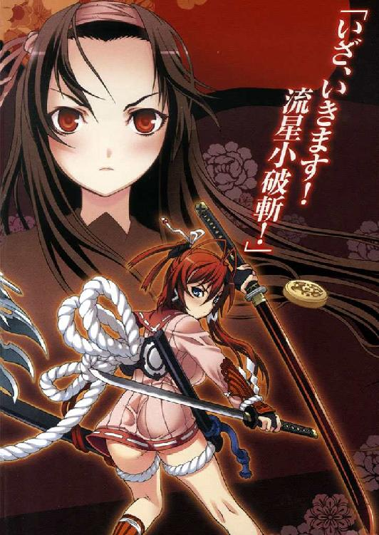
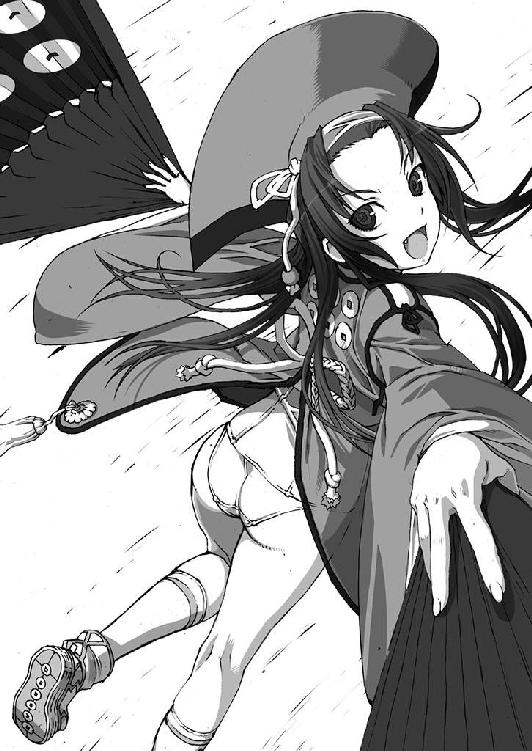

| 百花繚乱 (ＨＪ文庫) | |
| すずきあきら | |
| (2009) | |

ときに平誠二十某年。
大日本国は徳川二十五代将軍慶康の治世の下、いっけん平和と繁栄をおう歌しているように見えた。
大日本国の中枢、天領・大江戸行政特区から離れること約百キロ。
霊峰富士の裾野に広大な領地、もとい敷地を誇る一大学園があった。
武應学園塾。
大日本国の次代を担う武家の子女が集められた、生徒総数三万人を超える巨大教育オーガニゼーションである。
保育・幼稚舎から大学院、その他関連施設を擁し、そのうちの中等部から大学までが全寮制で、富士キャンパスに集められている。
幕府直轄の学園には高度の学生自治が保証され、徳川一門が占める旗本生徒会によって管理されていた。
武應学園の生徒は、すべて武家の子弟、つまり女子にいたるも武士である。
生徒たちはふだんから帯刀を許され、刀以外の武器も所持は当然。
士道に適えば、いかなる場所、時間においても、またどんな相手であっても、生徒どうしの勝負は認められる。
まさに文武両道。
生徒たちは勉学に励みながら、ときに自らの命をも賭した戦いに備えて研鑽しなくてはならない。
永遠不朽ともいえる学園に、近ごろ不穏な動きが活発化していた。
学園を支配する徳川一門への不満、反抗、地下活動。
それはまるで学園の外の、現実社会を反映するように、長すぎた徳川家と幕府支配を打ち破ろうと、胎動しているようだった。
それはここ、柳生道場でも......。
１
「......は！ ......はっ！」
柳生道場の裏庭に静かな気合いが迸っている。
真剣の素振りを行うことすでに千回。
柳生宗朗は、大きく息をつくと剣先を静かに降ろした。
両肌脱ぎにした道着を腰で縛り、露わになった上半身には玉の汗が浮かび上がっていた。
痩身に、しなやかな筋肉がまとわりついている。長めの前髪の先から汗のしずくが、草の露がこぼれるように、落ちた。
「ダメだ。こんなことじゃ、まだまだ......」
柳生真陰流の剣の冴えにはほど遠い。そしてこんなことでは、
「この柳生道場を守っていくことなんて......」
学生街の一角にある柳生道場。
江戸柳生家は柳生宗矩以来、四百年を超える将軍家剣術指南役だ。
となればここ武應学園でも、相応の役目を求められる。それがこの道場であり、宗朗は柳生家の次期当主として学園の剣道・剣術のいっさいを司る立場にあった。
しかしいま宗朗の背後にあるのは無人の道場。
それも、明日にでも引き払わなくてはならない。
なぜか。旗本生徒会の中枢、執行部の申し渡しによるものだった。
『柳生道場は、生徒会執行部直轄とする。柳生宗朗は道場門弟をすべて率いて、生徒会風紀委員会の指揮下に入り、豊臣狩りを執り行うべし』
そんな通知が届いたのがおよそ一週間まえ。
豊臣狩り......。
生徒会によって行われている反体制生徒狩りのことだ。
いまや豊臣狩りの名の下に、生徒会の横暴はますますエスカレートしている。
それを一手に担っているのが風紀委員会であり、宗朗はその先兵となれ、と言われているのだ。
しかし宗朗はこれを無視した。
「バカバカしい。豊臣狩りだなんて......」
武應学園は武士の学園ゆえ、将軍家をはじめ、それまでの大名、旗本、他さまざまな武家の子女が在籍している。
明治の大改革以来、階級としての武士は廃止されたが、それぞれの武家は脈々と受け継がれていた。
宗朗の柳生がそうだし、島津、毛利、前田、伊達、など大藩の家系も。
織田、今川、北条などのかつての戦国大名。
北畠、大内、一式などの名家。
そのうえ石田、小西、長宗我部など、敵側として廃された武家も、時代とともに復活、再興されるなどしていたから、武應学園にはあらゆる武家が存在していると言ってよかった。
しかし豊臣家、豊臣姓の生徒だけはいない。
つまりは生徒会の口実なのだ。
執行部に逆らう者、そのそぶりを見せる者、もっといえば気に入らない者を、「豊臣側」とひとくくりにして弾圧する。
逮捕された生徒には、洗脳、拷問、強制労働のすえ、退学、放校といった処分が待っていた。
「豊臣狩りなんて、あっちゃいけないんだ。そんなこと、しちゃいけない」
だから宗朗は、執行部から通達があっても動かなかった。
しびれをきらした生徒会が催促してくると、こんどは道場を閉鎖した。
「どうしてこの道場を閉鎖しなくちゃいけないんですか!?」
門弟の生徒たちは色めき立ったが、宗朗の決心は変わらない。
（......きょくたんだったけどしかたがない。みんなに「豊臣狩り」なんていう口実の生徒弾圧をさせるよりは......）
こうして百人以上いた門弟たちを事実上破門した宗朗は、彼の住みかでもある柳生道場をひとりで守っている。
しかしそれももう時間の問題。
逆らった宗朗を、執行部は許さないだろう。
いまにも風紀委員会が押し寄せてくるかもしれない。そんな中で、宗朗にできるのはここに至っても、
「剣の技を磨く、それしかない。ないよな......」
ぽつり、と漏らして視線を落とした。
さっきまでの汗が、もう引いている。宗朗は縁側に置いていた鞘を取ると、右手の刀を静かに収めた。
パチン。ちょうど「はばき」が鞘の内側を叩く、小さな心地よい音がしたときだ。
とつぜん、背後から轟音と振動が襲った。
「......！ な、......んだ!?」
道場が大きく揺らぐほどの衝撃。まるで地震と雷がいちどに来て、建物が崩れたのではと思うほどだ。
風紀委員会の襲撃か、と思わず身構えた宗朗だが、それ以上の物音はない。
「いったい、なにが......？」
音と衝撃は道場の稽古場のほうから聞こえた。
宗朗は縁に上がると、真剣を携えながら稽古場へと走った。
２
「な、なに......これ......」
宗朗が見上げる稽古場の天井から、夕方の空が見えていた。
屋根まで貫いて、天井にぽっかりと穴が空いているのだ。
そればかりではない。
床にも大穴が穿たれていた。
磨き上げられた飴色の床板がそこだけ陥没して、白い煙をくゆらせている。
明らかに、上から墜ちてきたなにかが、屋根を破って床に突き刺さった。そんな跡だ。
「隕石......なのか。それとも飛行機からなにか......」
ひとまず、風紀委員会の攻撃ではなさそうだ。宗朗はいちおう警戒のかまえは崩さず、床の穴に近づいた。
きれいに円く陥没した穴。直径は一メートルくらいか。
霧のように煙るもやが晴れていく。覗き込んだ宗朗は、
「ぇ......!?」
声を詰まらせた。
そこに......白い身体があった。
胎児のように丸まって、やわらかそうな脇腹や腿を見せている。
目に鮮やかな、燃えるような赤い髪が長く、その身体を覆っていた。
「人......お、んなの、子？ まさか......」
思わずまた上を見る宗朗。天井の穴から、丸く切り取られた空が見えた。あかね雲をよぎる鳶の姿を思わず目で追って......いる場合ではない。
「えええ！ えええ!?」
天井の穴。床の穴。そして裸の少女。
そうだ。裸なのは問題だ。大問題だ。もう一度見下ろす宗朗の頬に朱が走った。
「ち、違う！ い、いや、なにが違うとか......と、とにかく、屋根を突き破って女の子が......空から墜ちてきて......待て、屋根から落ちただけかも。......いや、ない。屋根から落ちるだけであんな穴......！ ということは、やっぱり......！」
そこまで言って宗朗はあることに気づいた。
「刀......？」
少女がその身体でしっかりと刀を握っている。
それは鞘に収められた大小の刀。
ふつうの刀よりずいぶん大きい。小刀だけでも、いま宗朗が持つ大刀に匹敵するほどの長さがある。
大小を身体で抱え込んで、柄までも両手で抱くように握りしめている。まるで刀を護るように。あるいは刀と一体になるかのような......。
「そうだ。この子、どこか......」
見たところキズひとつないように見えるが、ケガでもしているなら介抱しなければならない。あるいは学園の病院に運ぶことも。
血のように赤い髪に目を奪われながら、宗朗はそっと手を伸ばした。
ひとまず刀を少女の身体から離そうと、その柄に手をかける。
ビクン......！ 少女の身体が動いた。大きく痙攣するように震えた。
「わ！」
宗朗の腕を、少女の手がつかんでいた。
ぎっちりと固く、指が食い入るほどに握りしめている。
「......よ、よかった。生きてるんだね。その、だいじょうぶ、ですか。ケガは、ない......」
話しかける宗朗の前で、弾かれたように少女の顔が起き上がった。
宗朗を仰ぎ見る、その目。
髪とは対称的に、明るい湖のように蒼い目が、宗朗の目を、見つめた。
湖の水面に宗朗の顔が映っている。大きな少女の瞳の中の自分に話しかけるように、宗朗は言った。
「や、や、ぁ......きみ、だ......」
誰？ そう言おうとしたしゅんかん。
「ァ、ハ」
少女の顔に笑みが広がった。
「あ......はは......？」
ついもらい笑いする宗朗。その顔に、少女の腕が伸びてくる。え、と思う間に、両手で顔を包まれる。
少女の唇が動いた。
「......ま、ま」
「え、なんて言ったんだ。ま、ま......ママ？」
「ママ......ママ！」
無邪気にそう言って笑う少女。裸の胸が、たゆん、と揺れた。
「い、いや、ママ、じゃないよ。ぼくは柳生......というか、男、男のほうだ。ママじゃなくて、パパ......違うな。パパはパパでまた変な誤解が......きみはぼくとそれほど歳も違わないんだから......おじさん......お兄ちゃん、だ。お兄ちゃんだよ」
別に呼び方を決めたいわけではないが、ママ、はないだろうと思う。
（でも、言葉は話せるんだな。だったら事情もこれで聞ける......）
宗朗が少しホッとしたしゅんかん、
「お兄ちゃん......」
少女の顔がみるみる近づいた、と思ったときには、もう唇が触れ合っていた。
チュー......。
ほんとうにそんな音がした。少なくとも、宗朗は聞いた。自分の、口腔内から頭のなかへと響いてくるキスの音を。
やわらかくて、あたたかい。弾力のある唇。どこか、花の香りがするような......。
（......ふああ!? こ、これって......これって......!!!）
ファーストキス。
柳生宗朗、高等部一年、十六歳の初接吻は、こうしてとうとつに、消えた。いや、奪われた、と言ったほうがいいかもしれない。
そして、まだある。むしろキス以上に重要なことが。それは、
（くっついてる。この子の裸......じゃない、肌が......ぼくの......）
宗朗は稽古の直後に駆けつけて、両肌脱ぎのまま。その裸の上半身に、少女の素肌がぴったりと密着している。
もよん、と胸のあたりに感じる物体。やわらかくて、でもどこか弾むようで、想像以上に大きい、ふたつの、膨らみ。
ドクンッ！
とたん、心臓が破裂するように大きく脈打った。しゅんかん、宗朗の身体が大きく震えるほどに。
（な、なんだ......これ......!?）
身体が圧倒的に熱くなってくる。
血液が沸騰して、それが恐ろしい勢いで身体のすみずみまでかけめぐる。横溢し、噴き上げ、侵食される......。
「!! ......ずぁああ！」
口を離した。キスしていたふたりの唇の間に、ツーッ、と唾液の糸が引いて、いっしゅんで消えた。
同時に宗朗は、少女の身体を突き放していた。
「きゃ、ん！」
「あ！ ご、ごめ......」
（ん、なんともない、ぞ。さっきのは、錯覚？）
まさか、キスと素肌が触れ合っていたその興奮からあんな？
あわてて思った宗朗が手を差し伸べる。少女を抱き起こす、というところ......、
「柳生宗朗！ おとなしく執行部の下知に従いなさい！」
３
稽古場に響く、女子の声。宗朗が振り返る。
「生徒会......？」
そこには生徒会の徽章と風紀委員会の腕章をつけた制服姿の少女が、仁王立ちしていた。
「執行部風紀委員会、服部半蔵美成です。柳生道場引き渡しの任でまかりこしました！」
メガネの向こうの冷静な目。メイドふうにアレンジした制服姿の少女・半蔵が言う。その背後には、ずらりと風紀委員の女子生徒たちが。
合わせて十人はいる。
女子とはいえ、油断はできない。全員、服部流忍術を身につけた生徒会の実行部隊だ。制服の背中には直刀を背負っていた。
「こ、こんなときに......」
宗朗がうろたえる間にも、半蔵は稽古場に上がり込んで近づいて来た。
「柳生宗朗、ただちに従いなさ......あーっ！」
が、天井の穴に気づいて声を上げる。
「なんですかその穴は！ すでに道場は生徒会の管理物件です。一部でも勝手に壊すようなことは......ああ、床にも......!?」
半蔵は宗朗の同級生。クラス委員長でもある。ふだんから口やかましいのは「仕様」でもあった。
床の穴をめざとく見つけた半蔵が、そっちにも非難を浴びせようとしたときだ。
そこまで近づかれては、もう隠すことはできなかった。
「あ、えっと......」
宗朗に抱きついている裸の少女を半蔵が見つける。
「......！ な、なに？ なんです、これ......破廉恥、な......」
悲鳴のように半蔵が叫んだ。
「生徒会法二十一条、男女交際違反です！ こ、こんな......裸の男女が、抱き合って......ふ、不潔な......！」
半蔵の顔がみるみる真っ赤になる。宗朗はあわてて叫んだ。
「いや、ちょっと待って！ これは、誤解で......ぼくも知らないんだ！ この子が誰なのか......穴から落ちてきて、いや、見たわけじゃないけど、たぶん。だから......」
「お兄ちゃん♪」
「そう、ただのお兄ちゃんで。......え」
少女が笑っていた。が、半蔵の顔はさらに引きつっていく。
「お兄ちゃん......！ き、近親相姦まで！ 妹に手を出しているんですか！ 鬼畜！ 柳生宗朗、あなた最低の......！」
そこまで言うと、怒りのあまり懐の懐剣を抜きはなった。宗朗へ突きつける。
「待て、やめろ......！」
が、そこは宗朗も侍だ。
反射的に、抜き付けられた懐剣に刀を合わせた。持っていた打刀をとっさに抜いていた。
キンッ！ 鋭い金属音とともに、ふたつの刃がぶつかりあった。
半蔵の懐剣が手首を離れて飛ぶ。
このとき宗朗が、少女を抱いていなければ、少女に抱きつかれていなければ、払った懐剣をかんたんに避けることができたろう。
「くっ......！」
懐剣の先が、宗朗の額を浅く切り裂いていた。少女に当たらないよう、かばったのも宗朗が切っ先を避けきれない理由になった。
キズから血がしたたる。
「ぁ......！ だいじょうぶ、ですか!?」
驚いたのは半蔵のほうだった。だが宗朗は笑って、
「だいじょうぶ。キズは深くない。それより、ちゃんと説明させて......」
言いかけた言葉が止まった。視線が、腕の中の少女に落ちている。
少女の顔に、宗朗のキズからこぼれた血が落ちていた。わずかだが、胸にも。
「ごめん。汚しちゃったね。すぐに拭いて......」
宗朗がハンカチを探そうと、袴のかくしに手を入れたときだ。
不意に少女が、顔を上げた。
前髪に覆われて見えなかった少女の顔が、一変していた。
血を浴びたその表情は、それまでの甘く、やわらかく、幼女のようだったかわいらしさから、大人びた、冴え冴えと氷のように冷たい顔に。
「きみ、は......」
驚く宗朗の前で、少女が身を起こした。ゆっくりと、立ち上がる。
「なんなんですか......誰、なの......」
その豹変ぶりに、思わず半蔵も声を上げた。それに応えるように、少女の瞳が半蔵を見下ろす。その手には、自らが抱えていた大小の刀を握っていた。
「我は......柳生十兵衛......」
静かだが、地の底まで響くような重い声だった。
あたたかい湖のような瞳が、いまは深海の蒼に変わっていた。
「十兵衛......十兵衛三厳さまのことなのか？」
声を出したのは宗朗だ。
柳生十兵衛三厳。
なによりその名は、柳生一門にとっては特別なもの。それがこの、裸の少女の口から発せられるとは。
「きみは、誰......」
「お、おとなしく、捕縛されてください！ その刀を捨ててください！ でないと、柳生宗朗、あなたともども、その女も、実力で連行させていただきますよ！」
半蔵が言い、手を振ると、配下の風紀委員たちが円を描いて広がり、囲みを作る。宗朗と少女を取り囲んだ。
「ま、待て！ 待ってよ！ この子と話を」
宗朗の言葉を無視するように、女子生徒たちが抜刀した。その刀の煌めきを目に映したとき、柳生十兵衛と名乗る少女が、動いた。
音もなく宗朗から離れる。
と、そのときにはもう、両手に一本ずつ刀を持っていた。左手に大刀、右手に小刀。それを、鞘ごと半回転させ、床に立てた。
（なんだ......なにをしようと......）
宗朗は目を見張った。
少女が、自分に気づかせずに離れたことも驚いたが、手にした刀を二本とも、柄を下にして立ててしまったことも異様だった。
（あれじゃ、剣を抜けないじゃないか。いや、抜いてほしくはない。これ以上騒ぎを大きくしてほしくはない、けど......）
剣士としての宗朗の感覚が、何かを告げている。この先に起こることを見届けたがっていた。
少女の突然の変化と、柳生十兵衛という名乗り。
それに、さっきまでのふにゃふにゃしたやわらかい、あたたかいものとはまったく別の、全身に不思議な気がみなぎっている。殺気、とも違う、強いて言えば剣士だけがそれを理解しうる、剣気というべきものが。
（それにしても......なにか着たほうがいいんだけど）
あいかわらず少女は身になにもまとわない、生まれたままの姿のまま。
せめてもと、宗朗が腰に縛っていた自分の上着を差し出そうとした。が、それを察知したのか少女がひとこと、
「下がっていろ。いや......跳べ」
「跳......べ？」
下がるならばまだわかる。が、跳べ、とは。それはどんな忠告なのか。
だが宗朗が次の問いを発するまえに、それは起こった。
４
「抵抗するのなら、実力で排除させていただきます！」
半蔵が振り上げた手を、さっ、と下ろした。それはもちろん、少女への攻撃の合図。
「待て！ まだ......！」
宗朗が止めようとする間もなく、それが始まった。
半蔵配下の風紀委員、服部忍軍の必殺のかまえ。
「風車掛かりの陣......です！」
服部忍軍の女生徒、つまりくノ一たちがいっせいに同じ方向へ走る。人の輪が回転する。
輪の中心には宗朗と少女。そして輪の外には半蔵がいた。
風車掛かりの陣を使うのは、半蔵が少女のいい知れない剣気を認めたということでもあった。
たった一人に、十人近い同時攻撃。宗朗がいるとはいえ、過剰とも思える攻撃力、攻撃法だ。
「大事を取らせていただきます。命まで取るとは申しません。しかし多少のケガは、ご了承いただきます......！」
半蔵が言った。そこから先は、風車掛かりの陣がいよいよ牙を剥いて襲いかかってくる。
「やっ！」
「たぁっ！」
甲高いかけ声とともに、車手裏剣が飛び来る。円盤状の周囲に多くの切っ先を持った手裏剣だ。
それだけではなかった。
「はぁっ！」
裂帛の気合いが迸った。同時に、十兵衛を取り囲むくノ一全員が、身体ごと飛んでくる。
車手裏剣を放ちつつ、抜刀したくノ一全員の襲撃。
飛び道具に対応しようとすれば手元がおろそかになる。そもそも三百六十度全周からの攻撃など、どんな者にも防ぎようがない。
「これが服部流忍法、風車掛かりの陣、必殺のかまえ、です！」
半蔵が言う。
くノ一たちが作る円が、ギュッ、と収縮した。
（来る......！）
宗朗が剣を握る手に力を込める。
が、いっせいに向かってくるくノ一たちに、少女は逃げようとも、刀を抜こうともしない。
相変わらず、二本の刀は柄を下にして床に立てられているだけだ。
「逃げないと！ ぼくが敵を引きつけるからその間に......！」
が、宗朗が走り出そうとする刹那、少女が短く、言った。
「跳べ」
「え」
「跳べ！ わたしの背中を踏み台にしてよい」
言うのと、少女の身体が地を這うように沈み込むのが同時だった。
宗朗が振り向いたとき、そこには真っ白な背中が、スロープのように見えた。
女の子の背中を踏み台にするなんて。
ふだんの宗朗ならそう考えたろう。考えたあげく動けなかったかもしれない。が、そのときは、予感がした。
剣士を突き動かす、予感。
「......ごめ、ん！」
宗朗の足が、少女の背中を踏んで、蹴っていた。まっすぐ、自分の身体を空中へ飛び上がらせるために。
「それでよい」
ぽつ、と少女の声が聞こえた気がした。
そして空中にすでにある宗朗が、視線を落として見たもの。
少女が刀を抜いていた。
正確には、少女が屈み込んだとき、二本の刀は支えるものを失って倒れ始めていた。柄を外側へ向けて、扇が開くように。
が、倒れるいっしゅんまえに、少女の手が刀の柄を掴んだ。両腕を交差させて、右手で左の大刀を。左手で右の小刀を。
二本の刀とも、柄は最初から床に着いている。
少女が抜きはなったとき、その刀の剣先は限りなく地面、つまり床に近い、ほとんどすれすれを薙ぎ払うように、迸った。
「なん、だ!?」
宗朗の目に、鮮やかな幾何学模様が映った。
少女の両手の大小が、ほぼ正円の軌道を走る。同時に、少女の身体自体も回転した。
刀の描く二重の円、それが三百六十度回転して描く回転図形。
その美しさに目を奪われるより先に、切っ先からすさまじい剣風が迸る。
それは剣圧ともいうほどの衝撃波となって、包囲の輪を狭める風紀委員のくノ一たちを襲った。
「きゃああああっ！」
迸る悲鳴。いっしゅんでなぎ倒される服部忍軍のくノ一十人。
「す、すごい！」
これでは確かに、逃げる場所はない。
唯一少女の剣圧を避けることができたのは、直上の空中にあった宗朗だけだった。
着地した宗朗は、改めて少女を見た。
一糸も身にまとわない裸身が、白く輝いている。
腰まで垂れ落ちた赤い髪は、さらに鮮やかさを増して燃えているようだった。
大小をまだ握ったままのその姿。
全身から立ち上る剣気が、宗朗の目の前でいっしゅん、形を為した。
「......龍......龍だ！」
まるで少女の身体の中から現れた龍が、天の高みへ駆け上るかのごとき姿を見せる。
龍の双眸が少女の目となって、宗朗を見下ろしていた。
「柳生......十兵衛......！」
宗朗が再びその名を、無意識に口にする。
「......はに」
と、目の前で少女の姿が崩れた。
たちまち龍の気は雲散霧消し、膝から倒れ伏す。
「危ない！」
いっしゅん早く、宗朗が抱き留めた。
「だいじょうぶ？ なにが......」
が、腕の中の少女に、すでにさっきまでのすさまじい剣気はなかった。
それは初めて少女を抱き起こしたときの、やわらかく、やさしい、おだやかな微笑のまま目を閉じていた。
「にゃ......お兄ちゃん」
花のような唇がほころんでつぶやくのを、宗朗は不思議な気持ちで聞いた。
「......なんなんですか。いったい、あれは......わたくしの、くノ一たちが......」
そしてそのなりゆきを呆然と、見つめる半蔵。
後方にいたせいで、十兵衛の剣風をとっさに避けることができたものの、気絶した配下のくノ一たちの、累々たる肢体を目の当たりにして、
「完敗......というんですか。ここはいったん退くしか......くっ......！」
血の滲む唇を噛みしめるほかなかった。
「柳生十兵衛、現れたようじゃな」
そう言う声は、どこか楽しそうに浮き立つ調子を感じさせた。
柳生道場を見下ろす大破風の屋根の上。
すでに朱よりも墨を刷いたような空に、ふたつの影がひとつになって浮き出していた。
「......」
上になった小さな影を、下の大きな影が肩に乗せ、支えるかっこう。
そのどちらもが、少女だった。
上の少女は派手な陣羽織ふうの上着を羽織り、手にした巨大な扇子を弄ぶように開け閉めしている。
上着の中は身体にぴったりとした伸縮性のスーツで、まだ幼さの残る身体を包んでいた。
どちらかというとスクール水着に酷似したそのスーツから、素足が根本まで露わになって投げ出されている。
「空から屋根を突き破って道場へ墜ちてくるとはの。イレギュラーにもほどがあるわ」
扇子の少女を肩に乗せているのは、かなり背の高い少女だった。
いちおうは学園の制服をまとっているが、絞り上げた上着はヘソから下をすっかり露出している。
異様なのは、スカートを穿かず、下着を剥き出しにしてはばからないところだ。
しかも下着は、きりりと少女の股間に食い込む下帯。つまりは九尺の褌である。
凶暴なまでに上着を押し上げる胸の膨らみ。むっちりと露わになった下半身のボリューム。
無口な少女が口を開いた。
「......戦ってみとうございます」
青い髪はかなり長いのだろうが、そのほとんどを盛り上げるようにまとめていた。肩には朱塗りの長槍を一本、担いでいる。
「ふむ。おもしろい。まだ目覚めたばかりで、十兵衛は本来の力を取り戻しておらぬようじゃ。おぬしなら簡単に勝てようぞ」
「......」
「が、それではちとおもしろくないのお。もっとなにか......そうじゃ、あの男、柳生宗朗といったか」
少女の唇に笑いが宿る。
「あやつ、まことに『将』の器かどうか、ひと当てして試してやるがよい。それで十兵衛がどう動くかもわかると言うものじゃ」
そこまで言うと、下になった少女のほうを向いて、漏らした。
「のう、又兵衛」
言われた少女が、返す。
「御意。幸村さま......」
５
「......ふぅん。それで、負けて逃げ帰って来ちゃったっていうわけ」
「申し訳、しだいもありません......」
千姫が問い、平伏した半蔵が答える。
生徒会執行部が独占的に使用する学園の管理棟。通称、生徒会城の一角。
二の丸と呼ばれているこの離れは、千姫の私的空間だった。
それが生徒会執行部の特権だったし、千姫と呼ばれる彼女、徳川千は全校生徒会長徳川慶彦の実妹であり、生徒会副会長でもあった。
「なんのために服部忍軍を率いているのかしら、おまえは。ほんとうに役に立たないのね」
ため息混じりに言う千姫の瞳が、不思議な喜色に輝いている。
二十畳はあろうという畳張りの部屋。
そこに革張りの椅子を持ち込み、ルーズに腰掛けている千姫。組んだ脚を投げ出している。
半蔵は千姫のその直前に平伏していた。
三つ指をつき、畳に額をこすりつけるその姿を、千姫は睥睨している。ニーソックスに包まれた足指をキュッ、と握るとパキッ、と小さく骨の鳴る音がした。
「それにしても......その裸の女というのは、興味あるわね。おまえ、よく見たのでしょう？」
「は、はい」
半蔵が顔を上げる。
「あれは......あの剣法は、初めて見ました。そのために遅れをとりましたが、次は、必ず......！」
決死の表情を見せる半蔵に、千姫が、
「そんなこと、当たり前でしょお？ それよりね、わたしが興味あるのは、その女が柳生宗朗と裸で抱き合っていた。そういう関係にあるのか、っていうことなのよ」
そう言って笑う。
「はい。あれは......調べてみなければわかりませんが、そのように破廉恥な関係に、見えました。柳生といえば将軍家御指南役。その宗家の嫡男が、生徒会執行部の下知に服従せず、いままたこのように逆らったことは重罪に当たると思います」
半蔵は宗朗、というよりも、謎の少女に負けたくやしさをメガネの奥に滲ませながら、訴える。
「千姫さまには、なにとぞ、この半蔵に挽回のチャンスをいただきたく......！ この次こそは、宗朗ともどもその女を逮捕して......ぁ」
が、半蔵の言葉を遮ったのは、千姫の言葉ではなく足先だった。
ニーソックス越しの足指が、半蔵の額をピン、と軽く弾いたのだ。
「だから。当たり前のことはそれ以上言わなくていいわ。同じ相手に二度負けるなんて、そんなこと、許されるわけないもの、ね。千だったらくやしくて、切腹しちゃうな」
さらっ、と言ってのける。
「は、はい。おおせのとおり、です」
半蔵の額に汗が滲んだ。
千姫の足指は額から半蔵のメガネを弄び、それから鼻の頭へ。そして唇へと、突きつけられる。
「そうね、次は勝つ、として、問題は今回負けた責任を、おまえがどんな形で千に見せてくれるか、ということなの。わかるかしら」
「はい......」
半蔵の声が、さらに沈み込んだ。
（御姫さまが怒っていらっしゃいます。あぁ、どうしたら......わたくし、御姫さまに折檻されてしまいます。どんな、恥ずかしい......）
「ど、どうぞ、お許しを......この半蔵、いかなる罰をも、甘んじてこの身に受ける覚悟でございますれば......」
「そうねぇ、最近枝毛が増えてきて、困るのよね。それにツメが乾いて、なんだかマニキュアがうまく乗らないの。空気が乾いているのかしら。ねえ」
千姫が半蔵のほうを見ずに漏らした。
二度、三度と半蔵の唇に千姫の足先が触れる。
半蔵は、はっとした。
（いけない。そんなことをわざわざ言うのは、御姫さまが退屈している証拠です......）
「し、失礼、いたしま、す......」
半蔵は目を閉じると、赤く染まった顔を仰向ける。かすかに唇を尖らせるようにして、千姫のニーソ越しのつま先にキスした。
「なんなりと......半蔵に罰をお与えくださ......」
さらなる咎を欲する言葉が、半蔵の口から出る、というところ、
「ここにいたのかぁ～、千！」
とつぜん、気の抜けたような声がした。と思ったら、半蔵の背後にヌゥ、っと背の高い男が立っていた。
「きゃあ！ ......！」
つい声を上げる半蔵が、自分の口を手で押さえた。
驚いて平伏する。
「兄上さま！」
それは千姫も同じだった。投げ出していた脚を急いで引っ込める。椅子の上に深く腰掛けなおした。
「なにして遊んでるんだぁ。ぼくも入れてよ。半蔵とプロレスごっこ？ それともさわりっこかい。よぉし......！」
「違います！ 違いますったら、兄上さま！」
千姫が、兄と呼ぶ男。
この男こそ、武應学園全学生徒会最高執行部長。ふだんは単に生徒会長と呼ばれる職に中等部入学からある者。
そして将来は、徳川将軍としてこの国の王となる、徳川宗家の嫡男。
徳川慶彦。
「なんだよぉ、仲間はずれにするなよぉ、千んぅ」
百八十センチを超える長身。
背中まで届きそうな長い髪。
いっけん痩身に見えるが、じつは全身にしなやかな筋肉をまとっているのは、見る者が見ればわかる。
そのまま抱きつこうとする慶彦に、半蔵は身を小さくしていよいよ畳にひれ伏した。
「な、なにとぞ......」
顔ばかりか、身体まで真っ赤に染まる。
「兄上さま！」
千姫も慶彦の手を引いて止める。慶彦は振り返ると、
「んぁあ？ じゃあ、千でいいや。千とは毎日抱き合って寝てたんだから、さぁ」
慶彦が言うと、千姫がさっ、と顔を赤くした。
「それは......！ 千が三つにもならない、まだ子どものころで......ぜんぜん違いますからね！」
「お風呂も毎日いっしょだったのにさぁー、最近ぜんぜんいっしょに入ってくれないんだよなぁ」
こんどは自分から千姫の手を引く慶彦。
「困ります！ ちょ、ちょっと......兄上さま......もう、ほんとうに、千は怒りますよ......ぁ......！」
慶彦はしかし戯れに千姫の身体に抱きついて離れない。
半蔵はその足元で平伏するばかりだ。
「ちょっとさわってない間に、ずいぶん発育したなぁ～、千ん～」
慶彦の手が、千姫の制服の上をあちこち這い回る。
「ちょ......だ、ダメだと言って......んんっ！」
「うわぁ、や～らかぃぞぉ」
ふたりがもつれたままでいるところに、さらに別の声がした。
「慶彦さま。ここにおいででしたか」
大きくはないが、よく通る声。どんな場面でも、その場の空気を透徹してしまうような、冷静沈着な声だった。
松平尊保。
もちろん徳川一門の家柄であり、生徒会書記長。
つまり事務方のトップを務める能吏で、歳は慶彦と同じ十七歳。つねに慶彦の側にあって、その存在は慶彦の影、とも言えるほどだった。
「尊保ぃ、おまえもいっしょに来いよぉ。四人でさぁ、身体くっつけあって、さわりっこしたらすごーく気持ちいいと思うんだよねえ」
慶彦の誘いに、尊保は笑みを浮かべると、横分けにした長めの前髪をわずかに指で流した。
「お戯れを。千姫さまに触れるなど。それも直に触れるなど、そんなことをしたら、この身、おそれおおくて砕けてしまいかねませんゆえ」
「まぁ」
大げさな物言いに、千姫は芝居じみた声を上げると、サッ、と兄から離れた。
尊保は慶彦に向き直ると、
「午後の政務の時間です、慶彦さま。どうか執務室へお戻りを」
おだやかな笑みを浮かべながら、しかしいっさいの妥協は許さないという表情、声音だった。
「えええー、もっと遊びたいなぁ、仕事なんてめんどうくさいよぉ、尊保、おまえが代わりやっておいてよぉー」
慶彦はダダをこねるが、
「できればやっております。集中すればすぐに終わること。そのあとはお茶をいただきましょう。大江戸から取り寄せた穂源庵のきんつばもございますよ」
きんつばと聞いて、慶彦の目がふら、と揺れた。が、あくまでしぶしぶという姿勢はくずさず、
「ちぇ、しかたないなあ。まあ、いいや」
尊保にうながされて、部屋を出て行く。
ホッ、とする千姫と半蔵。尊保はふたりに改めて会釈した。そのまま退出しよう、というところ、
「また来るぞぉ、千。こんどはいっしょにお風呂に入ろうね。半蔵、おまえもだぞぉ」
扉の向こうから顔だけ出して慶彦が言う。
しかし尊保に引っ張られたのか、千姫と半蔵が反応するまえに、その顔がまた引っ込んだ。
「ふぅ......困った兄上さま」
嵐のように引っかき回された空気がまだ収まりきらない。千姫が安堵とも不安ともつかない声を漏らす。
二の丸を出たところで、慶彦が尊保に話しかけた。
「千には断られちゃったし、尊保、ふたりでどうだい。あったかいお風呂に入って、さわりっことか、さ」
尊保は動じることなく笑みを浮かべる。
「お戯れを。それよりも、至急お耳に入れたいことが」
じつは尊保が慶彦を連れ戻した真の理由はそれだった。しかし、
「サムライがまた、現れたのかい」
慶彦があっさりと言う。尊保はうなずいて、
「はい。間違いないかと」
「誰」
「柳生の......柳生十兵衛三厳でございます。柳生道場の、宗朗のもとへ、昨晩。服部半蔵以下、風紀委員会のくノ一たちがかんたんに敗北したのもそのせいかと」
「へえー、柳生十兵衛とは、それはすごいね。ふふん、千のやつ、報告をぼくに上げないつもりかな。半蔵をいじめるのもいいけど、ちゃんと仕事はしてほしいよねえ。わざわざぼくが出向いたっていうのにさぁ。千に風紀委員会をまかせているぼくの立場もあるんだからねぇ」
ひょうひょうと言う慶彦。
まるで今晩の食事の予定や、テレビの内容を話すようだ。
「千姫さまには、お考えがおありなのでしょう。慶彦さまに報告を上げると、正式に半蔵に罰則を科さなくてはならなくなります。ああやって個人的にいじめる程度がやさしさなのかと」
「まあ、わかってるよ。それよりさぁ」
そこまで言うと、慶彦は歩みを止めて尊保を振り返った。
「柳生十兵衛、どうしようか」
尊保もうなずいて視線を返す。
「いかようにも。......なさいますか。ご自分のものに」
「ふふん。さあねえ」
他人事のように慶彦は視線を逸らす。
こういうとき、慶彦は相手を試している。尊保はしかし笑みを浮かべて、
「もとより柳生は将軍家指南役。慶彦さまにお仕えするのが摂理ですから」
「でもさあ、宗朗のやつ、ムカつくんだよねぇ。昔、ちょっと目をかけてやってたのにね。しかたないなあ。十兵衛を手に入れたら、つぶしちゃおうか」
笑って、またなにもなかったかのように歩き出す慶彦。
「はい。おおせのままに」
それから尊保が笑って、
「きんつばは、どうなさいますか」
言うと、慶彦は口の端をちょっと持ち上げて、
「いらないよ。ぼくが甘いもの嫌いだってこと、知ってるだろ？」
「はい。よく存じております」
「なら、そういうことさ」
慶彦はそれだけ言うと、歩みを早めた。
いつのまにか背筋が伸び、長身がいっそう際だっていた。
それまでの冗談めいた笑いが消え失せ、暗い色を帯びた双眸には酷薄な色が強く浮き出していた。
１
『父上！』
宗朗の視界に、父宗義の揺れる袴が見えていた。
見上げる宗朗の掲げた手は小さく、わずかに温かさを残していた。さっきまで手を繋いでいたのだろうか。しかしすぐに冷えていく。
袴が、遠ざかっていく。
辺りの風景は靄がかかっているように見えない。玉砂利を踏みしめる草履と、足袋の白さが目を惹く。
『父上......父上！』
いまよりも高いボーイソプラノの声に、自分でも驚く。けんめいに父の後を追おうとするが、どんどん離れていくのは歩幅の違いだけではない。
身体が重い。
空気がゴムみたいにまとわりついて、宗朗の身体を引き戻そうとする。
急速に光が失われて、気がつくと闇の中に父の後ろ姿だけが浮かび上がっていた。
寒い、重い......心細い。怖い！
取り残されまいと必死でもがく手脚は宙を掻いて、父の姿はさらに遠ざかっていく。
袴だけだったのが、いまでは背中まで。背中までかかる蓬髪が揺れていた。やがてその姿さえ見えなく......、
『父、上......ぇ!!』
がくっ、と膝が折れた。耐えられず、顔から地面に崩れる。痛みと冷たさで身体がガクガクと震えた。
宗朗の小さな身体がさらにギュッと小さく、縮んでいくようだった。
力もなく、心も萎えて、なにひとつ振り絞ることもできない。
このまま消えていくのだろうか。
消えていく、消えていく......消えて......。
ふわっ、となにかが触れた。
いつのまにか剥き出しになった肌に、ふぁさふぁさ、ふるふる......やがて、包み込まれる。覆われて、くるまれる。
やわらかくて、あたたかくて、心地よい。
視界を上げると一面のおぼろな乳白色だった。
宗朗はくるんと身体を丸めるようにして、抱き上げられていた。
手に触れる、やわらかな房。
ただようのはかすかに甘いミルクの匂い。胸いっぱいに吸い込む。
『ぁや......ぁ』
声にならない声を漏らしていた。
さっきまでの冷気がウソのように、暖かい。汗ばむほどの温かさ。しかし心地よい。
安心して、ゆだねて、守られて、ゆったりと伸びて......。
ぐーっ、と伸ばした手が、驚くほど小さくても、少しも怖くない。もうなにも、不安はない。
なにも、ほしくない。
これだけが、あれば......。これだけで......すべてが......。
「んん......」
宗朗は暑さで目が醒めた。
寝床の中で身じろぎすると、もう一度眠りに向かおうとする気持ちを断ち切るように、グーッ、と伸びをした。いや、しようとした。
グニョ......。
「え？」
左手が、なんだかとてつもなくやわらかいものに触れたのだ。それに、左半身自体がひどく暑い。それに重くて動かせない。
（なん......だ、これ......）
記憶か、夢か、その残滓の中の白くて暖かい、やわらかい、もの......。
再び混じり合いそうになる意識を、宗朗は引き戻していた。
掛け布団を勢いよくはね上げる。そのまま寝床から飛び出す、というところ。
「ああ!?」
その左腕にしっかりと、やわらかいものの正体が。いや、白い身体が密着していたからだ。
「き、きみは......十兵......ぇ」
が、宗朗が跳ね起きたせいで、目を覚ましてしまった少女......十兵衛もまた、眠い目をこすって宗朗を見上げた。
「ふんにゃあ......お兄ちゃん」
身を起こすと、たっぷりした裸の胸が揺れた。それはもう、プルン、たゆん、ゆやん、と。
「な、なんで！ ここに......ぼくの布団に......!?」
混乱する頭で、宗朗は必死に昨夜のことを思い出した。
（昨夜、昨夜だよな。あれから......半蔵の風紀委員たちを退散させて、それから......）
剣圧の一撃で十人ものくノ一たちを倒した十兵衛だったが、崩れるように意識を失ってしまった。
十兵衛を抱きかかえた宗朗は、ひとまず別の部屋の寝具に寝かせてようすを見ることにした。
そのまま起きる気配がなかったので、夜になって宗朗も眠りについたわけなのだが。
（ぜったい別の部屋だったし、だいたいなぜ!?）
「だって、目が醒めたらひとりだったから、寂しかったんだもん。探したらお兄ちゃんが寝てたから、いっしょにお眠しよう～、って。ダメだったの？ お兄ちゃん」
じっ、と見つめる大きな瞳が、とろんと潤んでいた。
思わず宗朗はドキッ、とする。
十兵衛の、瞳もそうだが、剥き出し過ぎて無防備過ぎるその裸の身体。身動きするたびに揺れるバストや、その奥のやわらかそうな下腹とか......。
「だ───！ 違う！」
「なにが違うの、お兄ちゃん」
「いや、何がって......あ、しゃべれるの、か」
昨夜は、ママから始まって、ようやくお兄ちゃん、までたどりついたものの、ポツポツと単語しか話せなかった。
（いや、話してはいたんだ。でもそれってこの子じゃなくて......）
とつぜん豹変した十兵衛が、半蔵たちをなぎ倒したとき。
表情も雰囲気も、まるで完全に人が違うようで、いま目の前にいるぽよんとした少女と同一とはとても思えない。
確かにあの「十兵衛」とは話をした。
十兵衛の言われるままに跳躍し、そのすさまじい剣技を見ることにもなったのだけれど。
ここで宗朗はひとつ、決定的なことに気づいた。
（あれ？ この子、いつ......この布団に潜り込んできたんだ？）
宗朗は少々たよりないとはいえ、柳生真陰流の目録を伝授されている。
眠っているときでも、周囲に警戒を怠らないのが武士。ちょっとした物音や声などで目覚める性癖は宗朗にも身についている。
その宗朗がまったく気づくことなく、襖を開け、この部屋に入り、そのうえ布団の中にまで。
べったりと密着されても宗朗は気がつかなかったということになる。
（い、いったい、この子、十兵衛は......）
ゾッとするものさえ感じる。
「あの、きみは......十兵衛って呼ぶけど......十兵衛はどうして昨日、あそこに、この道場の稽古場にいたんだ？ ひとりで来たの？ 家はどこ？ それから、なんでなにも着ていない......」
なにも着ていないのはいまも同じだ。
意識するとどうしても視線が十兵衛の身体へ、胸へ、いってしまう。
「と、とにかく、なにか着てくれ！ ......おねがいします」
２
ひとまず宗朗の浴衣を着せた。
ほんとうなら女物の浴衣か襦袢が良かったのだが、女気のない道場にそんなものはなかった。
長い髪は十兵衛自身が工夫してまとめた。
（あ......れ......？）
髪をまとめてしまうと、十兵衛の顔がぐっと幼くなった気がして、宗朗は小さく驚いていた。
幼い。しかし、
（どこか、で）
会ったような。いや、もっと深く、ずっと昔から知っているような、そんな気がする。
記憶を掘りだそうとして、でもとっかかりすら出てこなくて、むず痒いような焦る気持ちで見つめていると、
「ん？ どうしたの、お兄ちゃん？」
「あ、いや......んん！」
その姿で「お兄ちゃん」と呼ばれると、宗朗のほうがなぜか顔が赤くなる。
「ん！ んん......それで、話の続きだけど......」
なにから聞いていいのかまたわからなくなって、ひとまず宗朗は、さっきと同じ質問をとりあえず十兵衛にぶつけてみた。
十兵衛の答えは......。
「十兵衛は、十兵衛なの。どうしてあそこにいたのか？ うーん、わかんない。目を開けたら、目の前にお兄ちゃんがいて......さいしょ、ママだって、思ったの。だって、十兵衛、すっとママに会いたかったんだもん。でもママじゃなかったの。パパでもなくて、お兄ちゃんだったの！」
「いや、お兄ちゃんっていうのは便宜上の呼び方であって」
「じゃあ、おじいちゃん？」
「どうして一足飛びにおじいちゃんなわけ!? ふつうそのまえに何段階かあるよね？ パパ、ママと来てたんだから......」
「グランパ？」
「なんでそんな言葉知ってるの!? というより、おじいちゃん系から離れようよ！ え、ええと、ええと......」
しかし適切で一般的な二人称といえば、
「......やっぱり、お兄ちゃんで、いいです」
（別に兄妹でなくとも、年上の異性を「お兄ちゃん」「お姉ちゃん」と呼ぶことはあるわけだし......）
宗朗が観念すると、
「ほら！ やっぱりお兄ちゃんだ。ね！」
そう言って笑う十兵衛。
キラキラした眼で見つめられると宗朗はなにも言えなくなってしまう。少なくとも、この少女、十兵衛を嫌いになれるわけはなかった。
「十兵衛のほんとうのママやパパはどこにいるの？ どこから来たんだい？」
「うーんそれが、なにもわからない。思い出せない。ママやパパに会いたいのに、ママやパパの顔も、どこにいるのかも、わからなくて」
「パパ、ママ......じゃ、じゃあ、もうひとつ。柳生十兵衛っていう名前は？」
「わからない。でも柳生十兵衛っていう名前が浮かんで......その名前しか浮かばなくて、それが十兵衛の名前だって、それはほんとうなんだもん」
「そうか......わかった。いや、なにもわからない......」
宗朗は頭を抱えた。
（けっきょくなにもわからないじゃないか。この子が誰で、どこから来て、なんであそこにいて......）
「最後に、もうひとつだけ！ 服部半蔵の、半蔵の風紀委員会をやっつけたときのことは。なにかおぼえてない？ あのとき十兵衛が、剣を抜いてひと払いで、全員をなぎ倒してしまったんだよ」
宗朗は思い出す。
奇妙な剣法だった。
初めて見る。そしてなににも似ていない。あの、
（地摺り下段......いや、地摺り地段、ともいうくらいの......）
剣のかまえはふつう、上段、中段、下段の三種類だ。
それぞれ、自分の刀の切っ先を相手の面の高さに上げる、籠手の高さに上げる、籠手の高さより下げる、の違い。
さらに上段より上の大上段、そして刀を自分の身体の側面に垂直に立てる青眼、がある。
そして下段よりも下、切っ先が地面に触れるほどの低さのかまえを、地摺り下段。
だがそれらはすべて、剣を振るものが正立している場合のことだ。
十兵衛のはかまえからして異様だった。そもそもあれがかまえなのか。
逆さまに立てられた大小二本の刀から繰り出される、身体自体を地面すれすれに走らせ、回転しながらの二刀の抜き付け。
（あのスピード、あの剣圧。あの攻撃をかわせる者なんて......）
事前に十兵衛に言われていなければ、宗朗も避けられずに衝撃波に巻き込まれていただろう。
「あの剣法は......いったい」
「剣法......？ 十兵衛、剣法なんて......」
やはり、人が変わったようになってからは、目覚めるまでなにも覚えていないということだった。
（どういうことなんだ......い、いや）
「もう、これは考えてもしかたがない。調べて答えが出るものとも思えないし。いまはこれからのことを考えるべきだ」
宗朗が言うと、
「うん！ 十兵衛も賛成、だよ、お兄ちゃん！」
そう言ったところで、
キュゥゥ......。どちらともなく、お腹が鳴った。
「あ」
「えへ......」
つい頬を赤くして顔を見合わせるふたり。
「朝ご飯に、しようか」
「うん！」
食事は、宗朗が用意した。
十兵衛はそれでもかいがいしく手伝ったが、
「どうしたらこんなふうになるのか......」
ご飯を炊くのに米を研いでくれ、と言ったら、力の入れすぎでお米が粉々に。さらに水を間違え、結果、炊きあがったご飯はおかゆのように。
魚を見ていてくれ、と言ったら、魚が自分の脂で火が点いてもただじっと見つめているだけ。結果、魚は完全な消し炭に。
「ごちそうさま～！ 美味しかったね、お兄ちゃん！」
「うわ、もう食べたのか！ 早すぎるだろ！ って、まあ、お腹が空いてたんだな......」
そう言いながらお新香を箸でつまみあげる宗朗。そのお新香が断ち切れていなくて、全部繋がっていた。もちろん切ったのは、
「わー、繋がってるー！ すごーい！ ね、お兄ちゃん!?」
十兵衛だった。
３
「お腹も満足したんだ。ちょっと付き合ってほしいんだけど」
食事の膳をかたづけ、宗朗が立ち上がった。
庭に出た十兵衛に、宗朗は竹刀を持たせた。宗朗も竹刀を持つ。
剣道と剣術は異なる。
まったく異質なものではないが、防具を身につけ、竹刀で決められた場所だけを打撃、刺突するのが剣道。技も基本は型どおりだ。
対して剣術、剣法とは、防具はつけず、木刀によって打ち合う。
どこを打っても、どんなふうに打っても、反則などはない。
木刀は竹刀と違って、打撃時のダメージは桁違いだから、実際には人体に当たる寸前で止める。寸止めで勝敗を決する。
といっても勝負の最中には寸止めが利かず、ケガをすることもしばしばあった。
なので大事をとって、宗朗は十兵衛に竹刀を持たせたのだ。
だが......、
「お兄ちゃん、これ、どうやるの？」
十兵衛にはまず竹刀の握り方や身体のかまえから教えなくてはならなかった。
（これじゃ、昨夜の剣法なんておぼえてるわけ、ないか......）
せっかくだから、と宗朗は十兵衛に剣術の基礎を教えようとした。
「いいかい、まっすぐ振りかぶって、そう、これが上段。ここから......振り下ろす」
びゅっ、と風が鳴った。
「うん。こう......かな」
十兵衛が同じ動作を繰り返す。
ひゅん。
宗朗は、しかし目を見張った。いっしゅん、自分の目が信じられなかった。
（まぐれも、あるからな）
「うまいよ。じゃあ、次は中段から......」
そこからの約一時間、宗朗は驚きをもう隠せなくなっていた。
たった一度、宗朗が教えるだけで、十兵衛は正確にそれをこなしていく。
かまえを見せればかまえが、素振りをさせればそのとおりに何度も。足運びなど、言わないのに完璧だった。
最後に、まさかと思って軽く打ち合ったが、正確な振りから打ち出される面、籠手、胴打ちは、文句の付けようがないものだった。
もはや、剣道レベルでは教えることがないほどに。
「すごい、楽しいよ、お兄ちゃん！」
声を弾ませて言う十兵衛に、宗朗は逆に暗く声を沈ませる。
「隠してるのか？」
「え？」
「できるのを、わざと隠してるのか？ 昨日のことも、ほんとうは全部おぼえてるんじゃないのか」
そうとしか思えない。
すでにそうとうの腕前なのに、それを隠して、知らない振りをしている。その証拠に、宗朗が教えることなどは、一度見れば難なくできてしまう。
「きみは誰なんだ。なぜほんとうのことを言わない!?」
宗朗は十兵衛に詰め寄った。ついその肩を強くつかんでしまう。
「わ、わからないよぉ......い、痛いよ、お兄ちゃん、痛い！」
十兵衛が訴える。宗朗は、ハッとして手を離した。
「ご、ごめ、ん」
宗朗の目の前で、十兵衛は目に涙すら浮かべている。それほど痛くしたか、と思ったら、十兵衛が言った。
「ひどいよ、お兄ちゃん。十兵衛、なにもわからなくて、お兄ちゃんしかいなくて......でもお兄ちゃんが剣術教えてくれたらすごく楽しかったから、うれしかったのに......十兵衛、お兄ちゃんに嫌われてるの？」
潤んだ目で見上げる十兵衛の顔には、昨夜のすさまじい剣法を見せた十兵衛の片鱗すらなかった。
（違う......これは、ほんとうに、違うんだ）
演技ではない。宗朗は十兵衛がだますために知らない振りをしているわけではない。
「そうか。そうだよな。だますつもりなら、剣術だって」
わざと下手にやって、それを見せつければいい。
十兵衛が宗朗に教えられるままに、どんどん上達していくのを見せるのは、
（やっぱり天賦の才か......記憶はなくなっても、身体がおぼえているのかも......）
「お兄ちゃん......？」
心配そうに十兵衛が覗き込む。宗朗はあわてて首を振った。
「なんでもない。それより、ごめん。ぼくが間違ってた。勘違いしていたようなんだ。十兵衛のこと、信じるよ」
そう言うと、十兵衛の顔に笑みがパァッ、と浮かんだ。
「ほんとう？」
「ああ、ほんとうだよ」
「わぁ！」
そこから先は、飛びついてきた十兵衛を受け止めるのがせいいっぱいだった。
「お、おい」
ぎゅう、と背中に回された十兵衛の腕に力がこもる。胸のやわらかいふくらみは、浴衣を通してもぐりぐりと押しつけられ、感触まで伝わってくる。
「お兄ちゃん......お兄ちゃん、大好き！ だ───い好き！」
「う、あ、わかった。わかったから」
「とにかく、十兵衛はその制服をいつも着てること。いいね、みだりに脱いだりしちゃダメだから」
「淫らに脱がない？」
「みだり！ り！ なんでそんな言葉知ってるんだ。返事は『はい』でお願いします！」
「はーい、お兄ちゃん！」
剣術のあと、宗朗は街で十兵衛のための衣類を買ってきたのだ。
学園でいちばん目立たないのは制服だ。
生徒たちはいったん下校すれば服装は自由だが、それでも部屋着以外の外出着はほとんど制服、というのが多かった。
学園側も、なにより生徒会がそれを推奨していたから、校舎の外で見かける生徒たちもたいていは制服姿なのだった。
その代わり、というか、制服にアレンジを加えることは容認されていて、なにより生徒会執行部のメンバーが、個性的にアレンジした制服を着こなしている。
そうしていま、十兵衛が女子用の制服を着ているわけ、なのだが......。
「それにしても......」
「ん、かわいいでしょ！ お兄ちゃん！」
そういう十兵衛の姿といえば。
ギリギリに短いスカートは超ミニというよりもはや極ミニの域。
いっけん、サイズを間違ったのでは？ と不安になるほど、十兵衛のバストがセーラーカラーの胸もとを凶暴に押し上げ、ワンピースの腰回りもパツパツに張り切っている。
そしてもっとも不思議なのは。
腿に自分で付けた注連縄に、大小の刀が上下をさかさまに差し込まれていることだ。
この刀はもちろん十兵衛が最初から抱いていたもの。それを差すのは理解できるが、なぜ上下逆さまなのか。
それには宗朗が尋ねるまえに、十兵衛が答えた。
「うーん、なんだかこっちのほうがいいって思って」
「あー......」
答えに、あまりなっていないようだ。
しかしがっくりしながらも宗朗は自分なりに答えを見いだしていた。
（これは、あのかまえをとるための差し方じゃないのか）
あのかまえ、とは、生徒会風紀委員会のくノ一たちをなぎ倒したあのときの、かまえと抜き打ちだ。
地を這うように低く姿勢を取ったとき、片膝を立てながら両刀を握るとしたら、通常の、柄を上にして腰に差す差し方ではどうしても上体が立ってしまう。
それではあの、地面すれすれをなめるような抜き付けはできない。
昨日は、十兵衛は刀を身に差してはいなかった。
裸だったし、それができなかった代わりに大小二本を、柄を下にして地面に立てるという不思議なかまえを取った。
それを、つねに刀を身に差す、という形にするならば、いまの十兵衛のように腿に逆さまに取り付ける、ということになるのではないか。
この大ぶりの刀。
三池典太という業物であることは、中子に記された銘を宗朗が見つけていた。
「ん......その刀の鍔は」
宗朗が見とがめたのは、十兵衛の髪留になっている鍔だった。
「これ、物入れの奥に、箱に入ってあったの。十兵衛見つけたんだよ！」
「いや、見つけたっていうか、これは......」
宗朗にも見覚えがある。
それは代々柳生家に伝わっているものでもあった。一説では、柳生十兵衛の隻眼を隠す眼帯であったという。
（十兵衛の、隻眼......十兵衛......この子も......）
まるで十兵衛がこの鍔を探し当てたのは、理由があるとでもいえるような。
しかし宗朗の目の前の妹・十兵衛は隻眼ではない。
「それは大事なものなんだ。返してくれる？」
「やだ」
「あ？ いや、大事なものだって。だから、返しなさい」
「やだ」
「やだ、じゃなくてー！」
「やーだー！」
「返せ、こら！」
しまいには宗朗が直接髪飾りの鍔を取ろうとする。十兵衛はそれを手で押さえて抵抗した。
「いやぁー！ お兄ちゃんやめてぇえ」
「返せといったら返しなさい！ あとで髪飾りはなにか買ってあげるから」
鍔を取り合っていたのが、しだいにもつれ合い、さながらからみあっているようになってくる。
「やだあ、これがいい。十兵衛これがいいんだもん！」
「だからいっぺん返せと！」
「お兄ちゃん離してえええ、いやあああん」
「なにをしている」
ふたりの声に、異質な声が混じった。
宗朗も十兵衛も、いっしゅん固まって、声のほうを見る。
「へ......」
「ぁ」
４
そこに......道場の庭に、異様な人影が立っていた。
少女の肩の上には小柄な少女が腰掛け、その少女の肩にはさらに猿が乗っている。
「ウキッ！ キーッ！」
猿が威嚇するように歯を剥き出した。
「猿だな」
「猿だね、お兄ちゃん」
ふたりが顔を見合わせるなか、
「こらぁ！ 猿じゃなくて、わらわを見よ、おまえたち！」
小柄な少女が叫んだ。三段重ねの、ちょうど間の少女だ。
いちばん下は、宗朗よりもずいぶん長身の少女。
目が行くのはその下半身で、白い下帯をキュッと締めただけの姿だった。
その腰もお尻も、太腿から下の脚も、すべてさらしてしまっているのに、どうどうとして少しも顔色を変えない。片手に二メートル以上ある槍を持っている。
「見ろって言われても、きみ、誰？」
宗朗が尋ねた。ようやくこの奇妙な来訪者にも目が慣れてきたところだ。
中段の少女は、緋色の上掛けをパッと翻して、得意そうに宗朗を見下ろした。
「問われるならば教えてしんぜよう。わらわは......」
「真田？」
いっしゅん早く、宗朗が言った。サッ、と少女の顔色が変わる。
「な、なぜじゃ！ なぜわかった、わらわの名が！」
「いや、だってそこに、書いてあるし」
宗朗が指さす先に、少女の白いスクール水着の裾、「さなだ」とはっきり書いた名札が縫いつけられていた。
「な！ 見るな、こんなものぉ！」
バッ、と上掛けを閉じるが、もう遅い。
「真田って、虫？」
追い打ちのように、十兵衛の言葉。
「サナダムシではないわ！ 真田左衛門佐幸村じゃ！」
顔を赤くして名乗ってから、ハッ、失敗した、という顔になる。
「な、なんじゃ、わらわの名乗りが、サナダムシといっしょになってしまったではないか！ 愚か者！ わらわのせっかくの登場と名乗りが......ああああ！」
ほんとうに悔しそうなので、宗朗がちょっと同情したくらいだった。
「だいじょうぶだよ。お菓子、食べる？ 初等部の校舎はこっちの富士じゃなくて、お江戸だよ」
「おもちゃもあるよー」
「小学生扱いするな───!! わらわはれっきとした十三歳、中等部一年じゃ！」
「キキ───ッ！」
憤る少女＝幸村に合わせて、猿もまた声を上げていた。
「......幸村さま、いかがいたしますか」
下になった大柄な少女が言った。身体に似合わない、小さくてどこかかわいらしい声だった。
「又兵衛、おまえの出番よの。が、しばし待て。この無礼な奴らに......」
ふたりのやりとりを聞いていた宗朗が、
「又兵衛......だって？」
それにまた幸村が答えた。
「おうよ。これなるは後藤又兵衛基次なり。槍の又兵衛といえばおぬしらも聞き知っておろうが」
「キキ───ッ！」
「猿だ」
「猿だね、お兄ちゃん」
「だから！ 猿から離れよ！ 又兵衛と聞いてなんとも思わぬのか、おぬしら！」
「いや、それはわかるんだけど、猿が」
「猿が、いるんだもん」
「わらわが連れているのだからそれはおるわ！ ええい、そこまで猿、猿というなら、ついでに教えてやらんでもない。これは猿の......」
「佐助」
「そうじゃ......えええ!? なぜわかったのじゃ！ わらわはまだなにも......」
宗朗がポツッ、と言い、それが的中して、あわてる幸村。
「いや、きみが真田幸村で、これみよがしに猿を連れてるとしたら、もう猿は、猿飛佐助しか思いつかなくて」
それが正解である。ひねりはない。
「キキ───ッ！」
名前を言い当てられて、喜んでるのか怒っているのかわからない佐助。
「と、とにかくじゃ！ わらわは......！」
幸村が言いよどんだところで、宗朗はハッ、と思い当たった。
「まて、よ。真田幸村、後藤又兵衛、それに......まあ猿はいいか」
「ウキキ───!!」
宗朗の言葉に、幸村は我が意を得たり、と笑いを浮かべた。
「ようやく気がついたようじゃのう」
「あ、笑うとやっぱり子どもっぽいんだ」
「ぬかせ！ よけいな世話じゃ！ 又兵衛！」
「はい」
「こやつらにひと当てしてやるがよい。なめた口が利けぬようにな」
幸村が言い、又兵衛がうなずくと、ゆっくりと歩み出す。宗朗と十兵衛のいる縁のほうへと近づいてきた。
「な、なんだ。まさか......」
宗朗の顔色が変わる。一歩、二歩、後ずさった。刀をたぐりよせ、いつでも抜けるようかまえを取った。
（この人......又兵衛さん、か。できる......！）
又兵衛の動きにはまったく隙がない。が、殺気もない。
だがそれは闘気がないというのではなく、きわめて抑制されているからだ。解放すれば、いっきに叩きつけてくるほどのものがある。
無駄に殺気をダダ漏れさせている者ほど、さほど強くないというのを宗朗は知っている。となればこの又兵衛は、
（強い......）
宗朗の態度が一変したのを見て、幸村は得意そうに言葉を続けた。
「又兵衛の槍、おぬしに受けることができるかの。わらわの見立てでは、宗朗、おぬしはまだ目録の身。柳生真陰流免許皆伝にはほど遠い腕前じゃ」
「う......そんなことは！」
「ない、か？ 昨日も、おぬしひとりで風紀委員会の連中を退け得たろうかの。そこなる柳生十兵衛がいなかったら......」
「なに！ 昨日のことを、見ていたのか!?」
「キ───ッ！」
宗朗がいっしゅん気取られた。
ショックを受けて、心に隙ができる。もちろん宗朗はすぐに心の穴を塞ぎ、この場だけに集中しようとする。
が、又兵衛はそのコンマ数秒を見逃さない。
片手に持っていた槍が、気づいたときには両手に握られていた。そのうえ半身になっている。もはや槍を繰り出すかまえ。
（まず、い！）
宗朗はあきらかに遅れた。
道場剣法ならば、門弟相手にいくらでも取り返せるコンマ数秒が、このときは命取りになったのを、宗朗自身もはっきりと自覚した。
「ははは！ 勝った！ 又兵衛が槍、おぬしの胸を貫いたわ！」
幸村が勝利を謳い、嘲笑を隠さない、まさにそのしゅんかん、
ガン！
鴨居に、思い切り額をぶつけていた。
「......あぅ!!」
そのまま落ちる。
幸村を肩車したまま、又兵衛が縁をまたぐように片脚を乗り上げ、踏み出したからだ。
その分上へ持ち上がった幸村は、鴨居に額を叩きつけることになってしまったのだった。
「幸村さま」
縁にうずくまって頭を押さえる幸村を、又兵衛が気遣う。ひょい、と持ち上げた。
「ウキッ!!」
佐助も顔を覗き込む。
「だ、だいじょうぶ、か？」
宗朗にまで心配される事態に、幸村は涙目で、しかし怒りを露わに、叫んだ。
「お、お......愚か者ぉぉぉ！」
「デコ、だいじょうぶか？」
冷やしたタオルを宗朗が差し出すと、
「う、うるさい！ デコと言うでない！」
幸村がひったくるようにタオルを奪い、額に押し当てた。鴨居に激突した額は、見事にぷっくりとコブになっている。
「はい、お兄ちゃん、タオルの換えだよ」
宗朗の後ろから、十兵衛がタオルを差し出す。それを幸村は、フン！ と口をとがらせ、顔を背けた。
けっきょく幸村の負傷で勝負はおあずけ。
宗朗、十兵衛、幸村、又兵衛、それに、
「ウキッ！」
佐助は、柳生道場の広間で、それとない距離感の中でそれぞれ畳に腰を下ろしていた。
各人の得物はその手元すぐに引き寄せられる位置にある。
しかしこの空気はもはや闘気をはらんではいなかった。
やや沈黙が続いたなか、宗朗が口を開こうとしたところへ、幸村が先に声を出した。
「......おぬし、命拾いしたのぉ」
「いや、そんなこと......うん、確かにそうかもしれない」
ここは虚勢を張っても意味がない。
たしかにあのとき、又兵衛の槍がいっしゅん速かった。
達人どうしには、技の読み合いから未来が見える。
あのとき、宗朗には、自分の刀のほうが速く抜き付けるという未来がどうしても見えなかった。代わりに見えたのは、又兵衛の槍が自分の胸を貫くビジョンだけだ。
（あのときこの子が......幸村が頭をぶつけて落ちなければ......）
確実に負けていたのは宗朗だ。それは同時に命を失うことにもなるのだろうか。
「ふふん、どうやら自分の負けはわかるようじゃな。が......そうとも言えんのじゃ」
「え、どうして。あのときぼくは」
「確かに、おぬしと又兵衛だけならそうなったかもしれん。が、それだけではあるまい」
「それだけでは、ない......あ」
宗朗は気づいた。
「十兵衛！」
「そうだよ、お兄ちゃん！ 十兵衛だって、いるんだから！」
じつは十兵衛は、又兵衛の槍が繰り出される刹那、その間合いへ飛び込もうとしていた。そしてそれが成功すれば、大刀で又兵衛の槍を逸らし、同時にもう一本の小刀が又兵衛ののど元へ突きつけられる。
「が、それも成功したかのう」
幸村が言う。
「『あの十兵衛』ならば、それはできたじゃろうな。じゃが、いまのそちの剣筋では、よくて相打ち。でなければ......」
「でなけれ、ば」
宗朗が問うなか、幸村がニッ、と笑った。手にした扇が、パチンと音を立てる。
「試してみるかの？」
その視線の先にいたのは、
「にゃ？」
５
道場の稽古場でいま対峙しているのは十兵衛と又兵衛だった。
「十兵衛に？ それは無茶ですよ！」
宗朗は言ったが、
「そちはすでに又兵衛に負けて勝負はついているはず。同じことをしても詮無いことじゃ。そうじゃろうが」
「それは、そう、ですけど。でも、十兵衛は」
「お兄ちゃん、平気だよ。十兵衛、がんばる！」
明るく応える十兵衛。しかし宗朗の気持ちは少しも安心できなかった。
（いちおう基本の剣法は教えたけど......）
びっくりするほど簡単に教えられたことを身につけてしまう十兵衛だけれど、それはあくまで「剣道」どまり。
まだ試合すらしたことがない。
いきなり真剣、それも又兵衛の武器は槍。
他流の槍術を相手に、どこまで戦えるのだろうか。
「参る」
又兵衛が短く言って槍をかまえた。そこから勝負が始まった。
きわめて異質な試合である。
柳生道場の稽古場。十兵衛が空けた床の大穴はひとまず板で塞いで応急修理がしてあったが、天井の穴はそのままだ。
稽古場の中央に、十兵衛と又兵衛の姿がある。
又兵衛は槍を顔の高さにかまえている。十兵衛は腿に下向きにつけた大小を、まだ抜いていない。
じり、じり、とふたりの間合いが動く。だが一方的に十兵衛が押されているように見えた。
「おぬし、この勝負どうなると思う」
幸村がとなりの宗朗に聞く。その表情は余裕の笑みを浮かべていた。
「命乞いをするならいまのうちじゃぞ。ん？」
そこまで言われて、宗朗も少々ムッ、とする。
「十兵衛は負けませんよ。あの抜き打ちがあれば......」
それはもちろん、風紀委員会のくノ一たちを一撃で倒したあの技だ。
（あの抜き打ちが......出るのか）
宗朗の不安を見て取ったように、幸村が言った。
「あの娘は......十兵衛は不安定じゃ。この世に現れるのにちと失敗したようじゃな。それゆえ、柳生十兵衛としての心も技も、身体とひとつになっておらぬ」
「心と身体がひとつになっていない......どういうことです？」
「まあ、見ているがよい。命までは取らぬ。だが少々、荒っぽいことをせねばならぬようじゃ」
幸村の静かな言葉の奥に、静かな興奮があるようで、
「ウキキ！」
佐助がそれを代弁するように歯を剥き出してしきりに飛び上がった。
（ど、どうしよう。お兄ちゃんには、つい平気って言っちゃったけど、ぜんぜん勝てる気がしないよぉぉ......）
十兵衛の前には長身の又兵衛の姿が。
それだけで圧倒的な威圧感だ。そのうえ、かまえられた槍の穂先は銀色に輝きながら、十兵衛の顔をピタッ、と狙っている。
（こ、怖いぃぃぃ......そうだ。刀を抜かなきゃ！）
太腿に付けられた刀のうち、大刀に手を掛ける。
「あ、あれ。うまく、抜けない......」
なにしろ柄を下向きにつけた大刀だ。地面すれすれの斬撃に特化した形なので、ふつうの姿勢では抜くことすらできない。
十兵衛は屈み込むようにして大刀をようやく抜いた。両手でかまえる。が、又兵衛がそんな隙を見逃すはずはなかった。
「十兵衛、危ない！」
宗朗が言うのと同時。シュッ、空気を切り裂く音とともに、又兵衛の槍が十兵衛を襲った。
「え......きゃぅ！」
刀で受ける間もなく、槍の穂先が十兵衛の肩口をすり抜けた。
ビッ、となにかが裂ける音が鳴る。と思うと、十兵衛の制服の肩が大きく切り裂かれていた。
「えええ!?」
破れ目から白い肌が覗いていた。しかし肌にキズはない。きれいに制服だけが切り裂かれていたのだ。
「あれは......」
いっしゅん、十兵衛が致命傷を負ったか、と腰を浮かしかけた宗朗が、ひとまずはホッとする。
「まだまだ、これからじゃ」
幸村が言った。
その幸村の言葉をトレースするように、そこからは又兵衛の槍の休む間もない連続攻撃が十兵衛を襲った。
槍ぶすま、と言うが、それをひとりで行っているようだった。
空気を震わせながら槍が何度も繰り出される。
それにも増して、引き戻す速度が速い。
この技があるせいで、又兵衛の槍は一秒間に十回以上もの突きを行うことができる。それはもはや、槍の穂先がまったく見えないのに等しい。
「あ、あ......きゃ......きゃああああっ！」
もはや十兵衛は、わずかに刀を合わせるのがせいいっぱいだった。
ほとんどの槍の突きは刀の防御を破って、十兵衛の身体へ浴びせられる。
肩、胸、脇腹、腕、腰......あらゆる場所に槍が襲う。たちまち十兵衛の制服はビリビリに破れて、みるみる中の素肌をさらしてしまう。
「わ！ な、なにをするんですか」
宗朗が言うが、幸村は真顔で返した。
「よく見よ。十兵衛の身体にキズひとつついておるまい」
「で、ですが......あ」
宗朗は自分の近くに落ちてきた十兵衛の制服の切れ端を見て、目を見張った。
「気づいたか。それは槍で切ったものではないのじゃ」
拾い上げた宗朗の手の中で、布地は切れたというよりほつれた、すり切れたような切断面を見せている。
（これは......空気の、衝撃で）
槍の穂先のスピードは、瞬間的に音速を超えていた。
空気を切り裂く衝撃波が、刃が触れてもいない制服をボロボロに破ってしまうのだ。
十兵衛が昨日の抜き打ちで見せた、剣圧の威力と原理は同じだった。
（無理だ！ こんな鋭い突きを、それもあんなに素早く繰り出してくる相手に、十兵衛は......）
かなうわけが、と宗朗は思う。
そしてその言葉どおり、もう十兵衛は、かろうじて立っているだけというありさま。
ボロボロの制服は、スカートもすっかり切り裂かれて、白いショーツが丸見えになっている。それよりも胸は、ふたつのバストがたっぷりと、その頂きまで露わになってしまっていた。
「あ、あいつ、なんでブラジャーしてないんだよ......買ってきたじゃないか」
買い物に出たとき、清水の舞台からダイブするつもりで、下着も買ってきた宗朗だった。が、じつはブラのサイズが合わずに（十兵衛の胸には小さすぎた）、つけられていなかったのである。
「なあに、ブラなど飾りじゃ！ そんなものつけずともよい」
なぜか隣の幸村が大いばりで言う。
「え、そう、なんだ」
宗朗が視線を向けると、
「も、もちろんわらわはつけておるがな！ ブラごとき、つけずともかまわぬが、か、形が崩れる......でな」
「形が......ねえ」
スク水の上に胸当てをした幸村の胸は、見事に平ら。擬音を付けるならば、ツルン、ぺたん、というのこそふさわしい。
ほんとうにブラなどしているのか。そのうえ崩れるほどの形があるのか、と。
宗朗が言おうとしたときだ。
「な、なにを見ておる！ それより向こうを見よ。いよいよ仕上げ......最後じゃぞ」
「はぁ、はぁ、はぁ......」
すでに十兵衛はボロボロだった。
制服はもうボロ切れのようだったし、下着のショーツはもちろん、ふたつの膨らみも全部見えてしまっている。
もちろん又兵衛の槍のせいで、ケガをしていないのが不思議なほどだった。
十兵衛はそれでも十回に一回は刀で払っているのだが、焼け石に水。
それに、たったそれだけの動きと防御なのに、体力のほとんどを奪われている。
じつは身体にキズは受けていないものの、ぶつかる衝撃波が十兵衛の体力を奪っている。暴風の中に立っているだけで疲労するのと同じだ。
それにしても、これだけの攻撃を続けている又兵衛のほうは、息ひとつ切らしていない。
「......」
あいかわらず一秒間に十回もの突き、そして引き寄せを行っているのに、表情も変わらなかった。
（このままじゃ、なにもしないまま十兵衛やられちゃう......お兄ちゃん......！）
心の中でそう思って、十兵衛はハッと気づいた。
宗朗に教わった基本の型。
それさえ正確にできれば！
十兵衛は又兵衛を見据えた。
（いまこの人は、わざと外してる。なにか待ってるんだ。だったら......）
それまでは、十兵衛に致命的な攻撃はないということになる。そしてそれは、十兵衛からの反撃も、予想していない......！
キンッ！
鋭い金属音とともに、又兵衛の槍先が左へ飛んだ。十兵衛の剣先が、槍の穂を払ったのだ。正しく中段の払い、だった。
「はぁーっ！」
そのまま鋭く踏み込む。いっきに間合いを詰める。
槍のアドバンテージはもちろんその長いリーチだが、手元に飛び込まれると弱い。防御のすべはなにもないからだ。
「......や！」
だが、そこにすでに槍先があった。
又兵衛の神速の槍使いは、それまでも速すぎる突きと引きだったのに、十兵衛に飛び込まれると見るや、さらにスピードを増して引き戻されていたのだ。
十兵衛は、かわしたと思った槍先の真正面に飛び込むことになった。
そして又兵衛の武芸者としての鍛え上げられた意識と身体は、十兵衛の猪突に反射的に反応していた。
戻した槍を、まっすぐ放ったのだ。
それは十兵衛の顔に、突き刺さる！
「!!」
「十兵衛っ！」
「いかん！」
「ウキューッ！」
宗朗が思わず声を上げるなか、幸村までが反応した。
「っ！」
そして又兵衛も、気づいて槍を止める。が、もう間に合わない。
がくっ......。
又兵衛の槍を顔で受けた十兵衛が、膝を着いた。そのまま、崩れる。
「十兵衛!!」
「待て、宗朗！」
幸村が止めるのもかまわず、宗朗は飛び出していた。十兵衛を抱き起こそうと肩に手を掛ける
「十兵衛！ だいじょうぶか!? 傷は......！」
伏せた十兵衛の顔から鮮血がしたたって、飴色の床を染めていく。
誰もが、又兵衛の槍が十兵衛の額を貫いた、と思った。
「十兵......」
（え......？）
十兵衛の手が、宗朗の道着をつかんでいた。宗朗が驚くほどの強い力だ。血にまみれた両手が、道着に赤い手の跡を染めつけていく。
「動けるのか？ いま手当てを......」
宗朗が立ち上がろうとした。が、強い力で押さえつけられる。見ると、十兵衛の両手が宗朗の襟元をつかんで締め付けていた。
「っ......」
ゆらっ、と十兵衛の顔が上を向く。いままで髪しか見えなかったのが、近づいてくる。血に染まったその顔が......。
「十兵衛！ ケガを......」
が、宗朗の言葉はそこで途切れた。
チュッ。
やわらかくてあたたかい、唇が押しつけられる。
わずかに濡れていて、鉄の味がする、十兵衛の唇。
（わ！ な、なに！ を......!!）
「お兄ちゃ......」
かすかに十兵衛の声が聞こえた。が、次の瞬間。
「痛......」
それまでとかなり違う、ハスキーな声が響いた。
宗朗を離すと、こんどこそ床に手を着き、ゆらりと起き上がる十兵衛。その顔。
「あっ！」
宗朗が目を見張った。
鮮血に染まった十兵衛の顔。キズは髪の生え際のあたり。そしてそこには、
「鍔......十兵衛が髪飾りにしていた、柳生十兵衛の鍔が......！」
そして、少女の十兵衛が髪飾りにしていた鍔が、又兵衛の槍を受け止めていた。
おそらくとっさに十兵衛は顔を振って、髪につけた鍔で槍先を受けたのだろう。避けきれないとわかった刹那の判断だった。
槍先からの致命傷はまぬがれたものの、小さな鍔に余る槍の穂が、浅いとはいえ顔を血に染めるキズを作った。
「十兵衛、だいじょうぶなのか!? 十兵......いや、これって」
宗朗も感じる。
「出おったか」
幸村がコクッ、と小さく喉を鳴らし、唾を飲み込んだ。
立ち上がった十兵衛は、声も表情も一変していた。身長までが、高くなったようにさえ感じる。それほどまでの雰囲気の変化。
「やってくれるな」
十兵衛は言うなり、髪を解いた。真紅の長い髪が背中まで、いっしゅんで広がる。
（あのときと同じだ......これは昨日の......）
宗朗が確信するその名が、十兵衛の口から、発せられた。
「柳生十兵衛、推参......！」
６
「待て！ そこまでじゃ！」
幸村が言い、間に入ろうとした。続けて言う。
「又兵衛の仕儀はおぬし......十兵衛を呼び出すためのもの。ほんとうの柳生十兵衛をな。出でたるならばそれでよし。わらわはおぬしに聞きたいことが......」
が、幸村の言葉をそこで途切れさせたのは、ほかならぬ十兵衛の剣だった。剣先がピタッ、と幸村の喉に当てられる。
「幸村さま！」
又兵衛の槍が、すかさず十兵衛に向けられる、というところ、
「待て」
十兵衛が素早く飛び退りながら剣をいったん収めた。
「出てこいだの、出てきたからいいだの、少し勝手すぎであろう。こっちにも申したき儀はある」
一変した十兵衛が、全員を睥睨する。その眼圧に宗朗も幸村も、呑まれていた。
いっしゅん早く我に返った幸村が言葉を返す。
「ならば、なにがしたいのじゃ。言うてみよ！」
十兵衛はくりくりと首を回した。まるで準備体操をするように。そのうえで、
「なに。たいしたことではない。せっかくの勝負。続きをやろうではないか。わたしもやられてばかりでは気分が悪い」
「じゃ、じゃが」
「なに、心配するな。命までは、取らぬ」
そう言って笑った。
命までは取らない。勝負のまえに、幸村が言った言葉をそのまま投げ返すようだ。
そしてそれには又兵衛が応えた。
「......幸村さま。わたしからもお願いいたします。ここまで言われて、後藤又兵衛、退くわけにはまいりません」
これで決まった。
武芸者ふたりが武器を持って対峙し、勝負の続行を望んでいる限り、他の誰にもそれを止めさせることなどできない。
「十兵衛！ いい、のか」
下がりながら問う宗朗に、
「宗朗、よく見ておけ。時間はかからぬ。いっしゅんで、決まる」
そう言った十兵衛の顔に浮かんだ笑みが消えた。と同時に、勝負は始まっていた。
「！」
十兵衛の姿がかき消える。
床に伏すほどに屈み込み、そのままの姿勢で突進したのだ。
「はぁっ！」
又兵衛が槍をかまえる。神速の突きが、いつでもいっしゅんで繰り出される。
「い、いけない！」
宗朗が声を上げていた。同じ未来のビジョンが見えたのだろう。幸村も、
「終わりじゃな」
言った。そしてそれはもちろん、又兵衛の勝ちを意味する。
十兵衛の地を摺るすれすれの超下段攻撃。
しかし槍は、避けながら、上から余裕を持って突くことができる。
そして刀とは違って槍にはリーチ以上の利点がある。
この場合、刀ならば地面や床を叩くことを恐れて、思い切り振ることができない。
そして振り下げすぎた刀は、引き戻すのに時間がかかる。姿勢も崩れ、隙をおおいに作る。
が、槍ならば。
床、地面を突くことになんのためらいもない。引き寄せることも容易。隙をあたえず、次の攻撃にすぐに移ることができる。
上からの槍で十兵衛の身体が貫かれ、押しピンのように床に差し留められる。
宗朗と幸村がそう思ったとき、
「ふ......！」
十兵衛がとつじょ、跳んだ。
それは、きょくげんまで低い姿勢は突進するためではなく、膝をたわめてジャンプするためだ、と言わんばかりに。
そして、たったいままで十兵衛の身体があった床を、又兵衛の槍が突いていた。が、十兵衛の身体はもはや空中にある。
「上......」
又兵衛が槍を引き寄せる。その速度は速い。
対して十兵衛は、刀をまだ抜いていない。
腿に逆さにつけた大小二刀は、超下段抜きのためのもの。こうして飛び上がってしまっては、逆に抜けない。
しかし、
「なんのために腰じゃなくて、腿につけているのか......その意味がわからぬおまえたちはもう、負けている！」
十兵衛が言うと、腿につけた大小が、
「回ったじゃと？」
「そんなことが!?」
回転した。
腿につけられた大小が半回転し、下を向いていた柄が上になった。そうなれば、
「こう、だな！」
十兵衛が腕を交差させ、大小を引き抜く。しかしそれは地を這う下段ではなく、中段から打ち下ろす居合いだった。
「な、に」
これには又兵衛の槍も対処できなかった。
跳んだ時点で、十兵衛に狙いを定めて槍を繰り出している。が、それはあくまで下向きの剣が来るのを防ぐための軌道。中段から振り下ろされる剣に、又兵衛の半身はがら空きだ。
そしていかに神速の又兵衛の槍の引き戻しも、もはや間に合わなかった。
「いかん！」
幸村が叫ぶ。
「ウキキー!!」
主のせっぱ詰まった感情が伝わったのか、佐助まで。
無防備の又兵衛の面に、大小二剣が叩きつけられたら。
それでなくとも、十兵衛の剣は、その剣圧だけで十人ものくノ一たちを失神させるほどの威力がある。が、
「ここまで、だ」
ピタッ、と十兵衛が剣を止める。それは切っ先が又兵衛の面にわずか数センチ、という瀬戸際での寸止めだった。
着地した十兵衛が、刀を収めた。
「参りました」
その十兵衛の背中に、又兵衛が言う。
「なんと。又兵衛が敗れるとは......」
幸村も呆然とする結末だった。
「十兵衛......」
宗朗がつぶやく。
当の十兵衛はというと、又兵衛を振り返って、不敵な笑みを見せるや、言った。
「あいこみたいなものだ。わたしのほうもそろそろ......電池が切れてきた、ようだから、な......」
そこまで言うと、十兵衛の身体から力が抜ける。ガクッ、と崩れた。
「十兵衛！」
宗朗が駆け寄り、抱き留める。
「十......」
その腕の中で、十兵衛はもとの、妹の顔になって、あどけないほどの笑みのなか、意識を静かに失っていた。
７
「何から聞いていいのか、正直よくわからないんだけど......」
柳生道場の広間。向かい合って腰を下ろしているのは、宗朗、幸村、その傍らに又兵衛。そして、
「ウキ───！」
幸村の肩に佐助、だった。
十兵衛はまだ、別室で眠っている。
「まあ、いいじゃろう。どのみち、説明しなくてはならぬことじゃ」
又兵衛が十兵衛に負けたことが気に入らなくて、プッ、と口を尖らせる幸村。が、ふーっ、と息を吐くと、真顔で宗朗に向き直った。
「わらわは真田左衛門佐幸村。ここな女子は後藤又兵衛基次」
「それはもう聞いて......ん、真田、後藤......やっぱりきみたちは」
「そうじゃ、わらわは......」
「風変わりな小学生」
「違う！ 中学生じゃと、何度言うたらわかるのじゃ！ わらわは十三歳のれっきとした中学一年生で......な、なんじゃ！」
宗朗が幸村の顔をじっと見つめる。
「そうか！ 豊臣の......」
「じゃから！ 最初からそう言っているではないか。愚か者！」
幸村の言葉に、宗朗はいまさらながらに衝撃を受けた。
「豊臣派は、ほんとうに、いたんだ......」
「豊臣派、ではない。それは旗本生徒会が勝手につけた呼び名。我らは。かつての豊臣恩顧の侍、もののふじゃ」
「侍......」
武應学園の生徒はすべて武家の子女。つまりは侍である。
しかし幸村の言うことはそれとは異なる意味を持っていた。
「わらわは真田家にあって、かつての真田幸村の資質を受け継ぐ者」
「でも真田幸村って言ったら......あの、真田幸村？」
「そうじゃ」
「本名は真田信繁だった、っていう」
「いかにもじゃ。幸村でよかろう」
「大坂夏の陣で最期を遂げた」
「ああ、そうじゃ。これでわかったであろう」
「その幸村が、そんな小学生のわけ......」
「中学生！ 何度言わせるのじゃ！ わらわは十三歳の中・学・生じゃ!! この愚か者!!」
ここで幸村が興奮のあまり、はぁはぁと息を切らしてしまったので、しばし休憩に。
「......じゃあ、きみも後藤......又兵衛さんも、かつての真田幸村や後藤又兵衛の生まれ変わりなのか」
「生まれ変わり、ではない。わらわは生まれたときからわらわじゃ。現代まで続く真田幸村の血筋の上に顕れた、幸村の天性と才能を受け継ぐ者、というのがいちばん正しいかの。又兵衛にしてもそうじゃ」
幸村が言い、又兵衛がこくこくとうなずいた。
「じゃあ、十兵衛は......」
「柳生十兵衛ではあろう。が、なにからなにまで異例ずくめじゃな。どこともしれない空から墜ちてくるなど。めちゃくちゃじゃ。そのせいで、あんなふうになっているのではないか」
「あんなふうに......ときどき別の人みたいになること、か」
「そうじゃ。最初におぬしを見たとき、十兵衛はなんと言った」
「お兄ちゃ......じゃない。ママ、って」
「刷り込み現象じゃな。鳥の雛が、生まれて初めて見る者を親と思うのと同じじゃ」
「それじゃぼくが親！ い、いちおう兄ってことにしてもらったけど。じゃあ、十兵衛はあのとき初めて......」
「生まれた、と言っていいじゃろう。が、イレギュラーな顕現のしかたゆえか、それとも単に空から墜ちたショックか、意識が分裂してしもうたようじゃ」
「じゃあ、妹みたいな十兵衛と、剣のすごい十兵衛が......」
「うむ。あのひとつの身体に同居している、と見るのがよいじゃろう。ふだんはあの歳の女子高生......にしても少々バカなようじゃが、おぬしの妹としての人格。それが、なにかのきっかけで、剣士の人格が現れる」
「でもほんとうの妹なわけじゃ......」
「そうとも言えんぞ」
幸村は口の端で笑うと、
「本来、わらわや又兵衛のように、柳生家の血筋の上に柳生十兵衛の資質を持った者が生まれて来るはずじゃ。となれば十兵衛のあの年格好。空から墜ちてきたとはいえ、おぬしの妹である確率は極めて高い、と言わざるを得んの」
「まさか！ どこで生まれて......」
そこでハッとする宗朗。
（まさかまさか......父上の......？）
十年まえから行方不明の父、宗義がなんらかの事情で宗朗の妹を......。
「いやいやいやいや！ うう、ん。よけいわからなくなってきたような......」
宗朗が自分の頭を押さえる。
「妹の十兵衛も剣士としての資質そのものは持っておるようじゃ。が、ときおり現れる剣士の十兵衛にはかなうべくもない。逆に剣士の十兵衛は、剣の腕こそ無双じゃが、あの姿でいられる時間はかなり短いようじゃの」
幸村の言うとおり、二回現れた剣士の十兵衛は、いずれも敵を倒すのと同時に気を失ってしまっている。
（時間にして、だいたい三分くらい、か......それじゃ正義の宇宙人だよ。それともカップ麺か）
思わず笑い出しそうになって、宗朗は気づいた。
「妹の十兵衛が、剣士十兵衛に変わる、その理由ってなんなんだ？ きっかけ、スイッチがあるのか？」
（あのとき、確か......）
十兵衛をかばって、払った半蔵の懐剣が宗朗の額をかすめた。宗朗の血が、十兵衛の顔にしたたって......。
又兵衛との勝負では、その槍を自分から髪飾りの鍔に受け、傷ついて血に染まった。
「もしかしたら......」
宗朗の顔が変わったのに気づいた幸村が、得意げにうなずいた。
「鈍いおぬしにしては、自分から気がつくとは上出来じゃな。そうじゃ、まだはっきりとはわからぬが、血のショックが剣士の本能を呼び覚ますのかも知れぬ」
「血が......」
が、宗朗が幸村に肝心の質問をしようとするまえに......、
「宗朗さま」
それまで幸村のとなりに無言ではべっていた又兵衛が、とつぜん口を開いた。
「幸村さまが夕餉をご所望です。用意していただけますか」
「はあ......夕餉......。ええ？ 飯を食わせろ、ということですかあ？」
宗朗が驚くと、
「当然じゃ。しゃべると腹が減るのじゃぞ。それに、情報には代価があってしかるべきものじゃ」
「だからって、なんでぼくが......？ ふ、ふー！ ふ!!───」
宗朗が勢いよく筒から息を吹き込むと、風呂釜の薪が赤々と焔を強めた。続いて薪を放り込む。
「いい湯じゃぞ、宗朗。もう少し熱くしてくれてもよいのお」
風呂場の窓から幸村の声がする。
「はいはい。って、やっぱりなんでぼくが？ おかしくない？」
夕食を作らされた上、こんどは風呂まで。
「だいたい、向こうが急に現れて、襲ってきたようなものじゃないか。なんでご飯にお風呂までこっちが奢らなくちゃいけないんだ？ たしかに、うちの道場の風呂は広いけど」
「なにか言ったか」
「え......わあ！」
振り仰ぐと、窓から幸村が身を乗り出して宗朗を見下ろしていた。
濡れて乱れた髪が、幸村をいつもよりもずっと大人っぽい雰囲気にしている。上気した肌が桜色に染まっているのも美しい。
華奢な肩や浮き出た鎖骨、その下の、なだらかな胸。スキー場で言うなら、限りなく緩斜面なビギナー向けコースという曲線の始まりまでが見えて、
（あ......）
宗朗の視線の先に幸村は気づくと、カーッと頬を赤らめた。パッ、と胸をかきいだくと、
「な、なにを見ておるか！ この愚か者！」
ゴン！
いきなり、手桶が降ってきて宗朗の頭を直撃した。
「ぐぁ！ な、なにを......わああ」
そのあとは、シャンプーやリンス、石けん、石けん箱、入浴剤の袋、その中身、などが次々投げつけられる。
「うあ！ や、やめろ、やめ......！ そっちが勝手に見せたくせ、に......ちょ、ちょっと......痛！ 痛たた！」
「うるさいうるさいうるさい！ こ、この、ロリコン！ ペドマニアっ！ け、獣ぉぉお！」
自分のことを自分でロリ呼ばわりというのも珍しいが、とにかく真っ赤になってあらゆる物を投げつける幸村に、
「ご、ごめん！ ごめんなさい！ なんだかわからないけど、わ！ ぼ、ぼくがやっぱり悪かった、です！ ごめ......んぶあ！」
最後に、仕上げのように、バシャッ、とお湯がかけられて、ずぶ濡れになる宗朗。
「ふん！」
気が済んだのか、窓から引っ込む幸村。
バシャッ、と風呂場の窓が閉じる。
あとには、呆然とした宗朗が尻餅をついたまま残された。
ガラッ。再び窓が開く。
「わあ！」
逃げ腰になる宗朗。が、こんど顔を出したのは又兵衛だった。
「ま、又兵衛さんも......なにか」
「......すいません。シャンプーとって、いただけますか」
８
「幸村さま、シャンプーです」
又兵衛が窓の外から受け取ったシャンプーを、幸村に渡した。
「うむ」
幸村は湯船から上がり、洗い場に腰を下ろしている。
すっかり温まった肌からほこほこと湯気が上がっていた。
幸村は十三歳。
しかし昨今の発育のよい女子中学生たちに交じってみると、その成長はよく言って控え目、もっといえば限りなく小学生、それもともすれば低学年レベルであるとも言えそうだ。
身長百三十センチ。
ＢＷＨなどは、数字を計るよりも、上からツルン、ペタン、プニ、と言い表したほうがよほど現状を表現していると言っていい。
そこへ行くと、又兵衛は百七十センチに届くかという身長もそうだが、バストはＦ、あるいはそれ以上？ というほどに張り切っているし、かと思うとウエストはきっちりとくびれ、また豊かなヒップとあいまって、見事なグラマラス美女である。
あらゆる面で好対照のふたりで、このふたりが主従関係にある、というのもまた奇妙な関係ではあった。
「ウキキ！」
そして猿。
「幸村さま」
又兵衛が幸村の背後で差し出した物。
中心に大きな穴の空いた、ドーナツ状の円盤。波打つ形が放射状につけられている。
「かまわぬ」
幸村が言い、背後の又兵衛が円盤を幸村の頭にかぶせた。
といっても真ん中は穴なので、頭の上半分がすっかり出ることになる。又兵衛は幸村の長い髪も、穴から外へと出す。
シャンプーハット。
幼児がシャンプーで目を痛くしないための、お風呂用品なのである。
「では」
又兵衛が言い、幸村がうなずく。
又兵衛は自分の手にシャンプーを取ると、泡立てる。それを幸村の髪へと伸ばそう、というところで、
ガラッ。風呂場の戸が開いた。
幸村も又兵衛も、身をいっしゅん硬くして注視する中、風呂場へ入ってきたのは、
「ふにゃ......あ」
あくびまじりの十兵衛だった。
「なんじゃ、おぬしか」
ぷい、と幸村が頭を振ったところ、
「あ───！ これなに？ これなに、ね、ゆっきー、これなに!?」
シャンプーハットをめざとく見つけた十兵衛が、幸村の頭のハットをぐいぐい引っ張る。
「は、離せ！ こら、引っ張るでない！ こ、これは......なんでもない！ それに、ゆっきーとはなんじゃ！ 誰もそんな呼び名、許してはおらぬぞ！」
「えー、でも、おデコチビさんじゃ変だと思うし」
「誰が！ おデコチビじゃ!!」
「だから、ゆっきー！ 幸村、って言いにくいよ」
「おぬしだけじゃ！ ま、まあ、おデコ......よりはよいが......こら！ ハットから手を離さんか！」
まだ十兵衛は幸村の頭のシャンプーハットを握っている。よっぽど気に入ったようす。
ちなみに十兵衛ももちろん生まれたままの姿だった。
「目が醒めたら誰もいなくて......お腹空いちゃった。でも身体べとべとで気持ち悪いからお風呂に来たら、ゆっきーたちがいたからうれしかったの！」
「なんでうれしいのじゃ。わらわはおぬしといっしょになど風呂に入りとうないわ」
「ひとりじゃさびしいよお。だって、お兄ちゃんといっしょに入ろうって言っても、お兄ちゃんはダメだって言うし」
「そんなものはダメに決まっておろうが。兄妹という設定ならじゃな......あっ！」
言っている間に、十兵衛がとうとう幸村のシャンプーハットを取り上げたのだ。
「返せ！ わらわの......」
「ん、この帽子、なんで穴空いてるの？ この穴......」
じっとハットを見ていた十兵衛が、その穴を顔に当てる。つまり穴から顔を出してみる。
「こう？」
「違う！」
「じゃあ、こうかな」
こんどは自分の胸に当てた。ハットの穴から右のバストがこぼれ出る。
「ち、違う！ なんじゃ、これみよがしに！ 勝ったなどと思うなよ！ ま、又兵衛のほうがおぬしより大きいのじゃからな！」
言われた十兵衛はつい又兵衛のほうを見る。その視線が胸に集中し、
「......」
「ほ、ほんとだ......負けたぁ」
無言の又兵衛。がっくりと肩を落とす十兵衛。しかしひるまず、気を取り直したらしく、立ち上がると、
「じゃあ、こうだよね！」
こんどは脚を通して履いてみる。股まで引っ張り上げると、どこか未来的なコスチュームの味わい。
「惜しい。もうひとつあったらこっちの脚にも履けるのにな」
「履くな！ 違うわ！ そんなところに当てるでない！」
「わかったよ！ じゃあ、これ、間違いないね」
そう言って十兵衛がぺたりと当てたのは、
「こ、こら───！」
ヒップだった。シャンプーハットの穴から、十兵衛の裸のお尻がツルンと顔を出す。
「やめんか、愚か者！」
ぱしっ、と十兵衛のお尻からハットを取り返した幸村が、頭にかぶり直す。
「洗っている途中なのじゃからな！ 触るな！」
そう言うと、十兵衛が目をパチパチさせる。
「え、それってやっぱり帽子でいいの？ でも、どうして髪を洗うのに帽子をかぶるの？ 十兵衛、かぶってないよ？」
「う、うるさい！ シャンプーが......目にはいると痛いからに決まっておろう！」
「目、閉じてればいいのに。あれ？ 目を閉じてなくても十兵衛、頭洗えるよ。すすぐときも。ちょっとは閉じるけど」
「わ、わらわは目が......シャンプーが......も、もう、うるさ───い!! だ、だいたいおぬしは、ちょっと胸がわらわより大きいからと言って......」
怒っているうちに涙まで出てきてしまった幸村だった。
「ん？」
しかもそれを十兵衛に見られてしまった。
「な！ なんでもない！ こ、これはシャンプーが目に入ったのじゃ！ 断じて涙が出たのではない！ 泣いてなぞ......」
「でもまだシャンプー、つけてないみたい、だよ？」
確かにまだ又兵衛はシャンプーを幸村の髪につけていない。
「うううう......うるさーい！ ど、どうせわらわはお子さまじゃ！ シャンプーハットがないと髪を洗えぬわ！ 背も小さくて、胸だってぺたんこで......くびれもないし、お尻も......」
しだいに消え入るような声になる。丸めた背中を十兵衛に向け、両脚をかかえる幸村。その背中が小さく震えているようで......、
「ごめん、ね」
十兵衛が、幸村の背中を抱くように、ぴったりと密着した。
「な、にを」
幸村が振り返るまえに、十兵衛の頬が幸村の頭に寄り添う。
「ごめんね、十兵衛、シャンプーが目に浸みたことないから、わからなかったんだ」
「十兵、衛......」
「十兵衛、目が醒めたらこんなふうで、お兄ちゃんしかいなくて。小さいころのこととか、ぜんぜん覚えてないの。だいたいのことは、わかるしできるんだけど、昔のこととか、想い出とか、なんにも」
十兵衛の言葉が、幸村の耳にささやくように、浸み入ってくる。
「おぬし......」
幸村はハッ、とした。
幸村や又兵衛は、もともとの真田や後藤という武家の家の出身だ。
いまは反徳川として家とは断絶しているものの、家族も記憶もある。
それに較べて、十兵衛はなにもない。
意識が引き裂かれているうえ、もとの身体の持ち主自体がわからないのだから。
（こやつ、わらわに意地悪をしようとしていたのではなかったのじゃな。ほんとうになにも......）
「ぁ......」
十兵衛が小さく声を上げた。
「又兵衛さんの、腕......そこ」
指さす又兵衛の右腕に、ポッと赤みがさしている部分。それははっきりと、桜の花を形作っていた。
温まってピンクの色を強めた桜花。決してタトゥーなどではない。なぜなら、
「十兵衛も！」
そう言う十兵衛の胸にも。右の乳房の上側、谷間に近い部分にくっきりと桜が浮かび上がっていた。
「おお、お主も......やはりサムライの証なのじゃな、これは」
どうやら入浴などで身体が温まると浮き出すらしい桜花の徴。しかし、
「え、じゃあ、ゆっきーには？」
十兵衛が見ると、幸村はサッ、と顔を赤くして手を後ろへ回した。
「ははぁ～。ほら、見せて！」
鋭く察知した十兵衛が、すばやく幸村の背後へ回る。
「や！ やめんか、こら！ わらわにはそんなようなものは......いや、手を離......せ、この......あ、んっ！」
とうとう幸村が腕をつかまれてしまう。その隠していたものとは、
「ぁ」
十兵衛が小さく声を上げた。その視線の先。幸村のお尻に桜の花が。
ちょうど十兵衛の胸の徴のように、お尻の谷間に寄って、上側に咲いている。
「み、見るな！ こんなところに徴があるなどと......見るなぁ！」
幸村がまたしても涙目になる、というところ、
「かわいーい！ すごぉい、お尻にワンポイントなんて、かわいいよぉ、ゆっきー！」
「え......なに、かわいい、じゃと......」
「そうだよぉ。十兵衛もお尻がよかったなぁ。ほら、ゆっきー、自分で見えないかもしれないけど、お尻の花、すっごくかわいくて、かっこいいんだから！」
「そ、そう......なのか。かっこい、い......のか......あ、こら。ひぃっ！」
急に頓狂な声を上げる幸村。
十兵衛が膝を着くと、幸村の小さなお尻に頬をすりつけたのだ。おまけに、桜花の徴に、キス。
「だって、ゆっきーのお尻、赤ちゃんみたいにすべすべで、すっごく気持ちいいんだもん」
「お、愚か者！ わらわは中学生じゃ！ 赤ん坊ではないわ！ こ、こら！ また......あぅ」
「すごーい、お尻ぷにぷにだよぉ」
「触るなというに！ このぉ......ひゃぁ！」
いつのまにか浴室に、少女と童女の声がこだましていた。
「......あの、わたし、も」
「はー、くちゅ！」
「へくしょ！」
毛布をかぶった十兵衛と幸村の大きなくしゃみが二発。
ふたりの前で宗朗が腕組みしていた。
「じゃあそれで、ふたりでお風呂入ってたら風邪引いた、と......。そりゃあ、二時間もおしゃべりしていたら、風邪も引くよ」
まったく、と叱る宗朗に、
「ふぅー......」
「にゃぅ」
顔を赤くして熱い息を漏らすふたり、だった。
１
「ふぅん。ちょっと見ないあいだに、すっかり豊臣方の牙城になってる、っていうわけね」
そう言い、長い髪を手で払うのは千姫だった。
柳生道場を見据える。
幸村と又兵衛が宗朗の柳生道場を「襲撃」してから今日で三日目。
風邪を引いた幸村が治るまで、という暗黙の約束で滞在しているのだが、すっかり掛け合いも板に付いた......もとい、仲良くなった十兵衛と幸村、それに又兵衛は、気がつくと宗朗よりも屋敷の主然としているのだった。
「御姫さまが自らおいでにならなくとも、この半蔵にお任せいただければ」
千姫の側にはべるのはもちろん服部半蔵だ。その背後には、服部忍軍の風紀委員、くノ一十名が控えていた。
「だから、でしょう？ おまえだけを出して、万一のことがあったらどうするの？ こんどこそ、兄上さまに報告しなくてはいけないわ。生徒会執行部の公式な記録に記載されたら、半蔵、おまえを千が、処分しなくてはならないのよ」
千姫が言うと、半蔵がいっしゅん言葉に詰まった。
「御姫さま......」
その場に膝を着き、千姫を見上げる。
「あ、ありがとうございます。それほどまでにおっしゃっていただき、半蔵、うれしくて......」
メガネの奥の目が、たちまち潤んでくる。ともすれば漏れそうになる嗚咽を、口を手で覆って隠した。
「なにしてるのよ。当然でしょう。半蔵は千の、部下なんだからね」
千姫の姿。いつもの、ヘソ出し超ミニの制服の上に、紗の単衣を羽織っている。が、異なるのは、その右手に薙刀を携えていることだ。
朱塗りの薙刀は刃の先から柄の端まで、たっぷり二メートル以上ある。千姫のもっとも得意とする武器だ。
半蔵のほうは、制服をベースとしたメイドドレス。
しかし前回と異なるのは、ロングスカートの裾に無数の刃が取り付けられていることだった。スカート自体にも内張りがされ、装甲スカートとなっている。加えて、背中の巨大な投げ手裏剣。
一般のくノ一たちはミニのメイド服姿だ。
千姫が言う。
「いいこと。柳生十兵衛とやら、生かしてつかまえなさい。情報が正しければ、豊臣派の中心人物、真田幸村と後藤又兵衛まであの屋敷にいるというわ。どちらも逃がしちゃダメよ」
「はい！ 御姫さま」
見上げる半蔵に、千姫が、
「成功したら、半蔵、ご褒美にうーんと、いじめてあげるわよ」
言うと、半蔵の顔がたちまち真っ赤に染まった。
「......は、はい」
消え入るようにそれだけ言うと、赤い頬を隠すように首から面を隠す覆いを引き上げ、鼻から下を覆った。
いよいよ千姫の下知が下る。振り上げられたその手が握る薙刀が、柳生屋敷に向けられるさまを、全員が待った。
（待ってなさい、宗朗。千のこと、忘れたなんて言わせないんだからね......！）
千姫が心の中でつぶやくと、薙刀の切っ先が、振り下ろされた。
「なんでまたぼくが......」
すっかり屋敷を占領されて、小間使い状態なのは宗朗である。
今日も、朝餉の支度から買い物、掃除、洗濯まで......というところで、洗濯だけは、
「わたしが......します」
又兵衛が代わってくれた。というよりも、その役目は宗朗にはさせてくれないようだった。
（まあ、女の子の下着とか、あるからな。ぼくが洗ったりしたら、そっちのほうが問題だけど......）
そんなふうに又兵衛や十兵衛は家事を手伝ってくれるが、
「わらわは家事などせぬ。わらわの仕事は頭脳労働じゃからな！」
幸村はいっこうに動こうとはしなかった。
「お菓子ばかり食べてテレビ見たり、屋敷をうろついてるだけで、なにが頭脳労働なんだよ」
つい悪態もつきたくなる宗朗だった。
そこへ、
「お兄ちゃん！ お風呂の掃除、終わったよ！」
勢いよく飛び込んでくる十兵衛。
「ああ。ありがとう。十兵衛ひとりでやったのか。大変だったろう、広くて」
「ううん。べーたさんといっしょ」
「べーた、さん？」
「うん！ 又兵衛さんだから、べーたさん！」
十兵衛のあだ名シリーズだ。
「ゆっきー......じゃない、幸村を見なかったか、十兵衛」
おまえはゆっきーと呼ぶな、と宗朗は幸村に釘をさされている。
「ゆっきーなら、なんだか書庫に用があるって、言ってた」
「書庫、か。まあ頭脳労働でもせいぜいしてもらって......ん？」
そのときだった。宗朗は風に異な匂いが混じっているのに気づいた。
「誰か、来るよ、お兄ちゃん」
十兵衛も言う。と思うと小さく首を振って、
「ううん。いっぱい......！」
柳生屋敷を包囲した風紀委員会のくノ一たちがいっせいに土塀を乗り越えると邸内に侵入してきた。
「ゆっきー！ べーたさん！ どこ!?」
「幸村！ 又兵衛さん！ 風紀委員会が来る！ 逃げるんだ！」
宗朗はまだ、風紀委員会の目的が自分と十兵衛であると思っていた。幸村と又兵衛の存在が知られていることには気づいていない。
「十兵衛は幸村の入った書庫に行ってくれ。ぼくは又兵衛さんを探す」
「うん！」
十兵衛と別れながら、宗朗は、
（できれば十兵衛も逃がしてやりたい。幸村たちといっしょに。できるか......）
裏庭へ走った。
２
そのとき又兵衛は、洗濯をしていた。
裏庭に置かれた洗濯機に全員分の衣類を入れて、スイッチを押す。
柳生屋敷の洗濯機は大きいが古い二槽式だ。
大きいのは、ふだん多くの門弟たちの道着やらアンダーシャツやらを大量に洗うためだが、古いのは単にお金に余裕がなくて全自動の洗濯機が買えないからだった。
二槽式洗濯機は、脱水のたびに脱水槽に洗濯物を移し替えなくてはならない。
洗濯→脱水→すすぎ→脱水、という具合に、一度のローテーションだけで三回も手を煩わせる。
そんなところからも二槽式は人気がないのだが、構造が簡単で頑丈なのは、剣術道場のように多くの洗濯物を毎日のように洗う現場には適していた。もっともここ数日は、宗朗に十兵衛、それに幸村と又兵衛という四人だけで、洗濯機もその大きさをもてあまし気味だったのだが......。
ゴォン、ゴォン......。パシャッ、ジャブッ......。
回転する洗濯槽を、又兵衛はじっと見下ろしている。
渦を巻いた水面はつねに姿を変えて、中心が水面に深く穿たれるかと思うと、いっしゅんで消えて無くなる。
おもしろいのは渦が逆回転するときだ。
洗濯物がからまないように、数分間隔でスクリューが逆回転する。
そのとき、刻まれていた渦はたちまち雲散し、逆向きの新たな渦になる。渦と渦がぶつかり合って、大きく水が跳ねるときもある。洗剤を入れたばかりだと泡がこぼれたり、また千切れてふわっ、と飛ぶことも。
ピチャッ！
たまたま跳ねた泡が、又兵衛の顔にまで飛んだ。
「ぁ......」
又兵衛は頬についた泡を指ですくい取ると、目の前にかざした。
「ふふ」
口もとがほころぶ。目も細くなって、なんともうれしそうな表情になる。
又兵衛は洗濯機の水面を見つめるのが大好きだった。
そんな又兵衛に、ここ柳生屋敷の二槽式洗濯機はまさに理想的で、毎日こうして飽きずにながめては幸せを噛みしめている。
（脱水槽も見えたらいいのにな......）
洗濯槽はフタを開けていても使えるのだが、脱水槽は安全のため、フタを閉めないと作動しないようになっている。
又兵衛の理想は、フタが透明になっていて中が見える洗濯機というものだ。
水を切らないまま押し込んだ洗濯物が、強烈な回転の遠心力によってみるみる脱水槽の壁面に押しつけられていく。同時に、搾り取られた水分がシャワーのように飛び散る。
（ぁ......見たい......）
頬を染め、恍惚の表情になる。
だから、たまに洗濯機のＣＭなどで、ＣＧで表わされた洗濯機の透視図などが流れると、食い入るように見てしまう又兵衛だった。
しかしＣＧよりは実際のもののほうがいい。ずっといい。
だから究極の理想は、フタも洗濯槽も脱水槽も、まわりのケースも全部透明の洗濯機。それを回しながら一日眺めることなのだった。
もともと掃除好きな又兵衛だったが、そういうわけでいちばん好きなのが洗濯だった。
ピー！ ピー！
お知らせ音とともに、洗濯槽の動きが止まった。
すでに取りだしてあった脱水槽へ、又兵衛は洗濯物を移す。脱水槽のスイッチを入れ、洗濯槽はいったん排水。
そしてまた水を入れると、又兵衛はまだ洗っていない洗濯カゴから衣類をひとつつかみ上げた。
それは幸村のスクール水着だった。
スク水をつかむ又兵衛の指先が震えた。たちまち頬が赤らむ。
あえて無視するように、スク水を水の中へ放り込んだ。続いて他の、幸村の衣類も。
いっしゅん立ち上る、ほのかな匂いが又兵衛の鼻孔をくすぐる。
「は、ぁ......」
（幸村さまの、匂い......）
吸い込むとほんのりと甘くて、かぐわしい。子どもっぽい、ミルクのような匂いだ。
「すん、すん......」
わずかな匂いはたちまち消えていく。しかし又兵衛の身体の中までが赤く、火照ってくるようだ。
「幸村、さま......」
ぽつりと漏らす。
次に手にしたのは、十兵衛の制服だった。
やはり水の中へ放り込む。が、しゅんかん、
「......！」
又兵衛の目の色が、変わった。その表情が、ぱぁっ、と明るく花開いたようになる。
意図的に嗅ぐでもなく、いっしゅん吸い込んだ十兵衛の制服の匂い。
甘いなかにもどこか清冽な柑橘類のような、刺激的な酸味がある。
幸村のスク水と十兵衛の制服は、すでに水の中で絡まり合っている。
「来て、よかった......」
ぽつりと漏らす又兵衛の表情には、小さなよろこびが灯っていた。
しかし洗濯はそれで終わりではない。
又兵衛自身の下帯などのほかに、あるもの、といえば......、
「これは......」
つまみあげたもの。それは宗朗のアンダーシャツだった。
匂いが混じってしまうから、ほんとうは洗濯カゴから別にしたい。だが限りなく押しかけ居候に近い......幸村は、賓客、と自分で言い張っているが......又兵衛にはそこまでは言えない。というより、ふだんからそんな主張はしない又兵衛だ。
男の洗濯物。
それは又兵衛には未知の物体だ。触るのさえためらわれる。
カゴの端に寄せようとして、ふと、持ち上げて見る。
（よせ......そんなこと......）
激しいかっとうがある。しかし興味がまさったのか、スーッ、と吸い込んで......、
「......!!」
又兵衛の目が、いっしゅん大きく見開かれる。と同時に、シャツを投げ捨てるように手から離していた。
「な、なんだ......この......」
ひどい匂い。いや、臭いだ。
それはどこでも嗅いだことのない、何にも似ていない、想像したこともない臭いだった。
「これが男の......体臭」
強いて言えば、獣の臭いに近いのか。と考えて又兵衛は、ううん、と首を振る。
動物には動物の匂いがある。フンなどをちゃんと処理していれば、動物の匂いは独特だが悪くない。
人間の牡、いや男子の洗濯物の臭い。やはりそれは、牡のエッセンスの匂い、牡のエッセンスが稀釈された匂いとしか、思えなかった。
又兵衛は宗朗のシャツを別に洗おうと決めて、他の衣類をカゴから選び出してより分ける。
ふと、さっきのシャツがまた目に入った。
なぜか気になって、目が離せない。ほかの衣類をより分けながらも、つい目が宗朗のシャツにいってしまう。
又兵衛は手を止めて、再びシャツをつかんだ。さっきはまるで汚物に触れるようだったのが、少し慣れている。
おずおずと持ち上げる。ドキドキと心臓が強く脈打っていた。同時に身体の中がカーッと熱くなるような。
この近さでは、匂いを嗅ごうとしなくても呼吸すれば鼻孔に入ってきてしまう。
「ぅ」
ツンとする刺激臭がまず襲う。それだけでさっきは投げ捨ててしまった。しかしこんどは踏みとどまった。
スゥッ、もう一度息を吸い込む。
とたん、なんとも名状しがたい臭いの本体が又兵衛の身体の中へ入ってきた。
甘いような苦いような、それでいて不思議と惹きつけられる。
二度三度と大きく吸い込んだ。もう嫌悪感は薄れている。
「ぁぁ......」
キュゥン、と又兵衛の身体の中がうずくような気がした。
それはもう、いい匂いとかイヤな臭いというのを超えて、身体に直接響く匂い。又兵衛の女の細胞が否応なく反応する、そんな匂い。
じつは宗朗は体臭は強いほうではない。
むしろほとんど匂わないと言っていい。あくまで又兵衛の鋭い嗅覚あってのことだ。
気がつくと又兵衛は、宗朗のシャツをギュッと握りしめていた。
「ぁ......わたしは、なにを......」
あわてて手から離す。
たったいまのことなのに、思い浮かべると、ひどく赤面する。
又兵衛は頭の中を書き換えようと、幸村の匂いを思い浮かべた。いや、浮かべようとした。が、出てこない。
あれほど至福の香りだと思う幸村の匂いが、まるで反芻できないのだ。十兵衛の匂いも、同じだった。
又兵衛自身、呆然となりながら、手にしたシャツを見つめる。
（もしこんな匂いを......洗濯物でなく、直接嗅いでしまったら......）
想像するだけで、ズーンと身体の奥に響くような、かきむしられるような未知の感覚に襲われる。
「男......って」
そこまで言ったときだ。
「ゆっきー！ べーたさ───ん！」
やや離れたところから、又兵衛を呼ぶ声がする。同時に、複数の人の気配を察した。
「来る......！」
又兵衛は洗濯機の傍らに置いていた槍をつかむと、かまえを取る。
洗濯槽の中の渦も、洗濯物の匂いのことも、いっしゅんで脳裏から消え失せていた。
３
「......ふぅむ。やはり、そうじゃったか」
柳生屋敷の蔵の中。
ここ数日、幸村はここに閉じこもっては古文書をあれこれと読みあさっていた。
薄暗い蔵の中。カビと埃の臭いに埋もれながら、次々と古文書を調べていく。
この蔵は宗朗もほとんど入ったことのないところだった。
古文書には当時の一般的な書物のほかに、柳生家だけに伝わる家禄やその写しも多く、幸村が探していたのはそうしたものだった。
「関ヶ原の戦いでは柳生石舟齋どのが宗章どのとともに東軍で戦っておる。大坂の役には参陣したという記録はなかったが......どうやらあの場にいたようじゃな」
古文書の行間からは、そのときの戦場の空気、火縄の臭い、わき上がる怒号や、血の色までもが甦ってくるようだった。
「松平忠直どのの陣に寄宿していたとはのお。となれば、真田隊が武運のままに散じたのち、城内の捜索にも加わっていたはずじゃ。やはりそこで......」
幸村がいま手にしている古文書の文字。
『慶長二十年五月七日 在松平少将殿陣 柳生石舟齋 柳生七郎』
柳生七郎とは、十兵衛三厳の幼名だった。
このとき十兵衛はわずか八歳のはずである。
「謎はまだまだ尽きぬが、一端は......」
パフッ、と古文書を閉じる幸村。とたん、もわっ、とほこりが噴き出して、まともに吸い込んでしまった幸村は咽せて咳き込んだ。
「コホ！ コホケホ......！ ん......」
そこで動きが止まる。
静かに目を閉じ......そしてまた見開いた。
「来た、ようじゃの」
蔵から出てきたところで、幸村は十兵衛と合流した。
「ゆっきー！」
「十兵衛か。......どうもその、ゆっきーというのは慣れんのお」
「それどころじゃないよ、ゆっきー！ また生徒会の......！」
だが十兵衛が告げるまでもなかった。
「みなまで言うな。風紀委員会が来たのじゃな。宗朗はどうしておる？」
「お兄ちゃんは、べーたさんを探しに行ったの。ゆっきーもすぐ逃げなきゃ！ 十兵衛とお兄ちゃんでここは護るから！」
十兵衛が刀を抜こうとするところ、幸村がずいっ、と前に出る。その両手に大きな扇を携えていた。
「おぬしこそ、ひとりでがんばり過ぎるでない。わらわの真田流鉄扇の奥義、見るがよいぞ」
「ゆっきー......」
幸村の言葉に、十兵衛は大きくうなずいた。
「うん！」
「キキーッ！」
どこかで昼寝をしていた佐助もまた、主人の大事を知ってかけつける。幸村の肩に飛び乗った。
「さて、はじめるかの」
背中合わせになった十兵衛と幸村の周りに、風紀委員会のくノ一たちが四人、五人と包囲陣を作る。
その背後には半蔵の姿があった。
「見つけましたよ。あなたたちを捕らえればわたしは御姫さまにうんとほめてもらえるんです。だからおとなしく......と言っても無駄のようですから、せめて大けがをしないうちに降伏してくれることを希望します！」
「又兵衛さんは、裏庭のほうだと思うけど......」
急ぐ宗朗の前に、とつじょ刃が突き出された。
「のわ！」
薙ぎ払うような刃の動きに、宗朗はかろうじて身体をかわして地面に転げる。受け身から起き上がろうとしたところへ、
「そこまで、よ。宗朗っ」
のど元に刃が突きつけられた。
刃と見えたのは薙刀の刀身だった。そして朱塗りの薙刀を振るうその人。
「千姫......さま」
見上げる宗朗に、千姫は笑いかけた。
「ひさしぶりね。もっとも姿はたまに見るけど、こうして言葉を交わすのは、何年もなかったことじゃなくて」
「は、はい」
宗朗は地面にほとんど仰向けになったままだ。わずかに両手と脚を使って、じり、と後退しようとした。が、すぐに動きを見た千姫の薙刀が、首にぴたりと当てられる。
「動かないこと。いつでもその首、刈っちゃうわよ。フフフ」
「あ......なにか、御用、ですか」
宗朗が問いかけると、
「用だから来たんじゃない。それとも昔みたいに、遊びたい？ 千はいいのよ」
「お、お戯れを」
「あら。忘れたの？ 鬼ごっこに隠れん坊、石蹴り、コマ回し、なんでもいっしょにしたわよね。でもいつも千の勝ち」
千姫が笑うと、
「そりゃそうですよ。だって、負けそうになるといつも千姫さまが、ルールを変えるんだもの」
宗朗もそこは聞き捨てならない、と言い返す。
「だいたい、千姫さまはぜったい鬼になんてならないじゃないですか。でもって捕まっても、援軍が来た！ とか急に設定変えて逃げちゃうし。石蹴りだってコマだって、自分のときだけ手でさわっていい、とか」
「な、なによ。細かいことをいつまでも覚えているのね！」
「それは忘れませんよ。テレビゲームをやったときだって、ぼくが勝ちそうになるといつもリセットして......」
さらに宗朗が言いつのると、千姫は、
「もぉー！ そんなことは当然でしょう？ 千がいいと言ったらそれでいいの！ この世は強い者がルールを決めるんですからね！」
開き直って言い放つ。
（うわ、まただ。なにも変わってないよ......）
宗朗は昔を思い出して微妙な気持ちになった。
それはいまから十三、四年まえ。まだ宗朗も千姫も、三、四歳のころだ。
武應学園の幼稚舎に通っていたふたりは、それ以前から聞き知っていた。
なにしろ千姫は将軍家＝徳川宗家の娘。宗朗の柳生家は代々将軍家御指南役の家柄。
宗朗も父の宗義に従って、幼いころから大江戸城には何度も登城していたからだ。
いずれは宗朗が御指南役を拝命する身の上、ということで、千姫の兄、徳川慶彦とよしみを通じるため。
というより、譜代の家臣はこのように、幼いころから将来の主君と交わりを持ち、君臣の関係を堅固に築くものなのだ。
そんなわけだから、千姫とも宗朗は会ったときから主従関係、主と下僕、女王とドレイ、もしくはパシリであったのだ。
その後、初等部へ上がるころからはじょじょに疎遠になり、中等部に上がってこの富士校舎で寮生活をするようになるとほぼ交流は途絶えてしまっていた。
「でも......」
まだのど元に薙刀の刃を当てられながら、宗朗が言った。
「千姫さまがお変わりなくて、ぼくはよろこぶべきなんだって、思いましたよ。ふだん気づかない、こんなところまで......」
そう言って宗朗が千姫を見上げる。
「なに、よ。なんのこと......ぁ」
千姫の頬が、宗朗の意図に気づいてパーッと赤くなった。
「そうです。千姫さまは、昔からお変わりない。お小さいころから......下着は白以外、お穿きにならない」
地面にほぼ仰向けになっている宗朗からは、千姫の極短いスカートの中は丸見え。
純白のショーツまでが目の当たりになっていた。
下着丸出しでも意に介さず遊んでいた、幼いころの千姫の面影がよぎるようで......。
「な......！ なに見てるのよ、エッチ！ 宗朗のくせに！ こ、この......ド変態っ！」
動揺し、真っ赤になった千姫の手元が、いっしゅん緩んだ。
その隙を、宗朗は見逃さなかった。下半身に力を込めてブリッジすると、そのまま首を薙刀の下から抜き、ジャンプで跳ね起きる。
「あ......ずるい！ 卑怯よ、宗朗！」
「千姫さま。実践で卑怯もずるいもありません」
すかさず、大刀を拾って抜き放つ。かまえた。
「なによ、ほんとうにやるつもり？ 千の薙刀、お姫さま剣法だと思って油断すると、命をなくすわよ、宗朗」
「千姫さまがそうおっしゃるなら」
しかしそう言いながら、宗朗はやや焦りを感じ始める。
（千姫さまと戦いたくはない......まして傷つけでもしたら......）
が、そんな宗朗の心の言葉が通じたように、千姫は薙刀を構え直すと、言った。
「宗朗、おまえ、傲慢よ！ さしずめ、この千にケガをさせずに引き上げさせたい、とでも思っているのね」
「は......いや」
「根本的に間違っているわよ。ケガをするのはおまえのほう。いえ、それで済むなら運がいいと思いなさい！」
そう言うや、千姫は中段にかまえた薙刀を宗朗めがけて振り下ろす。
「ま......お待ちくださ......！」
もはや宗朗が止める言葉も聞きそうにない。
宗朗がたったいままでいた空間を、ビュッ、と薙刀の刀身が切り裂いていく。さらに下段から振り上がる刀身に、宗朗はたまらず刀を合わせた。
キン！ 金属音が響き、とんでもない衝撃が宗朗を襲った。
（こ、これは......！）
ふつうの刀どうしを合わせたのとは桁違いだ。
リーチの長い薙刀は、振り回すと先端の速度で刀の振りを簡単に上回る。当然、当たったときの威力もずっと大きい。
ヘタをすると、そのまま刀を持って行かれそうだった。
（どうする......）
これでは千姫の言うとおりだ。
宗朗は視線を走らせた。
（そうか......池だ！）
千姫の背後に、庭の池があった。
宗朗の心にある計算が浮かぶ。そんな動きが隙を生んだのか、見逃さない千姫が、すかさず薙刀を突き込んでくる。
「よそ見してたら、死んじゃうわよ......！」
「くっ！」
その突きは受けることができた。しかし千姫はそんな宗朗の動きを読んでいた。
「これは、どう......！」
突いた薙刀を引き寄せる、と見せて千姫の身体が飛び込んでくる。が、まっすぐ宗朗へ迫るのではなく、クルッ、と背中を見せた。
「え......？」
宗朗が思うのもつかの間。
千姫は薙刀を、腰の後ろへ横一文字に、両肘で巻き込むように固定すると、身体と腰の回転のままに、いっきに宗朗へ叩きつけてくる。
もはや普通に腕で振るう薙刀とは、ケタが違う。
たっぷりと遠心力で加速された薙刀は、受け止める宗朗の刀をかんたんに弾き飛ばした。
「うあっ！」
「みなさい！ これが薙刀のほんとうの使い方で......あっ！」
だがこんど驚くのは千姫の番だった。
「うああああ！」
刀を失った宗朗は、そのまままっすぐ千姫へ殺到した。
「な、な、なに？ なんなの、い、イヤぁあああ！」
宗朗に刀はない。
いまなら千姫は簡単に宗朗の身体を斬るも突くもできる。はずだった。
しかし薙刀は回転攻撃のため、千姫の腰の後ろに固定されたまま。すぐに持ち替えて対応することはできない。
まして長い薙刀は、ふところに飛び込んだ敵にかぎりなく無力。
「御免！」
宗朗はそのまま地面を蹴ると、千姫に身体ごとぶつかっていった。まるで千姫を押し倒すようになる。いや、押し倒す、そのままだ。
そのうえ、
飛んできた宗朗と千姫はもつれるように重なったまま背後に倒れることになった。そして背後は池。
バシャアアアアッ！
小さな、深さも人の膝ほどもない池だったが、倒れた衝撃は大きい。
「きゃあああああっ！」
「うぁっ！」
宗朗も思わず顔を伏せる。いっしゅん、目をつぶってしまった。そして下げた顔の位置はちょうど......。
ふわっ、とやわらかいものに唇が触れた。押しつけられた。
もつれるように倒れたのと、池の水でずぶ濡れとで、わけがわからない中、かろうじて宗朗が目を開ける。そこに......、
「......ん、ぅ」
千姫の長い睫毛があった。
伏せた瞳。きれいに整えられた眉。近すぎて千姫の顔がよく見えない。
そして宗朗の唇は......、
ムニュ。
あたたかくて弾力のある、しっとりとした小さなものとぴったり密着していた。
（ぇ......あああ!?）
宗朗の内心の動揺が伝わったように、千姫が目を開いた。
その目がトロンと潤んで、どこかけだるそうな......そんな無防備な瞳が、たちまち驚きに変わっていく。
「わああ！」
思わず、宗朗が顔を上げた。
「ぁ......」
千姫も同時に、気づいた。
たったいま、ふたりの唇が密着していたことを。
折り重なって倒れたはずみで、下になった千姫の身体の上に、完全に宗朗がのしかかってしまっていた。
「あ、あの、その......」
千姫の顔がみるみる真っ赤になっていく。
「お、おまえ、いま、なにをしたのよ！ わ、わたしの......千の、唇を......まさか......」
ドクッ......。
とたん、急激に高まってくる胸の鼓動。
そればかりか、いっきに灼熱した血液が迸って、あっと言う間に身体中にあふれてくる。
（な、なぁに、これ......！ こんな、おかしい......胸が......）

「はぁぁ、あああ、んっ！」
身体の内側も、深い最奥も、すみずみまでが目覚めていく、そんな感覚に千姫は頬を染め、あられもない声を抑えることさえ忘れてしまう。
「千姫さま......千姫さま？ だいじょうぶですか？ しっかりなさって......くださ......、あ......」
とるものもとりあえず、宗朗は千姫を抱き起こそうとした。が、伸ばしたその手がぐにょ、としたものをつかむ。
これも、まさ、か......。
恐る恐る視線を移すと、そこには見事に実った千姫のバストを両方ともわしづかみにしている自分の両手、があった。
「わああっ!? ご、ごめんなさ......ぐも!!」
こんどこそあやまろうとした宗朗の顔を、千姫の拳が直撃していた。
「は、はやく、どきなさい！ 千の上から、はやく......！」
「は、はい！」
が、そこは足場の悪い池の中。
立とうとすればするほど、よけい滑って何度も千姫の上にこけたりぶつかったり。
「きゃっ！ や、やめなさ......ぃ！ さわらない......で、イヤぁ！ ちょ、ちょっと......そんなところ、手を入れない、で......ぅぅ、ん！」
「す、すいません......いま、うああ」
何度目かにもつれて崩れる宗朗に、とうとう千姫が、
「こ、この......ば、バカぁあああ！」
どかっ！ 下から思い切り、足で蹴り上げた。
「ぐあ！」
見事に数メートルも吹っ飛ぶ宗朗。池の向こう側にボチャッ、と落ちた。
ようやく立ち上がった千姫が、髪や服からしたたり落ちるしずくを払いながら、赤い顔で胸もとをかきあわせた。
「な、なにをしているのよ！ 柳生の分際で、千の......く、唇を......胸まで......」
（なによ、なんだったの、いまの......あの......感じ......）
まだドキドキしている。
「そんなつもりじゃ......ご、ごめん、なさ......」
宗朗も濡れネズミのまま立ち上がった。
が、ん、待てよ、と思う。
よく考えればこの状況は限りなく有利。千姫には悪いが、十兵衛や幸村、それに又兵衛のことが心配だ。
「すいません！ 千姫さま」
宗朗は池から上がるや、自分の刀を拾い上げると一目散に逃げ出した。
「あ！ 待ちなさい......こ、こらあ！」
「すいません！ でも、風紀委員会は退いてください！ 豊臣狩りなんて、あっちゃいけない。みんなこの学園の生徒なんだから......！」
それだけ言うと、屋敷の向こうへと姿を消す宗朗。千姫は、追おうとして、制服も、その上に羽織った単衣も、ぐしょ濡れの自分に気づいて、あきらめる。
赤く染まった顔をくやしそうに、いま宗朗の逃げていったほうへ向けると、
「あいつ......千の初めてを......」
指が、自らの唇に触れて、なぞる。
たったいま、宗朗の唇が密着していた、そのつぼみのようなピンクの唇だった。
どこか身体の奥をキュッ、とかきむしられるような感覚のなか、千姫は胸もとを抱いた腕につい力を込めていた。
４
「まだ宗朗と又兵衛は、来ぬのか」
次々と放たれる風紀委員会のくノ一たちの手裏剣を鉄扇ではたき落としながら、幸村が叫ぶ。
「ご、ごめん、ゆっきー！ 十兵衛、役に立たなくて......ひーっ！」
十兵衛もまたかまえた刀を振り回しているのだが、十個に一個ほどしか当たらない。
九個の手裏剣は十兵衛の刀の振りを素通りし、かろうじて避けるか、幸村の鉄扇がなんとか対処している状態だ。
「やつら、次は刀で来るぞ」
幸村が肩越しに、背中合わせの十兵衛に言った。
「う、うん。どうしよう、ゆっきー。べーたさんやお兄ちゃん、間に合わないよお」
「言うな！ じゃが、これは少々まずいかもしれんの」
幸村が弾む息を押し殺しながら言った。
幸村の真田流扇術は、防御の技。
防御としては超一流で、この程度の手裏剣なら百パーセント防ぐことができる。だが攻撃に使おうとすると決め手を欠くうえに、鉄壁の防御まで失ってしまう。
「......そろそろ、ですね」
風紀委員会を率いる半蔵が、つぶやいた。
前回の襲撃の失敗から、半蔵は十兵衛たちの戦闘力を徹底的に奪う作戦に出た。遠巻きにし、手裏剣を浴びせて体力を削り取る。
すっかりバテた時点で、くノ一たちによる直接攻撃をかける。
「いいでしょう。全員、抜刀！」
半蔵がかけ声をかけた。くノ一たちがいっせいに、背中の直刀を抜き放つ。あとは、半蔵が振り上げた手を下ろせばいい。
どこにも死角のない完璧な同時攻撃になる。
（御姫さま......。半蔵は、勝って御姫さまに......）
半蔵の胸の奥で、熱いものが漏れ出すようだった。
「来る。十兵衛、やつら来るぞ！」
幸村が声を上げた。
「わ！ ほんとだよ。みんな刀を抜いてるよ、ゆっきー！ ど、どうしよお！」
「どうする、ではないわ......こうなったら」
幸村は大鉄扇の根本から、小柄を引き抜いた。
小柄は、大刀でいえば鞘の手元に当たる部分に付けられている小さなナイフだ。幸村の大鉄扇にも備えられている。
幸村は小柄で自分の指の腹を傷つけた。
「っ......」
「ゆっきー!? どうしたの？」
十兵衛が見るなか、赤い血の玉が膨れあがってくる。
「顔を出せ」
「え」
「顔をこちらに向けるのじゃ。早く！」
「う、うん。はい！」
振り向いて屈み込んだ十兵衛の額に、幸村はたったいま傷つけた指を押し当てた。血が、十兵衛の額を濡らし、流れ落ちた。
「......」
「な、なんで変わらんのじゃ！ 剣豪のほうの十兵衛に変わって、やつらを蹴散らせ！」
焦る幸村に、十兵衛は、
「いやー、そう言われてもぉ。ごめんね、ゆっきー。十兵衛、おぼえてないからよくわからないんだけど......んっ！ むーっ！」
自分で力を込めてみる。しかし顔が赤くなるほど息を詰めても、ちっとも身体は、いや心は変わらない。
「量が足りぬのか？ ええい！」
幸村はさらに自分の指を切って血を出そうとする。が、もう遅かった。
「ゆっきー！ く、来る！ 来るよ、ほら......来る！」
十兵衛が指さすまでもなく、いっせいに殺到してくるくノ一たちが迫ってくる。
「わわ！ 防げ！ おぬしも刀を持って......」
「きゃぁ───！」
ギッ、ン！
間一髪、飛んできた槍がくノ一たちの刀を薙ぎ払った。その持ち主はもちろん、
「又兵衛！」
「べーたさん！」
幸村と十兵衛が色めき立つ。槍をたずさえ、守護神のようにすっくと傍らに立ったのは、後藤又兵衛だった。
「遅れました。ごめんなさい」
裏庭の又兵衛にも、風紀委員会のくノ一たちが襲ってきていたのだ。その数五人。それを片づけてから、幸村のもとへはせ参じたのだった。
「それにしても宗朗はどうしたのじゃ。妹の大事じゃというに」
幸村が言った直後、
「ごめん！ 遅くなった！」
宗朗が飛び込んでくる。
「お兄ちゃん！」
「遅いぞ！ ダメ犬っ！」
「ウキ───ッ！」
なぜか興奮して飛び跳ねる佐助もいる。
十兵衛が宗朗のかっこうに気づいた。
「お兄ちゃん、ずぶ濡れだよ？ どうしたの」
「あ、ああ。それはちょっと。池に、落ちて、さ」
池に落ちたはずみで、あろうことか千姫とキスしてしまった。
いっしゅんにしてそのことを思い出して、宗朗は頬を赤らめる。
「え？ なに、どうしたの、お兄ちゃん」
「な、なんでも、ない......です」
しだいに声が小さくなる宗朗の頭を幸村の鉄扇がガン、と叩いた。
「その仕儀はあとでよい。よいか。いっきに蹴散らしてやるのじゃ！」
「うん！」
「はい」
「わかった！」
「ウキ───ッ！」
「な、なに。なんです!? どうしてあのふたりが......！ 向かった者たちは......御姫さまは......」
半蔵は思わず浮き足だった。
攻め込む際に、千姫は宗朗とふたりだけで話したい、と単独で向かっていった。半蔵は止めたのだが、千姫は笑って取り合わなかった。それに、
（このわたしにも勝る御姫さまの薙刀術、あんな青二才に後れを取るわけが......）
半蔵は唇を噛む。
が、事態は確実に悪化していた。
駆けつけた又兵衛、宗朗の加勢を得て、幸村、十兵衛までもが本来以上の動きを取り戻している。
くノ一たちはそうそうに蹴散らされ、残るは半蔵のみ。
「くっ......」
つかみかけた勝利が、手のひらからこぼれ落ちていく。そのうえ、千姫の動向もわからない。
（ま、まさか御姫さま......宗朗に討たれて......？）
「御姫さま、わたくしも！ お伴いたします......！」
「ほお。少しはできるようじゃの、あやつ」
半蔵を見て幸村が漏らした。
「やめさせないと。もう勝負はついてるじゃないか。このうえいらないケガなんてすることないんだ」
宗朗が言う。
半蔵は宗朗と同学年。しかも同級でもある。
ふだんは少々口うるさい学級委員長だ。生徒会の風紀委員長も兼ねていて、その重責からいつもピリピリしているが、ほんとうは決して悪い娘でないことは、宗朗がよく知っている。
むしろ、必要以上に生徒会の方針に忠実であろうとして、自分を追い込んでいるタイプと言えた。
「ぼくが言って、話してくる」
行こうとする宗朗を、幸村が止めた。
「待て。それよりおぬし、十兵衛と口づけをせよ」
「......は？ えええ!?」
「な......ど、どうして!? 十兵衛がお兄ちゃんと......!?」
あまりのことに、動転し、真っ赤になる宗朗と十兵衛。
「よいから、言うとおりにせよ！ わらわはなにもおまえたちの個人的な関係に興味はないのじゃ。疑似兄妹なのか、ほんとうの兄妹だとか、そんなことにはの」
「じゃ、じゃあ、なんで？」
「変身のためじゃ」
「変身は、でも......」
「十兵衛の変身には血が必要じゃと思っておった。じゃが、わらわがさっき、指を傷つけた血を十兵衛の額に塗っても、なにも起こらなんだ」
「血じゃ、ないのか」
「となればじゃ、二回の変身のとき、そのまえにおぬしと十兵衛の間にあったこと」
「あ......」
いちばん最初の、空から落ちてきた十兵衛にわけもわからずキスされたこと。
二度目、又兵衛との勝負で傷ついた十兵衛に駆け寄ったときも、とつぜんつかまれ、唇を押しつけられた。
「わかったであろう。わかったら、口づけせよ。何度も言わせるでない！」
そういう幸村も、どこか顔を赤らめている。
「そ、それじゃ......」
たしかに、幸村の言うことが正しい気がする。
だとしたら、このピンチの事態、剣士の十兵衛を呼ぶためには......。
「お、お兄ちゃん......する？」
「す、するって......わ、わかった。じゃあ......」
「うん......」
ドキドキが高まってくる。
鼻まで赤く染めた十兵衛が、不思議と知っているように、目を閉じた。宗朗は、そのしぐさにむしろドキッ、とする。
（な、なんだ。十兵衛ってこんな......かわいかった、のか？）
無防備な表情に吸い込まれそうだ。花びらのような唇がわずかにほころんでいる。幸村は十兵衛の制服の肩に手を掛けると、かぶせるように顔を近づけ......、
「早くせんか、こら！」
ドン、と背中をどつかれた。幸村がしびれを切らして蹴り上げたのだ。
「わ！ ......むぅぅ！」
結果。これまたぶつかるように唇を合わせる十兵衛と宗朗。せっかくの雰囲気が。高まる妄想が......！
しかしふたりの唇はしっかりと結び合った。
幸村に押されたせいもあって、つかまるように十兵衛の肩を抱きしめる宗朗。そんな宗朗を受け止めて背中に腕を回す十兵衛。
「な、なんです!? 破廉恥、な......！」
敵の半蔵までが、そう口走って真っ赤になる。そんな光景。その、しゅんかん......！
宗朗と十兵衛、ふたりの間に衝撃が駆け抜けた。
「......！」
十兵衛の目が、見開かれる。
５
切れ長の、眼光鋭い目が、ジロッ、と宗朗を見た。
「......ぅぷ、あ！」
思わず宗朗が声を上げるほど。十兵衛はそのまま身体を離すと、
「またおまえか」
手の甲で唇を拭った。
「十兵衛......」
それはまさに、あの、剣豪十兵衛。
「おお！ やはりそうじゃったか！ 血を浴びずとも、十兵衛が現れたか！」
「キキ───ッ！」
ゆらり、十兵衛が身体を離した。その視線の先にいるのは、
「あ、あのときの......！」
半蔵だった。キッ、とメガネの奥の目が十兵衛をにらみつける。
「どういうことかはわかりませんが、ここでまたお会いできたのは僥倖。前回の借りを返させていただきます！」
それだけ言うと半蔵は十兵衛に挑みかかってくる。
「よかろう。相手にとって少々不足だが、寝起きの運動くらいにはなりそうだ」
十兵衛の言葉に、カッと怒りをつのらせる半蔵。
「ね、寝起きの......！ なんとでも！ その言葉、そっくりお返しします！」
背中の巨大手裏剣を振りかぶり、身体ごと回転して投げつける。
ちょうど、円盤投げの要領、と考えるとわかりやすい。クルクルとコマのように回転した半蔵が、
「はぃっ！」
その回転の途中で手裏剣を放つ。相手にしてみれば、どのタイミングで手裏剣が襲ってくるのかわからない。
「来るぞ、十兵衛！」
宗朗が言う。
「下がっておれ」
十兵衛が進み出た。まだ刀は抜かない。両刀は地摺りの位置に倒立したままだ。
ビュシュッ！
手裏剣はまっすぐ十兵衛に向かわず、一度かすめて通り過ぎた。が、背後で大きな円軌道を描くと、再び襲ってくる。
だがどんなに高速の手裏剣でも、それがひとつだけなら避けるのはたやすいはず。
事実十兵衛は、刀を抜くこともなく身をかわす。が、そこへ、
「うかつな！ もらいます！」
十兵衛がかわす行動を、半蔵は読んでいた。
いや、そうし向けるように、巨大手裏剣の軌道を作り、投げていたのだ。そして自分は、十兵衛が回避する方向、場所へ攻撃を向ける。
「ふむ」
十兵衛は中段の位置で大小を抜いた。
しかしいつもの、両手をクロスさせてではなく、右手で右の小刀を、左手で左の大刀を、という変則的な抜き方。これでは攻撃するためではなく、防御いっぺんとうだ。
ガギィッ！ 小刀が大手裏剣を弾いた。
同時に大刀は、半蔵の直刀での攻撃を防いでいる。
「なんて、力......！」
半蔵は離れながら、十兵衛の膂力に目を見張った。
利き手の右手といえど、本来ならば片手で持った小刀に、大手裏剣の威力が殺せるわけがない。
防ごうとしても弾き飛ばされ、大手裏剣の餌食になる、はずだった。
それを、十兵衛は片手一本の小刀で防ぎきり、半蔵の抜き付けも大刀でしのいだ。
「ならば、さらに詰めをさせてもらうまでです！」
十兵衛に弾かれて軌道が変わった大手裏剣が、いま半蔵のもとに帰着した。
「いざ、いきます！」
半蔵はさらに強い回転で大手裏剣にエネルギーを与えて打ち出す。さらに、自身もその回転のままに、
「流星小破斬！」
ひるがえるメイドスカート。その裾の下に無数に付けられた不規則な形の刃が、いっせいに発射される。それは十兵衛を確実に弾幕の中にとらえた。
そのうえ、半蔵自身の斬撃もある。
さっきの攻撃が大手裏剣と斬撃の二種同時ならば、こんどは三種同時攻撃だ。
これに対して十兵衛の防御は大小の二本の刀のみ。
二刀で対しても、必ず半蔵の攻撃がまさる。まして流星と称して打ち出された小さな刃の数は数十ではきかない。
「ぅ」
思わず、又兵衛が動こうとした。が、その槍を握った手を、幸村が押さえた。
「見よ。信じるのじゃ。あやつを。柳生十兵衛をな。わらわも、信じる」
そう言う幸村に、又兵衛もうなずいた。自分の腕に置かれた幸村の手を、上から重ねて握った。
当の十兵衛は、
「やれやれ、もうさっきのようにかわすのは無理のようだな」
それでなくとも、さっきの一度の大手裏剣だけで、受け止めた右手は強くしびれている。二度同じことをするのは無理だった。
加えて流星のごとき小刃群。
「細々と、キリがない......ならば......！」
十兵衛は両刀を握ったまま、膝を軽く曲げてつま先立ちになる。そのまま、
「ええ!?」
「うわ」
「あれは......」
「キキ───ッ！」
回転したのだ。
見ると、回転し始めてすぐに、片脚立ちになっている。
片脚のつま先だけを支点にして、もう片方で地面を蹴り、あっと言う間に自身を高速のコマと化す。
そのうえで、両刀をかざし、回転するふたつの刃の防御とした。
キン、キン......カッ、カッ......カッ......！ こうなると、高速回転する刀の壁に、流星の小刃はすべて弾かれて落ちた。そのうえ、大手裏剣までが、
ギィン！ 難なく弾かれ、逸らされる。
「な、んですって？」
半蔵自身も信じられない光景。
決め手とした攻撃が、すべて十兵衛に破られ、弾かれていく。
ヒントは回転そのものにあった。
大手裏剣も、メイドスカートから放たれる流星小刃も、回転しての攻撃だ。どちらも回転モーメントが威力となる。
回転に対して、それを止めようとすれば大きな力を必要とするし、抵抗や衝撃もまた大きい。
が、そうせずに同方向の回転で弾く、いなす。それならば最小限の力とダメージで済む。
「柳生真陰流輪車構」
十兵衛が言い、
「そんなかまえ、真陰流にないぞ」
宗朗が当惑ぎみに漏らすと、
「剣の道はつねに創りあげていくもの。なければ創る。旧弊に囚われるな」
「ぁ......」
宗朗が虚を衝かれた顔になる。が、それもつかの間。
「まだ、終わっていません！」
半蔵が自ら最後の攻撃に、来る。
流星刃を放った回転のままに、直刀を十兵衛に打ち付けてくる。それに対するのは、こちらも回転から繰り出される十兵衛の大小二刀。
同じ回転ならば、当然力の強いほうが勝る。
「あぁ！」
半蔵の攻撃は、十兵衛の小刀で弾き返された。それだけでは終わらず、大刀が襲い来る。この斬撃をもはや半蔵は防ぐ術を持たない。
「!!」
誰もが、半蔵の身体がまっぷたつになった、と思ったしゅんかん。
十兵衛の刃で粉砕されたのは、半蔵のコスチュームだった。
ガオ、ン......！ 金属がぶつかり合う大きな音とともに、半蔵のメイドスカートがバラバラに弾け飛ぶ。
「きゃあああっ！」
半蔵のメイドスカートは、裾の流星刃はもちろん、全体に合金が内張りされた装甲スカートだ。
十兵衛の一撃をからくも受け止めたが、完全に砕けてしまっていた。
あとに残されたのは、素肌に網状の着込みがあるのみ。
ハイレグレオタードのような着込みもまたいちおうは防具だが、十兵衛の一刀を防ぐ力などはもちろんない。
「はぁ！」
再び放たれる十兵衛の大刀に、宗朗が叫んだ。
「待て！ もう勝負はついている。やめるんだ、十兵衛！」
が、刀は止まらない。
その刀身が半蔵の首をひと薙ぎにする、と見えたとき......、
「待ちなさい！」
声と同時に繰り出される薙刀が、十兵衛の大刀を防いだ。
ギン！ 鋭くぶつかったふたつの刃が、火花を散らして分かれる。
「御姫......さま！」
千姫だった。半蔵が見上げる。メガネも割れていたが、その奥の瞳が潤んでいた。
「これを。ちょっと濡れてるけどね」
千姫はそう言うと、ほとんど剥き出しの半蔵の身体に、自分の単衣を放った。そのうえで、十兵衛を見る。
「今日は退くわ。それで半蔵の命、助けてもらうわよ。もし足りないって言うなら、この千の腕でも脚でも、見合うだけくれてあげるわ」
「お、御姫さま、それは、なりません！」
半蔵が驚いて声を上げる。
十兵衛は、
「ほお。なるほど......おまえも」
なにかに気づいたように目を細めた。
「しかし、まだ、のようだな......よかろう」
そう言うと、大刀を中段に振りかぶった。そこからは、千姫の首も胴も、手脚を断ち落とすのも自在だ。
「や、やめるんだ十兵衛！」
宗朗の叫びのなか、十兵衛の斬撃が千姫の身体を薙いだ。
チン......。
そう思った刹那には、もうはばきが鞘に収められる音が響いて、十兵衛の大小は腿の鞘の中だった。
「......御姫、さま......!?」
声も出せずにいた半蔵が、見開いた目に涙を溜めて見上げている。

千姫は、瞬きひとつせず、寸分も動くことなく、立っていた。その瞳は十兵衛の鋭い視線を受け止めて少しも怯まない。
パラッ。
千姫の前髪がひと房、散った。
しかしその場の全員が見つめる中、千姫の首が胴と離れることも、身体がバラバラに散ることもなかった。
「よい気構えだ。さすがは徳川の姫」
十兵衛が言い、笑った。
「よ、よかった」
宗朗も、胸をなで下ろす。どっ、と疲れた。そんな表情が顔に出る。
「御姫さま......！ ご無事で、半蔵は......半蔵は......申し訳もなくて......」
ようやく立ち上がった半蔵は、もうこらえきれずに涙を噴きこぼしていた。そんな半蔵に、千姫が笑いかける。
「ほら、ね。なんでもなかったでしょう？」
そう言って半蔵の肩を抱こう、としたところ......、
「ウキキ───！」
佐助がひと声、吠えた。その声が合図になったわけでもないだろう。が、
プッ......プツ......パラッ......。
「ぇ......あ......ああっ!?」
千姫の身につけていた制服が、いくつかの断片になって散り落ちた。
セーラーカラーの上着がたったいままで覆い隠していた九十センチ近いバストがふたつの白い丘をたゆんっ、と披露する。
下半身でもそうで、超ミニのスカートも、白のスキャンティまでが、一刀のもとに断ち切られていた。
残されたのは、腿までのニーソックスと足袋ふうのブーツ、ただそれのみ。
「あっ」
「わっ！」
「きゃあっ！」
「ん、あぁ!?」
最後のは、宗朗がとつぜん屈み込んだと思ったら、鼻血がたらっ、と垂れてきた、それを自分でも驚いている声。
そしてもちろん、千姫本人。
「あ......あ......ぁ......きゃあああああ！ イヤぁぁぁああっ！」
全身真っ赤に染まるのと、悲鳴が迸るのがいっしょだった。両手で胸をかき抱くと、うずくまる。
「御姫さま......。おのれ！」
いそいで半蔵が、自分にかけられた単衣で千姫の身体を覆う。
十兵衛は、ふん、と笑った。
「覚悟のほど、見せてもらった。いつでも相手になる。そのときは......」
だが十兵衛のほうも、これが限界だった。
ふっ、と瞳が閉じる。ガクッ、と膝から崩れた。倒れ伏す寸前で、又兵衛が受け止める。
「痛み分けじゃ。退くがよい」
進み出た幸村が言った。
肩に単衣を羽織ってようやくその肌を隠した千姫が、胸をかき合わせて言う。
「あなたとは、いずれゆっくりお話ししたいわね」
「もとよりそのつもりじゃ。いつでも来るがよい。ただし、和には和を以て、武には武を以て、もてなすがの」
幸村の言葉に、千姫も笑いを浮かべる。
「いいわ。おぼえておきましょう。もっとも千は、忘れっぽいんだけどね」
こうしてようやく、風紀委員会と宗朗たちの戦いはいったん、決着したようだった。
「ウキキ───!!」
６
「『サムライ』、って......。ぼくらは確かに、『武士』だけど......」
宗朗が言った。
昼間の風紀委員会の襲撃からも、ようやく落ち着いたその日の晩。
宗朗、十兵衛、幸村、又兵衛の四人で食卓を囲み、晩餐を済ませたあとの時間だ。ちなみに、食事を作ったのは宗朗。手伝ったのは又兵衛だ。
十兵衛はこれまでの行状から食事当番には不可。幸村はもとより手伝う気がない。
幸村が大きな湯飲みを両手で抱えながら、話し出す。
「おぬしたちに、いちばん大事なことをまだ話していないのに気づかぬか」
「いちばん、大事なこと......？」
「ゆっきーのおっぱいだけどうしてちっちゃいの、かな？」
「違うわ！ 愚か者っ！ おっぱい言うな！」
十兵衛のボケにすかさず突っ込む幸村。赤くなった顔で咳払いをひとつ。気を取り直すと、
「まだわらわも研究の途中じゃがな、わらわに又兵衛、それに十兵衛......我らをここでひとまず『士＝サムライ』と呼ぶこととする」
「......でも、なぜみんな、女の子なんだ？ 十兵衛、幸村、又兵衛さん......」
「そこじゃ」
幸村が真顔になった。
「わらわを始め、又兵衛にしても十兵衛も、なぜ女人の中に顕れるのか」
「そうだよ。かつての軍師にしても剣豪にしてももともと男だったんだし、その素質を受け継ぐにしても男に顕現したほうが、ずっと自然で、なによりもともとの力を発揮しやすいんじゃないかな。あえて女性になる意味が......」
「おっぱい？」
「違うっ！ おっぱいから離れんか、そこの！ 無駄におっぱい女！ ......よいか。なぜわらわたち『サムライ』はみな女なのか......おっぱいではないぞ！ それは、『サムライ』と対になる『将』が男に顕れるからじゃ。そして『サムライ』と『将』は対になって初めて、その力を存分に発揮できるのじゃ」
「サムライ......将、って」
「対、って？」
宗朗と十兵衛が口々に言う。幸村は得意そうに胸を反らして、
「......ん？」
しかし小さく尖った胸に全員の視線が集まっているようで、急に顔を赤くして前屈みになる。猫背で腕組みしながら続けた。
「すべての物は対であり、違っていること、対極であることで互いに刺激し合い、補完し合い、ときには争うことによって、変化し、高め、力を増していくのじゃ。明と暗、剛と柔、火と水、陽と陰、男と女、じゃ。この対が交わり、反発し、組み合わさって、それまでの何倍もの力となる。対となった『将』と『サムライ』がそうじゃ。これは陰陽五行説にも適う」
「それは、わかるけど......。あと、十兵衛が『サムライ』なのも、幸村や又兵衛さんたちがそうだっていうのも疑わないけど、それと対になる『将』って......え、あ？ まさか、もしかして......？」
とつぜんその考えにたどり着いて、うろたえる宗朗。
幸村はこんどこそ、我が意を得たりとばかりに、言った。
「そうじゃ、おぬし、柳生宗朗。おぬしは『将』。わらわの目的、それはしかるべき『将』のもと、『サムライ』を結集すること。それによって徳川の生徒会を降す。ひいては徳川家の治世を変えるのじゃ......！」
「『将』って、なんだよ......。『サムライ』とか、対になる、とか......」
宗朗は夜具の上に寝そべりながら、黒い天井を見上げていた。
いろいろと紛糾した四人での会議。
夜が更けたことでひとまずお開きになった。
まだ細かい疑問はいろいろある。が、宗朗にはもっとも大きな、そして重大な事実。
それは宗朗自身が「将」であること。
幸村の言葉が甦る。
『わらわとて、にわかに信じられなんだわ。じゃから、こうしてこの目で確かめるために、ここに来たのじゃ。ここな、武芸も半端な頼りないやつが「将」とは、我が目を疑ったがの......』
「半端で頼りないはよけいだよ......でもほんとうか......」
『じゃがな......いまでは信じられるかもしれぬ。おぬしが、ひとかどの「将」であることを、な』
なんだろう。宗朗や十兵衛と過ごしたここ数日、それで幸村には確信が持てたというのだろうか。
（きっとぼくが、十兵衛の力を解放するきっかけになってるって、そういうことだ）
風紀委員会の二度目の襲撃では、十兵衛とのキスで、ついに剣豪十兵衛を呼び出した。それが間違いなく、「将」の証、なのか。
そして......。
『「対」となるには、そのための契りの式が必要じゃ。つまりは十兵衛を剣豪の十兵衛にするスイッチと同じこと。おぬしの場合、それは口づけ......ん、んん！ キスということじゃ。この、スケベ犬が！』
なぜか頬をますます染めた幸村が、宗朗を睨むように言ったあと、ぷい、と顔を背けてしばらく黙り込んでしまったのだが。
キス......って......キス......。
だがキス、と言われてもうひとつ、宗朗の胸に甦ってくるもの。
あの場では言わなかった、もうひとつのキス。それは、
千姫さまと......。
キスした。宗朗は、偶然とはいえ、千姫と池の中でキスし、あろうことか胸をさわることまで。
「いや、胸は関係ないよな。直接、じゃないし......」
（千姫さまも、サムライ、なのか......？）
いや、と思う。
「半蔵だって......あれは服部家の当主の代々の名前だから、半蔵美成、っていう名前があるくらいだし......」
やはり千姫とのキスは、この場合無関係なのだろうか。
それにしても、自分が「将」とは。
「『豊臣派』、か......」
ぽつり、と口に出した。
（幸村は......生徒会を降すと言った。ひいては幕府を。そんなことができるのか。そんなことをしていったい......でも......）
独り言なのに、いつのまにか身体が熱くなる。
そのとき、ひとつ気づいた。
（待てよ。ぼくが「将」だったら、サムライは十兵衛だけでなくて幸村や又兵衛さんもそうなんだから......）
「ぼくがみんなと対になる？ それってみんなと、キス......わー、無理無理無理！ もう想像すら無理なんで、てか、ありえない。考えるな考えるな......」
だが気になることがある。
幸村が最後に言った言葉。
『「将」はおぬしひとりではない。「将」と「サムライ」は一度「対」の契りを交わしてしまえばその契りは一生変わることはない。そして「将」と「サムライ」の契りは、その「将」によって方法が異なるもの。つまり、き、キスなどというエロい方法で契るおぬしは......それ以上のことで、ど、どうなるか......！ こ、これ以上はわらわもうかがい知れぬわ！』
（なんだ、キス以上って......ま、まさか......い、いや、それはない！ それは......キスだって十兵衛と、ほとんど事故みたいにだけで......）
「......わからないや。ちょっと、トイレ......」
７
「ふぅー......」
宗朗は湯船からはみ出した両腕で伸びをすると、小さく息を漏らした。
柳生道場のトイレ、つまり厠は、廊下のいちばん端にある。
昔風の作り、というより、昔の剣術道場と屋敷そのものだから、風呂もトイレも、そんなふうにほとんど家の外に設けられている。
そんなだったから、トイレに行った帰りに、宗朗は気が向いてもう一度風呂に入ろうと思ったのだ。
入浴は、十兵衛や幸村、又兵衛たち女性陣が先に、いっしょに入る。
『男の入ったあとの湯になど、わらわが入れるわけがなかろう！』
という幸村のひとことで決定。
風呂を沸かし、番をするのは宗朗なのに。
今日はもう、宗朗は一度入ったのだけれど、トイレの帰り、まだお湯が温かいのを確かめたら、入りたくなった。
「なんだかどうせ眠れそうにないし、みんなは寝ているだろうし......ひさびさ、静かだ......」
チャポッ、とぬるくなったお湯をすくって、手のひらからこぼす。
やはり幸村の話が、心に引っかかりまくっている。どこか興奮しているようで、目が冴えてしまっていた。
（まえは......常時五十人近い門弟がいつも出たり入ったりで、それはそれでにぎやかだったんだけど、な......）
カラッ、と浴槽の後ろの窓を開ける。
「月、かぁ......」
ちょうど半月の月を見て、宗朗は笑みを浮かべた。
「いろいろ大変だけど......こんなのは初めてだけど......見てみたい。この先どうなるのか。ぼくは......ぼくたちはどうなっていくのか。どこまでいけるのか......。そのために、十兵衛や幸村や、又兵衛さんたちと......」
そのためには、徳川の生徒会に弓引くことになる。
四百五十年ものあいだ将軍家剣術指南役をつとめた、柳生家の嫡男、宗朗が。
許されない。許されることではない。
月をながめがら宗朗の胸には、あるひとつの存在だけが大きくのしかかってくる。
（父上......）
宗朗の父、宗義がとつじょ出奔し、いまだ帰らぬ人となったのは、いまから十年まえ。宗朗が六歳のころだ。
宗義は将軍家剣術指南役の要職にありながら、それを顧みることなく突然消えた。
宗朗にはほかに兄弟がない。
母は宗朗を産んでほどなく他界して、宗朗に兄弟はいない。父宗義にも男子の兄弟はなかった。
このことから、将軍家指南役としての柳生家は風前の灯火となる。
職務放棄と突然の蒸発。本来ならばこれだけでお役御免、幕府から追放となるところだ。
しかし柳生家へのとがめは一時保留とされた。
当時六歳だった宗朗が成人となるのを待って、将軍家剣術指南役としてふさわしいかを試し、それを持って沙汰とする。
考えられないほど寛容な裁定は、四世紀以上にもわたって将軍家に仕えてきた柳生への最後の温情かもしれない。
それだけに、宗朗はすべてをなげうってでも、剣術を極め、将軍家剣術指南役の大役に認められなくてはならない。すべてを捧げて柳生道場を維持し、自らも剣の道ひとすじに高めてきた。
それを、
「捨てられるのか。仲間のために......妹の......」
宗朗はつぶやくと、思わずブルッ、と震えた。
それは武者震いなのか、それとも、
「冷えてきた、かな......」
もういちど、ぬるくなったお湯に身体を沈めようか、と宗朗が思ったときだ。ガラガラと背後の、浴室の扉が開いた。
「え......誰だ。こんな時間に。ぼくが入ってるから......な！ わ！」
浴室の洗い場に立っていたのは、
「ふに......お兄ちゃん」
「十、兵衛......？」
だった。
しかもその姿は、一糸まとわぬ生まれたままの全裸。
わずかな湯気がその身体にほんのりとまとわりついているとはいうものの、ほとんど、いやほぼすべて、シースルー。
「お、おまえ、なんでここに!?」
「ふあ。十兵衛、おトイレ行ったら、お風呂の電気がついてたから。なんだかお風呂に入りたくなって。そしたら、お兄ちゃんがいたの」
まだ少し寝ぼけているようだが、意図は伝わった。
「なるほど、よくわかった。だからすぐなにか着ろ。いや、風呂に入りたいなら、ぼくが出るから、ひとりで......」
ザバッ、と宗朗が湯の中から身体を起こした。そのまま湯船を出る、というところ、
「お兄ちゃん......！」
十兵衛が宗朗の胸に飛び込んでくる。
押しつけられる十兵衛の大きな裸の胸。素肌に感じる、その大きさと弾力。ふわっ、と甘い肌の匂いまでが立ち上ってきて、
「な！ なにしてるんだ、十兵衛、離れろ！ 離れなさい！ こんなことしちゃ......！」
思わず宗朗が十兵衛の身体を押し退けようとした。
十兵衛は、しかし顔を伏せたまま、
「お兄ちゃん......ありがとう」
「え......」
宗朗が戸惑う中、
「十兵衛のこと、妹にしてくれて......」
ぽつり、とつぶやく十兵衛。押し退けようとした宗朗の手が、その肩の上で止まった。
「ば、バカだな。当たり前じゃないか。十兵衛は、ぼくの......」
「ううん」
十兵衛は小さく首を振って、
「十兵衛、ほんとは誰かも自分ではわからなかったの。でもお兄ちゃんの妹になりたい、って思ったら、お兄ちゃんが妹にしてくれた......」
そこまで言うと、顔を上げた。
潤んだ瞳が宗朗を見つめている。息が詰まるほど、真っ直ぐな瞳。黒目の中に星が吸い込まれるように映っている。
「ね、お兄ちゃん。十兵衛、お兄ちゃんの妹でいいんだよね？」
「それは......あたりまえじゃないか」
言えた。
宗朗もまた、こんどはためらいやてらいもなく、言えた。
（そうだよ。十兵衛はぼくの妹。妹に、決まってる......。たとえ空から墜ちて来たって。それまでのことが、なにもわからなくたって）
言い切れる、そう宗朗が思ったとき、だ。
「いつか十兵衛、お兄ちゃんのほんとの妹になれたら、いいな。ほんとのほんとの妹に、なれると、いいな......」
「十兵、衛......おまえ」
（そうだ......いちばん不安なのは、心細いのは、十兵衛じゃないか。幸村も又兵衛さんも、豊臣派......豊臣のサムライとして生徒会に追われてる。でも十兵衛は、なにもわからずに生まれてきて、こうして不安定なまま、過ごしてる。それをぼくは......なぜもっと早く......）
いつのまにか、十兵衛の肩に触れた宗朗の手に、その肩を抱くように力がこもっていた。それを受け止めるように十兵衛が言う。
「十兵衛の中にいる、『柳生十兵衛』さんのことも、十兵衛はわからないの。でも、十兵衛さんがみんなを守ってくれるなら、十兵衛は、きっといる価値があるんだよね？ ね、お兄ちゃん？」
「そんなこと、考えなくていいんだ。十兵衛はいまのままの十兵衛で、ぼくの妹で、いてくれていいんだ。いてほしいんだから」
そうだ。いまなら言える。確信できる。
（柳生十兵衛がいなくたって......十兵衛は、ぼくの妹だ。ずっと妹で......ずっといっしょに......）
十兵衛が、言った。
「十兵衛もお兄ちゃんのこと、守りたいよ。十兵衛がお兄ちゃんを守れたら......もっともっと強くなって、柳生十兵衛さんより強くて、お兄ちゃんを......」
「うん」
「お兄ちゃん......好き、大好き......」
（あ......）
そのとき、宗朗の胸の中を、はっきりと満たしてくる思い。
この少女を、守りたい。
十兵衛を。そして十兵衛と、分かちがたく、いっしょに、いたい。
それは初めての気持ち。
剣の道だけを至上として生きてきた。兄弟もなく、母も生まれてすぐに亡くし、父にもわけもなく捨てられた宗朗の、初めてできた心からの「肉親」だったのだから。
十兵衛だけではない。幸村も、又兵衛の顔もまた、同時にその心に映っていた。
（ぼくは、だから......）
「十兵衛......ぼくは」
「お兄ちゃん......」
気がつくと、十兵衛に抱かれていた。
いや、身長はわずかに宗朗のほうが高いし、胸に飛び込んできた十兵衛を抱き留めた形だったのに。
いつのまにか、包み込まれている。
十兵衛の両手が宗朗の背中をふんわりと包んで、まるで春の暖かい布団の中にいるようだ。
（あれ、ぼくは......）
たったいま、十兵衛を守ると心に誓ったのに。
か弱く、小さくて、心細い、そんな存在だった妹を、兄が護ってやらなくて誰が......そう思っていたのに。
気がつくと、
（護られているのは......ぼく......）
温かさも、心強さも、目の前の少女を護りたいという勇気さえ、十兵衛から流れ込んでくる、そんな気持ちさえする。
「十兵衛......？」
呼んで、でも宗朗は気づく。
（そうだ。あの夢の......十兵衛が初めて来て、その晩に見た夢の......）
包まれる、くるまれる、抱かれる......、心からの安堵感。
単に、宗朗の寝床に潜り込んできた十兵衛の、その身体の熱さ、温かさから見た夢かと思っていた。
見ると、十兵衛が目を閉じている。
ふんわりと染まった頬。花びらのようにかすかに開いた唇。
どちらともなく、唇を重ねていた。
気づかぬほど自然に、近づき、触れ合う。
「ん......」
あたたかくて、しっとり濡れた唇が驚くほど心地よいのを宗朗は感じた。
（これは、まさか......いや、でも、きっと......！）
それは宗朗がもっともよく知っている女性。
宗朗が生まれたときから......そのまえから、育んでくれた、存在。
宿し、与え、愛してくれる、その女性の、
「は......は、う......」
うわごとのようにつぶやく宗朗が、途中ではっ、と目を開く。と......。
「......なにをしている」
それは紛れもなく、
「あ、ぃ？ 十兵衛、さん？」
あわてて離れる宗朗。それを見つめる鋭い双眸は、まさしく柳生十兵衛、剣豪モードのそれ。
十兵衛は風呂場のロケーションと目の前の裸の宗朗、そして自身も一糸まとわぬ姿であることを確かめるように間を置くと、言いはなった。
「きさま、これ以上わたしの身体になにかしたら」
「は、はい！」
「必ず、殺す......！」
「は、はいいいいい！」
十兵衛に見据えられ、ガクガクと頭を振る宗朗。本来聞きたいことが山ほどあるはずなのも、いっしゅんでどこかへ行ってしまっている。
と、三分が経ったのか、剣豪十兵衛は不意に消えて、くたっ、と宗朗の腕の中に崩れてくる。あわてて抱き留めると、
「や、やっぱり慣れないぃぃ！ うぁぁ......！」
１
濃霧のような湯気のミストが視界をさえぎる。
高すぎる湿度と温度は、ドレスふうの戦闘服に身を包んだ少女の肌にじっとりとまとわりついてくるようだ。
なす紺を基調としたコスチュームは、金の縁取りや紋章をあちこちにあしらい、シックななかに本人の華やかな性格を表わしている。
が、それよりも目を引くのは背中に吊った二本の大剣だろう。
クレイモア。
もともと大きな剣、を意味する言葉を語源とした、両刃剣。
幅広で、根本へ行くほど広く、厚く、長さは刃渡りだけで一メートル以上ある。柄も長くて、ツーハンド、つまり両手で握ることもできるようになっていた。
圧倒的に無骨な得物を装備しながらも、そのシルエットはむしろ繊細に過ぎるようにさえ見える。
あらゆる匂いが入り混じったような、甘ったるい香りも少女の眉を顰ませ、無意識のうちに、羽根飾りのついたハットのつばを引き下ろしていた。
少女の名は、
「こちらです、ニア。いや、シャルル・ド・ダルタニアン、とお呼びすべきかな」
先を行く松平尊保がそう呼んだ。微笑を浮かべて振り返る。
が、少女、ダルタニアンは目深にかぶったハットの顔を上げもせずに、
「どう呼ばれようとかまわぬ」
それだけひとこと言うとまた憮然と押し黙った。
ここは生徒会の中枢。
通称、生徒会城とも呼ばれる執行部の管理棟。クラブ棟の建物が集まった中でもひときわ高くそびえ、最上階には天守閣よろしく破風を屹立させた二重の櫓をいただいている。
文字通り、武應学園を統べる生徒会のシンボルだった。
そして生徒会長の徳川慶彦以下幹部たちの住処でもある。
いま、ダルタニアンが尊保に従って歩いているのは、生徒会城の奥の間、慶彦の私室スペースでもさらに奥の、湯殿だった。
ここだけ大理石のギリシャ様式で作られた、巨大な浴場。
多くの観葉植物が巧みに配された間の小道を、ダルタニアンがブーツのヒールで踏みつけていく。
贅を尽くした湯殿の最深部。熱帯のような観葉植物が途切れてようやく視界が広がった。天窓になった高い天井から陽光がさんさんと降り注ぐ。
その下、泳げるほどの浴槽になみなみとたたえられた湯の中、いくつもの白い身体が点々と散っていた。
いずれも、そこここに配されたギリシャ彫刻にも劣らない美貌の男女だ。一糸まとわぬ身体を無造作に浅い湯船からはみ出させて、臆することが少しもなかった。
中央にそなえられたヴィーナス像の足元、手を上げている人物がいる。
「あれか......慶彦め！」
ようやくダルタニアンが顔を上げるのと、その人物が裸で手招きするのがいっしょだった。
「よく来たね、ニア！ といってもその無粋なかっこう、なんとかならないのかなぁ～。ここに服を着て入れるのは尊保だけなんだよねぇ」
濡れた前髪をかきあげる。
意外なほどの長身に、均整の取れた筋肉をまとわりつかせた胸板が湯の上に出ていた。徳川慶彦その人だった。
「あいかわらずよい趣味だな。サテュリコンを地でゆくおぞましさだ」
ダルタニアンの言葉に、慶彦はしかし平然と笑って、
「だろう？ 気に入ってくれてうれしいよ」
「気に入ってなどおらぬ！ 勘違いするな！」
返すそばから、ダルタニアンの声がさらに怒気をはらんだ。
「すべてにおいて美しいものを求めるのはね、ぼくの魂の嗜好さ。ここには学園でもっとも美しい生徒たちが男女ともにそろってる」
浴槽の中のあちこちからくすくす、と笑い声が上がった。慶彦が続ける。
「それに、ただ美しいだけじゃないよ。ことが起こればぼくのためにいつでも一命を投げ出す覚悟と、それにふさわしい武芸を身につけているんだよね。だからニア、きみもさ......」
「それほどまでに言うのならば、裸になって湯に入れ、と汝が命令すればよかろう。もとより我は汝の士、『サムライ』であれば、いかような命にも従う者」
ダルタニアンは、ふん、とかぶりを振ると、挑戦するように慶彦を見る。
磁器のように白いダルタニアンの肌に赤みが差しているのは、湯殿の中の熱さと湿気のせいだけではなさそうだ。
「言うねえ。だったら命じるよ。いっしょに裸になって遊ぼう、って、ね」
慶彦が言い終わるまえに、大きく重い金属と大理石がぶつかりあって、耳に響く音を立てた。左腕にしていたガントレットを、ダルタニアンが外して落としたその音だった。
ダルタニアンはさらに、左足の膝当ても無造作に落とす。その間も慶彦の顔を正面から見つめたままだ。
そしてついに、ダルタニアンの手が大きく空いた胸もとにかかった。
「これで、満足か......！」
そこからたっぷり覗く白いバストが、いっしゅん大きく形を歪ませながらこぼれ出る。という寸前、
「あーっと、わかったわかった。もういいよ、ニア」
笑いながら手を顔の前で振る慶彦。そのポーズは、降参だ、と媚びるようでもある。
「ニア、きみの覚悟はいつだって本物さ。確かめるまでもない。うれしいよ。それでこそ、ぼくの『対』たるサムライだ」
慶彦の言葉に、ダルタニアンは胸もとをかき合わせる。
「きさまは......我をだましたのだ。あのとき......三年まえの」
「かわいかったよねえ。ぼくのことが大好きだったんだろぉ？ 抱いたら小さく震えちゃってさ。まだおっぱいも小さくてね」
「黙れ！ それが間違いだったと言っているのだ。このような......くっ！」
ダルタニアンは言葉を途切れさせて、唇を噛んだ。
十六歳のダルタニアンはフランスから来た、武應学園高等部への留学生である。
が、じつは三年まえにも中等部に一度、一年間ほど在籍したことがあった。
外交官である両親の都合で来日し、その間彼女が受ける教育をどこで、となったときに、徳川幕府が直轄するエリート校が選ばれたのは理の当然でもあったのだ。
やはり両親の仕事の終了とともに、一年でフランスへ帰国したダルタニアンだったが、その一年間に彼女の身には決定的な変化が起こっていた。
「将」たる生徒会長、徳川慶彦の「対」のサムライとなったこと。
「人間はね、ニア、敵わない、と思った瞬間に落ちるんだ。心が観念して、あきらめてしまうのさ。それはね、別に剣術の勝負に負けたときに起こるわけじゃない。相手の存在に真にひれ伏したとき、すべてを受け入れていちばん大事な心の鍵をぼくにくれるんだよ」
慶彦が笑う。
「それがきさまの『力』だと気づいていれば、我は気を許すことはなかったのだ。姑息な！ わ、我を、あのような......！」
激しい口調の中にも、ダルタニアンの頬がますます赤くなる。
「だから、だよ。ぼくは紳士として、ニアに指一本触れてないだろう。ニアにはきれいな身体でいてほしいからねえ。将来は男と女としても「対」になるんだからね、ぼくらは、さぁ」
「勝手に決めるな！ 汝にこれ以上我を思い通りには......っ！」
思わず両手がクレイモアの柄に伸びる。
「いけません、ニア！」
尊保が言う。が、動かないのにはわけがあった。
巨大なクレイモアがいっしゅんで抜き付けられ、切っ先が慶彦の額を軽々と貫く......というところ、
「ぅ......ぅ」
かすかなうめき声を漏らすのはダルタニアンだった。
クレイモアを持つ手が震えている。全身もまた、それを支配する力と戦っているかのように震えていた。
「だから、言ったろう？ そんな野暮なことをしたって、ニアはぼくに傷ひとつだってつけることはできないんだから」
慶彦はまったく動じることなく、口の端にしのばせた笑いさえそのままだった。
ダルタニアンの抜き打ちにいっしゅん遅れたものの、直近の男女たちが慶彦の楯になるべく覆い被さっている。ダルタニアンに飛びかかろうという者たちを、慶彦が上げた手で制していた。
「さあ、ニア、その剣を」
尊保が言う。
「く......っ！」
ついにクレイモアを引くダルタニアン。
呆れたように慶彦が、
「まあ、ニアのそういうところがぼくは好きなんだけど、ねえ」
「黙れ！ 汝がこのような変態性欲の持ち主であると知っていたら......！」
ダルタニアンの脳裏に、三年まえの記憶がまざまざとよみがえってくる。
まだすべてに幼かった十三歳のダルタニアン。
生徒会の代表として自ら世話を焼いてくれる徳川のプリンスが、剣に打ち込むばかりで恋を知らない乙女の心を奪い取るのはたやすいことだった。
『ぼくのものになってくれるね、ニア。ぼくといっしょに、将来はこの国を動かすんだ。争いのない平和な世界を作るために、人々を啓蒙していくんだよ。純粋で美しい人々だけが、永遠に調和のなかで生き続けるのさ』
ダルタニアンの瞳を覗き込むように言う慶彦。
いつかダルタニアンの意識のすべてが、溶け出し、吸い込まれていくようだった。
そのときダルタニアンは感じた。
心の核ともいうべきものがさらけ出され、からめとられるさまを。
冷たい鋼でピアスのように刺し貫かれ、留められるのを。
しかしそれがあまりに甘美で、震えるここちまでを。
『はい......慶彦。あなたに生涯、ついていくことを誓います。この身、朽ち果てるまで......』
そうしてダルタニアンは瞳を閉じた。
顔をわずかに仰向かせ、おとずれる唇への幸福を待った。
が、
『......ぇ』
慶彦はニアの手を握るだけで、微笑んで身体を離していった。そういえば手も、慶彦がいつもしているシルクのグローブの上から握られていた。
それでも十三歳のダルタニアンは慶彦を心から信じて疑わなかった。
だが絶えず聞こえてくる慶彦の奔放な行状。
『ニアを大切に思っている証拠だよ』
と言いながらあいかわらず肌に触れようともしない態度。そしてついに、
「このように男女問わず淫行にふける汝の姿を目の当たりにするたび、我の意志はねじれ、歪んで血を流し、悲鳴を上げて痛みを発していたのだぞ！」
慶彦の「将」としての能力は、魅了する力。
結果、ダルタニアンの心にはしっかりと拘束と服従が、錠前のようにかけられた。
そしていまも、その拘束は生きている。ダルタニアンが決して慶彦を傷つけることはできず、その命令にも抗うことはない、という縛り。
「はは、わかってないなぁニアは。ぼくはニアを大事に思ってるから......」
「黙れ黙れ！ もう騙されぬ！ 今日、汝の召しに従って再び来たのは、汝が我にかけた拘束を解け、ということだ。我が汝に......くっ......!!」
そこまで言うとダルタニアンの表情に険しさが走った。
同時に、支えを失ったように、片膝を着く。ドレスコスチュームの裾が大理石の床に広がって、こぼれた湯に洗われていく。
「き......さま......！」
ダルタニアンがグローブをつけた手で顔を押さえながら、慶彦を見上げる。半分覗いた顔面が、苦痛と怒りで歪んでいた。
いっぽうの慶彦は少しも顔色を変えることなく、
「言ったじゃないか、ニア。一度結んでしまった絆は、解かれることはない、ってね。それに、きみがあまり聞き分けがないと、もう一方の面できみの意識を拘束しなくちゃいけなくなるんだよね。魅力の反対、それは......恐怖だよ」
慶彦はあくまで笑みを絶やさない。しかしいまはそれが、ひどく不気味に見える。
「おの、れ......我の心を......！」
「やりたくないんだよねえ。野暮だろぉ？ ほんとうはぼくの魅力に感じて、進んで動いてほしかったんだけどねえ。魅力と恐怖は、人の意志を動かす要素の対、互いに裏返しのコマなんだよね。だからさ、ぼくはどちらかでもきみを、ニア、動かすことができる」
剥き出しの心が露わになる瞬間。
それは対象の魅力に心奪われるとき。そして恐怖におののき我を忘れるとき。
ふたつはまるで違っているようで、しかし一体でもある。
それこそ慶彦の能力だった。
対となるべく契りを交わしたダルタニアンに、いつでもこの強制力を行使することができる。
「......」
やがてダルタニアンの顔から苦痛の色が消えると、表情そのものもなくなって、静かに立ち上がった。
「命じてください。我が、ジェネラル......」
鑞のように白くなったダルタニアンの容貌に、慶彦が満足そうにうなずいた。
「そうそう。最初からそういうふうに素直になれば、女の子はずっとかわいいんだよね」
次に慶彦の口をついて出る命令を、ダルタニアンは心の底から待ちわびる気持ちを抑えきれなかった。
（我は......慶彦の、対なる......サムライ......！）
２
「宗朗、おかわりじゃ」
「おかわりって、それ、もう四杯目じゃないのか」
柳生屋敷の、台所に近い板間。
円い食卓膳を囲んで宗朗、十兵衛、幸村、又兵衛がいる。
それだけなら、なんの変哲もない朝の食事風景だ。ちなみにもちろん食事の用意とおさんどんは宗朗。
「なんじゃ、小さい男じゃのお。そんなことを気にするとは。わらわは頭脳労働ゆえお腹が空くのじゃ。早うよそえ」
「あんまり食べ過ぎると、お腹だけぽこっと出るぞ。くびれがないのが、ますます......痛っ！」
幸村の投げた空の茶碗が、見事に宗朗の頭にヒットした。
「やかましいわ！ 誰が幼児体型じゃ！ 誰が子供服売り場専用じゃ！ 誰が胸からお腹まで一直線じゃ！」
「いや、そんなことまで言ってない......はいはい、わかりましたよ。でもこれでもう最後だからな。ほら」
宗朗がお櫃を掲げて中を見せる。米粒のひとつも残さず、きれいに空だった。
「まったく、四人で五合も食べるって、どうなってるんだ。まだ朝だぞ」
「......ごちそうさまでした」
そう言う間に、ちょうど又兵衛が箸を置く。合掌して会釈。
「べーたさんは小食だよね。こんなに身体が大きいのに、不思議なんだ」
十兵衛の言うように、又兵衛は軽く一膳しか食べていない。四人の中でいちばん背が高いわりに、確かに食べる量は少ない。昼や夜でもそうだった。
「又兵衛は燃費がよいのじゃ。そのおかず、わらわがいただくぞ」
もしかすると幸村のためにおかずをわざと残しているのかもしれない。
又兵衛の皿に箸を伸ばす、その幸村の手の甲をピシャッ、と宗朗が叩いた。
「痛！ なにをするのじゃ！」
幸村が眉をつり上げる。
「そうだよ、お兄ちゃん。残るほうがもったいないんだし、ゆっきーにあげても別にいいんじゃ......」
これに対して宗朗は、
「おかずをもらったりあげたりするのは別にいい。でも、幸村。いま箸で皿を引きずっただろ」
「え......それは」
「ちゃんとお皿を手で持って、自分のところへ置く。それならなにも言わないさ。なにか間違ってるかい」
「それは......はい」
意外と素直に従う幸村。宗朗も微笑んで、頭をくるくると撫でた。
「そうそう。わかってくれたらいいんだ」
「こ、こら！ 子どもあつかいするでない！」
ぶすっ、と頬を膨らませる幸村を置いて、宗朗はおひつを手に立ち上がった。
「お兄ちゃん、どこに行くの」
「洗い物は、わたしが......」
十兵衛と又兵衛が言う。宗朗は手を振って、
「いや、いいんだ。だいじょうぶ。流しに置きに行くだけだから」
そう言うと板間を出た。
廊下を歩く。
「ああ言った手前、幸村が食べにくいとかわいそうだからな。ぼくはちょっと席を外したほうがいいんだ」
行儀の上での注意は必要なことだが、幸村がおかわりまでしたご飯を食べにくくなるのは避けたい。些細なことかもしれないが、そんなふうに考えるのが宗朗だった。
「それにしても、ちょっと家計が苦しくなってきたなあ。道場の門弟からの付け届けももうないし......まあ、なんとかなる、か」
だが宗朗の顔はそんな事態にもかかわらず笑っていた。
戻ろうとして、ふと気づく。
「そうだ。納戸に、以前もらったパイナップルの缶詰がまだあったっけ。デザートに、幸村に持っていってやろうかな。頭脳労働には糖分がいいらしいから」
そう言って宗朗が、納戸のほうへ歩を向けて廊下を歩いていたときだ。
「あ、れ......？」
道場の門を背に、背の高い少女が立っている。
ひと目で日本人ではないとわかる金髪。彫りの深い容貌。抜けるような白い肌。
豪華なドレスふうのコスチューム。しかしもっとも宗朗の目を惹いたのは、
（外国人？ それになんだ、あの大きな......剣）
背中の二本のクレイモア。
そしてその相手は、もちろんニア＝ダルタニアンだった。
「あ、あの......」
宗朗が声を掛けようとした。が、それよりまえに、ダルタニアンが口を開く。
「汝が柳生十兵衛か」
「あ、日本語話せるんだね。え、十兵衛......」
十兵衛のことを知っているのはいま、この家の四人のほかは、生徒会の面々だけのはず。
宗朗の顔が、サッと緊張する。だが金髪の少女＝ダルタニアンは宗朗を一瞥するなり、
「おまえが柳生十兵衛......のわけはないな。十兵衛がこんなに頼りなさそうな男のわけはない。であれば......」
ダルタニアンは歩み寄ると、縁から中に上がろうとした。無視され、明らかにバカにされた宗朗は、ムッとしてダルタニアンのガントレットをつかんだ。
ダルタニアンの眉が神経質に逆立つ。真紅の瞳が宗朗を振り返った。
「きさま、武人である我の腕をつかむとは、どのようなことか、わかっておるのか」
しかしここは宗朗も退けない。
「屋敷に上がるには、ブーツを脱いでください」
（あ、れ......）
ダルタニアンの挑発に対して、真正面から受けて立とうと思ったのに、つい小言のようなことを言ってしまった。
ダルタニアンの唇がキュッ、と嘲笑の形になる。
「勝手に探させてもらおう。柳生十兵衛を......」
「あー、お兄ちゃんここにいたのぉ！ 戻って来ないから探しちゃったよぉ！」
急にドタドタと廊下を走って来る制服姿の少女。もちろん十兵衛だ。
「十......！ う、あ......いや！」
（こ、こんなとき、にぃぃ！）
十兵衛、と言いかけて宗朗は危うく思いとどまった。この金髪美少女の目的は十兵衛であることはもう明白。だとしたら......。
（十兵衛を早くここから逃がさないと......！）
が、
「十兵衛、お皿洗ったよぉ。後片付けもしたの！」
「あー！」
釘を刺そうと思った矢先に、これ。宗朗の目の前が暗くなる。案の定、
「十兵衛、だと」
ダルタニアンが十兵衛のほうを見上げる。十兵衛もまた、
「......この人、誰？ あ、ごめんなさい。お客さんだったんだ。ね」
「遅いぞ、ムネムネ朗！ わらわはもう朝餉を済ませたぞ。デザートに甘いものを......」
「あー、また」
幸村までが出てきてしまった。宗朗は思わず頭を抱える。幸村につき従うように、又兵衛もいる。これで全員がそろってしまった。
「む......」
さすがに幸村にはひと目見てダルタニアンの力量がわかったのだろう。いっきに表情が引き締まる。ひそかに大鉄扇に手を掛けた。
「幸村さま」
又兵衛が身を寄せる。その又兵衛にダルタニアンの視線が刺さる。
「おまえが......柳生十兵衛か？」
たったいま、十兵衛が自分で自分の名を呼んだのを聞きながら、しかしそうとは思いたくないダルタニアンだった。
「わたしは、後藤又兵衛。真田幸村さまの従卒なる者」
又兵衛が名乗った。
「十兵衛は、あたしだよ？ 柳生十兵衛ー！」
ここまではっきり名乗られると、ついにダルタニアンも十兵衛を見据えた。
「このような者が柳生十兵衛だと。まあよい。我はシャルル・ド・ダルタニアン。きさまが真に柳生十兵衛だと言うならば......その命、もらい受ける！」
言うと同時に、クレイモアの大剣を抜き付けていた。
クレイモアの切っ先が十兵衛ののど笛を貫く、というところ、
ガギィッ！ 大鉄扇が受け止めていた。
「幸村さま」
「気をつけよ。こやつ、サムライじゃ」
３
「サムライ、だって？」
幸村の言葉に、宗朗も十兵衛も、驚きの顔を向けた。
「サムライって、外国人もいたんだ......」
「そうじゃ。基本、日本人じゃがの。こやつの場合、過去にも日本におったようじゃな。そのときにおそらく......」
そこまで幸村が言ったときだ。サッ、とダルタニアンの顔色が変わった。
「よ、よけいなことを、言うな！」
「図星のようじゃな」
ふたりのやりとりに、意味がわからず顔を見合わせる宗朗と十兵衛。
「？？？」
「わからぬか。この者、すでに契っておる」
「ええ？ 誰、と？ お兄ちゃんのほかに、『将』がいる、の？」
しかし「将」、と聞いてダルタニアンがこんどは驚きの色を見せた。
「なに、まさかおまえが『将』、だと？ バカな。こんな頼りない、パッとしない、背も我より小さいし、どこをどう見ても......」
「さんざんな悪口、ありがとう」
つい宗朗も言いたくなるというものだ。
「だいたい......」
ダルタニアンがさらに言いつのろうとしたところへ、
「そういうおぬしの『将』は誰じゃ」
口を挟んだのは幸村だった。ダルタニアンの顔色がサッと変わる。
幸村が続けた。
「わかっておるぞ。おぬしの主君にあたる者、それは徳川慶彦であろう」
「ええ!?」
宗朗が驚きの声を上げた。
「とくがわ......よしひこ、って誰？ お兄ちゃん」
ひとり、十兵衛だけが空気の読めない発言。
「そうか、そうだよな。十兵衛はこの学園のことを、まだよく知らないからな。慶彦さま......徳川慶彦は......」
簡単に説明しながら、宗朗は慶彦に対する複雑な感情がよみがえってくるのを抑えられなかった。
（徳川......慶彦さま......）
それは宗朗の幼稚舎からの幼なじみであり先輩だった。そして通常の意味で主君でもある。
宗朗が慶彦と最後に、ほんとうの言葉を交わしたのは初等部の終わりの年だった。
二歳年上の慶彦はすでに中等部。
そのころ、まだ富士校舎に行けない宗朗は、ときおり帰ってくる慶彦と大江戸城の御殿で会うのが習慣だった。
表向きは剣術指南で、指南役は年下の宗朗のほうだ。
だが慶彦はすでに、宗朗の父、宗義から免許皆伝を与えられている。
主君へのそれは、通常の門下生へのものとは異なるが、こと慶彦に関しては真の免許皆伝だとも言われていた。
そんなところからも、稽古を逆につけてもらうような宗朗だったが、あのころは慶彦と会うだけでうれしく、稽古になればそれも楽しくて、登城するのが待ち遠しかった。
あのころは......。
それがいまでは、あこがれだった同じ富士校舎にいるというのに、儀礼的にしか話すこともない。ほんとうの会話とはほど遠いものだ。
そのうえ、こんなふうに反旗まで。
（ぼくは慶彦さまに、会って話したい。説明だってしたいんだ。だけど......）
見えない壁がふたりを決定的に分けてしまっている。それを、家臣の宗朗から取り払う術は永遠にないように、思えていた。
「......その名を言うな！」
ダルタニアンの声で、宗朗は我に返った。
「どういう意味じゃ。おぬしの『将』は慶彦ではないのか。契りを交わした相手は慶彦以外におる、ということかのお」
追い打ちをかけるのは幸村だ。顔に皮肉っぽい笑みが浮かんでいる。
それに対してダルタニアンは、険しい表情で頬を赤らめると、
「違う！ いや、確かに我は慶彦の『サムライ』ではあるが、契りとは、それは昔のことで......こ、これだけは言っておくぞ。我は、慶彦に身も心も支配されているわけではない。ここへ来たのもまた我の意志」
一見して矛盾したようなダルタニアンの言葉。
それはダルタニアンの中でも、生徒会城の湯殿のシーンとしてよみがえって来る。
『ご命令を、ジェネラル。我は汝の命令に従う者』
それを拘束、というのだろうか。
命令されたい、そしてそれに従いたい、という強烈な欲求がダルタニアンの心の中にわき上がってくる。
見透かしたように、湯気の向こうの慶彦が笑った。
『ちょっと気に入らないことがあってねぇ。なに、たいしたことじゃないんだけど、妹の千が失敗しちゃったものだから、おおっぴらに生徒会の部隊を動かせなくなっちゃったんだ。やろうと思えばたやすいけど、ほら、ハンマーで卵を割るような真似は、ちょっとねえ、ぼくの美学にも反するし、さ』
『いかなることも、我は実行してみせましょう。ジェネラル、慶彦のために』
言うだけで、ダルタニアンの表情にも笑みがこぼれそうになる。
『柳生道場』
『柳生......？』
『そこに巣くっている連中に、ひと当てしてほしいんだ。どこまでやるか、は任せるけどねぇ。ただ......柳生十兵衛、その者だけは、興味があるんだよねえ。だから、ここへ連れてきてほしいのさ。あ、いちおう生かしておいてね。五体満足かどうかは問わないけどね。できるだろ、ニアなら、さ？』
そうして覗き込むような慶彦の瞳に、ダルタニアンはゾクゾクするような多幸感の中で、即答していた。
『御意に、ジェネラル、慶彦！』
......思い出しても、なぜ、という気がする。
しかし慶彦と向かい合っている間の浮き立つような気持ち、そしていまも、命令を思い出し、それを完遂することを想像するときの突き抜けるような幸福感は、なににも代え難くダルタニアンの心をつかんでいる。
だが、それに反応したのは幸村のほうだった。
「やはりそうじゃったか。わらわの考えは正しかったということじゃ。『将』がサムライと『対』なる存在であり、契ることでその真の能力を引き出すのじゃ」
「『将』、『サムライ』......そして、契りの」
宗朗も、これでほんとうに幸村の言う意味がわかった気がした。
（てことは、このダルタニアンさんも慶彦さまと......キス、を？）
「キスしたんだ。その生徒会長さんと！」
そう思いながらも誰も口に出さなかったことを、さらっ、と言ってしまう十兵衛。
これにはダルタニアンが、
「なにを言う！ 我はまだ誰ともそんなことはしていない！ あの慶彦などに我が唇を......」
ますます顔を赤らめるダルタニアンに、幸村が言う。
「キスではない、ということか。『将』と『士』の『契り』は、『将』によってその方法が違うとは思っておったが......キスでなければ......」
ダルタニアンはけんめいに首を振ると、
「そんなことはもうよい！ それより......」
改めて、宗朗たち四人を睥睨する。
「なんだ。この柳生十兵衛は。こんな者に千姫や半蔵は倒されたというのか。ただのバカではないか」
挑発的に言うから、
「ムッ！ バカって言うほうがバカなんだよ。バカって言うなー！」
十兵衛も憤る。
だがダルタニアンは涼しい顔で、
「バカに子どもに頼りないのに......槍使いか。これなら我が一度に相手をしても余るほどだが......」
すっ、と剣先を向けたのは、
「え、べーたさん？」
「又兵衛さん！」
又兵衛が少しも表情を変えずに、言った。
「......わたしでいいなら、相手になろう」
４
ダルタニアンと又兵衛、ふたりが道場で向かい合っていた。
すでに勝負は始まっている。というより、彼女たちサムライには、「始め！」で開始され、「そこまで！」で終わる勝負などはもとより存在しない。
どちらかがなにかを、あるいはすべてを失うまで。
そして勝者が剣を収めるまで。決して戦いは終わらないのだ。
ダルタニアンは両手にクレイモアを抜いていた。又兵衛は槍をかまえている。
広い柳生道場の稽古場だったが、それでも長い槍には不利だった。
動き、振り回せばあっと言う間に壁に当たってしまう可能性がある。天井も高いが、剥き出しの梁に当たる危険もあった。
しかし、ダルタニアンのクレイモアもまたサイズがネックになる。
刃渡りだけで一メートルを超える長剣をまっすぐの伸ばせば、腕の分を加えて二メートル。さらに両手にかまえれば倍の四メートルと、槍に引けを取らない。
互いに槍とクレイモアを振り回しての戦いになれば、あっと言う間に道場の広さ、いや狭さが障害になる。
どちらにとっても。だからおそらくは......、
この勝負は、いっしゅんで決まる。
宗朗はそう直感した。
「参る」
又兵衛が槍を下段にかまえていた。
ダルタニアンのクレイモアは刺突攻撃がメインだ。そう考えてのかまえ。
しかし西洋剣はその重さを武器に、強引に叩き伏せてくることも充分考えられる。どちらにもそなえた、しかし待ちのかまえ。
いわば後の先。敵の動きにいっしゅんで対処し、カウンターを決める。
ダルタニアンは、両手の剣を左右に開いて、まるで又兵衛を誘うかのようにたたずんでいる。
刀とは形態も質量も違うクレイモア。
しかも二刀となれば、どのような攻撃が繰り出されるのか。又兵衛ならずともダルタニアンのわずかな動きも見逃さないよう、食い入るように見つめていた。
「来ないのなら、我から行くぞ」
そう言うとダルタニアンがわずかに屈み込んだ。膝を軽く曲げた姿勢はどちらに動くのか、それともジャンプか、と思った刹那、
「はぁっ！」
ふっ、とダルタニアンの姿がかき消えた。
「あれは！」
宗朗が瞠目するなか、姿勢を低くしたダルタニアンがすばやく振り向きざま又兵衛に背中を向ける。
完全に又兵衛のチャンスだった。誘うかのような背中。ドレスのようなコスチュームが大きく空いた白い背中を見せる。
「......！」
が、又兵衛はその誘惑に乗らなかった。槍をさらに地を摺るように下げて半歩下がる。
はたして、ダルタニアンは回転の勢いのまま、左手のクレイモアを大きな振りで突きつけてくる。
まだダルタニアンの背中が見えている。いわばバックハンド攻撃だ。
「又兵衛！」
幸村が思わず声を出す。が、又兵衛はここでも槍を合わせない。
大きく、重い西洋剣は武器破壊の力もある。
日本刀が持つスピードと狭小面への莫大な切断力に対して、広い面への大きな破壊力を有する西洋剣。
うかつに槍を合わせたら、槍自体が破壊される可能性があった。
「まだっ！」
ダルタニアンの言葉どおり、その身体はそこにとどまらず、さらに回転する。バックハンドの左手から、回転に従って繰り出される、フォアハンドの右手。
その右手の剣が、又兵衛の正面へ刺突してくる。
と、見えたしゅんかん、変化した。
「......な！」
それは又兵衛の右へといっしゅんで変わっていた。
真正面にいたと思ったダルタニアン。しかも又兵衛から見ると、その身体は反時計回りに回転している。
回転モーメントどおりならば、真正面か、変わっても又兵衛から見て左のはず。しかしそこをダルタニアンは、右へ変化した。
「いかん、又兵衛！」
「きゃあああっ！」
幸村が叫び、十兵衛が悲鳴を上げたときには、ダルタニアンの右手のクレイモアが又兵衛ののど笛を貫いていた。
「っ!!」
......いたはずだった。
キィン！ 金属音とともに、飛んできた脇差しがクレイモアの軌道を逸らした。
「宗朗......おぬし......」
「お兄ちゃん」
幸村が見上げる。宗朗が立ち上がっていた。その左手には脇差しの鞘を握っている。
「なんのつもりか」
ダルタニアンの視線が、宗朗を睨む。
だが宗朗もここは退くことはできない。
「もう勝負はついたはずだ。それ以上の攻撃はこの柳生道場では許さない」
そう言う宗朗に、ダルタニアンの口もとが皮肉な笑いを浮かべる。
「笑止な。これは生ぬるい試合などではない。生死をかけた勝負。敗者の命は勝者の一存に委ねられる。この場合、後藤又兵衛とやらの命、すでに我のもの。違うのか。その者に聞いてみるがよい」
ダルタニアンに指さされた又兵衛が、槍を垂れる。
「......間違いない。わたしの負けです」
「べーたさん！」
十兵衛が声を上げた。となりの幸村に言う。
「べーたさんの負けって、でもどうしてなの。べーたさん、あんなに強いのに」
「うむ。スピードなら、又兵衛とあのダルタニアンはかろうじて互角じゃ。あれほどの重い大剣を振るってのあの速度は見事と言うほかない」
大剣のクレイモアを素早く操るためにダルタニアンが用いたのは、回転力だった。
回転力、といえば前回の、服部半蔵の回転攻撃が思い出されるが、ふたつはそうとう異なる。
半蔵のが、回転から打ち出される多数の流星刃と、自身の抜き付けを同時に組み合わせたものだったのに対して、ダルタニアンは、二刀のクレイモアを振り子のように振り回して、自身は重さを打ち消しながら、相手に対しては回転速度と質量のダブルの攻撃力を叩きつけることができる。
このときもっとも重要なのは、すべての攻撃は回転の連続から繰り出されることだ。
回転をいったん止めてしまえば、大きなクレイモアはすべて単なる重さに変わってしまう。
回転ブランコが回っている間は地面に落ちないのと同じく、クレイモアも回転しているから自在に操ることができる。
そして二本のクレイモアは、時計で言うと九時十五分の位置にかまえなくてはならない。
基本、正反対の位置にないとカウンターウェイトの効果をなさず、クレイモアは失速する。
ではなぜ、又兵衛はダルタニアンに敗れたのか。
「槍というのを持ってみるとよい。右利きならば右手を柄の後ろのほうに、左手で前を持つじゃろう」
「うんうん」
「そのまま前へ突こうとしてみよ。できたら、こんどは己の左に敵がいると思って左を突くのじゃ」
「こう、かな」
槍を手に持った、とイメージした十兵衛が、エアーで槍を突くまねをする。
「次は己の右に敵がおる。右を突いてみよ」
「えと......あ」
十兵衛もわかった。
「槍は自分の正面と左を突く分には、腕の動きだけで対処できる。でも身体の右を突こうとしたら、身体ごと右を向くか、槍を持ち換えるしかないんだ」
宗朗が言った。
これは実際にやってみるとすぐにわかる。
そしてダルタニアンは正確にその一点だけを衝いた。
「両手で扱う槍、と見たときから、我のクレイモアとの勝負はついていたようなものだな」
ダルタニアンが笑う。そして宗朗にクレイモアの切っ先を向けると、
「一対一の勝負に手出しした、ということは、おまえが相手になる、と受け取ってよいのだな。もっとも、おまえがイヤでも、我のクレイモアはおまえの胸を貫くぞ」
「言われなくとも......」
「その勝負、十兵衛が受けて立つの！」
宗朗を遮るのは、
「十兵衛、おぬし」
「お兄ちゃんやべーたさんばかり戦わせられないよ。十兵衛が、あいつをやっつけてやるんだから！」
「ま、待てよ十兵衛。ダルタニアンが言っているのはぼくで......」
「よい。柳生十兵衛。二言はあるまいな！」
「うん。やる！」
５
「お兄ちゃん、キスして！」
「はああ!?」
ダルタニアンを前にして、十兵衛が宗朗に言う。
「べーたさんの敵討ち、十兵衛がする！ だからお兄ちゃん、手伝って。強い十兵衛に変身したいの！」
「それは、わかるけど......」
周りには幸村や又兵衛、それにダルタニアンまでいる。
「こら、宗朗、さっさと、早くするのじゃ！」
幸村も言う。真顔で続けた。
「又兵衛が敗れたいま、いまあのダルタニアンに勝てるのは、あの十兵衛しかおらんのじゃぞ。恥ずかしがっておるときか！」
「ウキキ──！」
大鉄扇を振り上げて言う。
「わ、わかったよ。......十兵衛」
「お兄ちゃん」
十兵衛が目を閉じて顔を仰向かせる。その頬がぽっ、と紅潮していた。
つややかな唇がピンクに輝いて、うっすらと開いたその向こうに真っ白い歯がわずかに見えている。
無意識のうちに、背中で合わせた両手。反らせた胸が、ツーンと尖っているようで......、
（十兵衛......やっぱりかわいい、な......でも）
相変わらずギャラリーがふたりを注視している。おまけにここは道場の稽古場。ロマンチックな雰囲気は皆無。
「んん！」
宗朗も赤くなりながら目を閉じる。
顔を近づけると、唇ではなくて鼻と鼻がくっついた。
くすぐるように鼻をこすりあわせて、とうとう唇が触れ合った。
「ん......」
十兵衛の花のような唇がほころんで、宗朗の唇もぴったりと合わさって......これはまぎれもない、キス。
唇の弾力を感じながら、しっとりとした潤いまでが伝わって来る。
「な、なにをしている！ それはいったいなんのまね、だ！」
ふたりのキスに気づいたダルタニアンが、声を上げる。その顔が赤く染まっていた。
「見てわからぬか。キスじゃ。接吻、口づけじゃ」
さっ、と間に入った幸村が言う。
「そんなことは見ればわかる！ なんのために、我との勝負のまえにこんなことをしている!? わ、我を愚弄する気か」
「愚弄でもなんでもよいが、この宗朗と十兵衛は、『将』とサムライという絆の関係じゃ。ま、少々イレギュラーであるし、その都度契りのキスを交わすというのは、わらわもどうかと思うが、の」
こんどは途中で幸村が顔をわずかに赤くする。
ダルタニアンは、
「キスが契り、だと、ふざけたことを......ほんとうなのか？ では汝も、あの宗朗というたよりない男とキスで契っているというのか」
ダルタニアンがバカにしたように見下ろす。
「な！ なんじゃ、その目は！ 違う！ わらわは宗朗とキスなど......わ、わらわとて！ キスくらい......い、いつでもできるわ！ そのくらい、い、いつでもな！ だがわらわは、そんなことをせずともじゅうぶん力を持っておるのじゃ！」
「ウキキ───！」
佐助が主人の気持ちを代弁するように歯を剥き出した。
そして同じころ、
「ぷは、ぁ」
十兵衛と宗朗の長いキスが、ようやく終わった。唇を離すふたり。酔ったようにポーッと赤い顔で見つめ合う。
「お兄ちゃん、キスって、気持ちいい、ね」
トロンとした瞳で十兵衛が言う。
「ああ、ちょっと、よかったかも......て、え？ あ、あ......十兵衛、おまえ、そのまま、なのか？」
「ぁ......お兄ちゃん、十兵衛、いるよ......変身、しなかった、の？」
「もとのままだ。あの十兵衛、じゃない、よな。あの十兵衛だったら......」
『これ以上わたしの身体になにかしたら......殺す！』
覚醒したそのしゅんかんに殴られていただろう。いや、もっとかも。
「なんじゃ、変わらぬのか！」
幸村も驚いた顔になる。
「どうする......このままじゃ、やっぱり」
（ぼくが......！）
宗朗が代わりに出よう、としたときだ。
「十兵衛、やる。戦うよ！」
十兵衛がダルタニアンの前に自ら進み出た。刀を抜き放つ。
「十兵衛！ 無理だ、その身体じゃ！」
「お兄ちゃん、ちゃんと見てて。かなわないなんて思わない。だって十兵衛は......柳生十兵衛だもん！」
言ってから、宗朗に十兵衛はにこっ、と微笑んだ。
「刀を抜いたからには、もう後戻りはできないぞ」
ダルタニアンもまた、不敵に笑うと、
「キスなどで強くなるだと。笑止な。それでもやるというのならば、我の敵でないことを、知らしめてやろう。よく見ておけ！」
剣をかまえた。
「ああ、十兵衛......。幸村、なんで変身しないんだ十兵衛は。キスで......変身するんじゃなかったのか」
「むう。まだなにか足りないものがあるのかもしれぬ。......おぬし、もしかしてキス以上のことを十兵衛とせなんだか？」
「キス以上......え？」
ドキッ、とする宗朗。
（あれって......キス以上、なのかな......いや、抱き合っただけで......たしかに風呂場だったから、裸だったけど......えええ!?）
「したのじゃな！ 愚か者が！」
怒る幸村の顔が、みるみる赤くなっていく。宗朗もまた、
「い、いや！ してない、してないよ！ あれは、不可抗力っていうか......それに、お風呂では......あ」
「お風呂で、じゃと？ それが......ああ、もうわからぬ！」
幸村が首を振った。宗朗を見て、
「変身の条件、いや、もともとキスはただの呼び水で、もっとなにか......」
「なにか？」
「......じゃがそれは、命を落とすことになるやもしれぬ」
「命を......十兵衛が......！」
「たぁっ！ やっ！」
十兵衛の刀が、ダルタニアンを襲う。
中段からの袈裟斬り、突きともに、見事だった。型、スピードとも、申し分ない。宗朗のわずかなコーチだけで、ここまでなるとは、驚異としか言いようがなかった。
だがやはり、それはあくまで道場剣法。型どおりの試合でこそ有効なもの。
命がけの勝負、しかも西洋剣法を相手ではもはやルールが異なる他流試合のようなもの。
「その程度か」
ダルタニアンは最初からまったく手をだしていなかった。
ただ最小限のステップと身体の振りで、十兵衛の刀をかわしていく。
見。
ダルタニアンは十兵衛の力量を計るために、見ることに徹しているのだ。そして思う。
（なんだこいつは。シロウト同然ではないか。たしかに素質はかなりのもの。しかし我とやるには）
「十年早い！」
ダルタニアンは握ったまままったく動かさなかった剣の握りに力を込めた。
「え、ぃ！」
十兵衛の身体が来る。
下段からの逆袈裟を上体を反らしてかわす。それだけで十兵衛の胴ががら空きになっている。
（ここで）
クレイモアを跳ね上げれば、かんたんに十兵衛の胴は断ち切られ、鮮血を噴いて倒れるだろう。
しかし、とも思いとどまる。
（いまここででは、あとの連中がじゃまになる。全員を皆殺しにするのもよいが、あの槍使いがまた来るのは少々めんどうだ）
そこまで瞬時に考えたダルタニアンの身体が、無意識に動いていた。
「フッ」
十兵衛の脚を払う。
「きゃぅ！」
かんたんに十兵衛が膝を着いた。
その姿勢はまさに、首を差し出しているようなもの。クレイモアの一閃で、草を刈るように十兵衛の首が道場の壁まで飛んでいくだろう。
「十兵衛！」
だがこんどは宗朗の脇差しも間に合わなかった。
十兵衛の首めがけて、クレイモアをダルタニアンが振り下ろす。
「ぁ......！」
がっくりと首をうなだれる十兵衛。
十兵衛の首を襲ったのは、クレイモアの柄の先だった。頸椎の一部に正確な衝撃を与えると、意識が瞬時に断ち切られる。
すでに十兵衛は、意識のない生きた人形のようなものになっていた。
「この勝負、我の勝ちだな」
ダルタニアンは、言うや、十兵衛の身体を軽々と肩に担ぎ上げた。
「どうするつもりだ！」
宗朗の問いに、
「言ったはずだ。命、もらい受ける、とな。勝負には我が勝った。となればこの娘の命、我がどうしようが勝手のはず。生きながら腹を裂き、臓物を引きずり出してやろうとも」
ゾッとするような笑顔を浮かべるダルタニアン。「もっとも......」と続けて、
「我がフランスには、ギロチンという人道的な処刑具もある。心配には及ばない。最大の苦痛を与えるか、人道的に命を奪うか、ゆっくり考えてから決めるつもりだ」
そう言うと、十兵衛を仰向けに担いだまま、歩き出す。
「待て！ なんだ、って......！」
道場を出て行こうとするダルタニアンに、宗朗が立ちはだかる。ダルタニアンの眉が、けげんに動き、尖った。
「おまえの国では、約束は破るためにあるのか。その槍使いにも、柳生十兵衛にも我は勝ったのだ。おまえたち全員がもう絶命してもおかしくない。が、まだのうのうと息をしている。それだけで感謝してもらいたいものだが」
「......十兵衛は、渡さない。卑怯とののしられてもいい。十兵衛はぼくの、妹で、仲間だ！ みすみす殺されるとわかって、仲間を奪われるのを見ている者は、この国にはいないんだ！」
宗朗が言い放つ。
「宗朗、おぬし......」
幸村がつぶやくのと、又兵衛が動くのが同時だった。
又兵衛もまた、槍を手にかまえを取る。
「そうか。そうじゃったのお」
こうなると幸村も大鉄扇を手にする気力がよみがえってきていた。
（はなから敵わぬなどと思っていたわらわは、最初からあのダルタニアンに呑まれていたのじゃ。あきらめたときが、負け。わらわはまだ、負けてはおらぬ......！）
「幸村......又兵衛さん」
宗朗もまた、刀を鞘から抜いてかまえた。
（渡さない。ぜったいに十兵衛を渡すわけにはいかない......もう理屈じゃない。どんな理由があっても、ここで十兵衛を見殺しにしたら、ぼくは......！）
三人の包囲を受けて、ダルタニアンがため息を漏らした。
「面倒な」
しかし内心思ってもいる。
（ひとりならともかく、三人ではな。ならば......）
担いだ十兵衛の制服に手を掛けると、ダルタニアンはビリビリとそれを引きちぎった。
たちまち露わになる十兵衛の素肌。
「うぁ！ な、なにを」
逆さまになっているせいで、垂れ落ちた赤い髪。
九十センチ近いバストもまた、ふたつのやわらかな房をいつもとは反対の、顔のほうに向かって持ち上げている。
露わになったバストの下、脇腹に浮き出たろっこつの間に、ダルタニアンはクレイモアの切っ先を当てた。
「いまここでこの娘が死ぬのがよいか。我はどちらでもよい。おまえたちに選ばせてやろう」
クレイモアの切っ先が白い肌に食い込んだ。
プッ、と赤い血の玉が浮かび上がると、崩れて流れ出す。
「や、やめろ！ わかった！」
「わかったらならば道を空けることだ」
「待て、待ってくれ。ぼくを！ ぼくを十兵衛の代わりにしてくれ。それなら、いいだろう。いまここで殺されても文句はない。だから十兵衛を、離してくれ！」
そう言うと宗朗は、その場に膝を着いた。
刀を差し出すように前へ置くと、宗朗は床に手を着き、頭を深々と下げた。
「宗朗！」
幸村が驚いて声を上げる。
「やめんか！ おぬしが土下座などすることはない！」
だが宗朗は首を振る。
「いまのぼくにできるのはこれだけだから。でも、できることはなんだって、やる！」
そう言うと、宗朗は額を床にこすりつけた。
見下ろすダルタニアン。
「なんの真似だ。いまさら謝罪など無用。そこをどけ。どかないなら。このまま踏みつけて通る」
ダルタニアンのブーツが、宗朗の目の前に迫った。そのままならば確実に踏みにじられる。
「やめよ、宗朗！ 武士ならば戦って死ぬがよい！ みじめな思いまでして、生き残ろうなどと思うでない！」
幸村が言った。宗朗は、しかしかぶりを振る。
「違う。ぼくは生き残りたいんじゃない。ぼくは十兵衛を、助けたい、だけだ」
宗朗の頭に、ついにダルタニアンのブーツの底がのしかかってくる。
「ぅぅ......」
「宗朗！」
宗朗は握った手のひらに爪が食い込むまで力を込めて、思った。
（いまのぼくでは、ダルタニアンに勝てない。剣を突きつけられている十兵衛を取り戻す手段もないなら......いまは......なにをしてでも......）
「みじめだな」
上から声が降ってきた。
いままさに、宗朗の頭を足蹴にしようとする寸前のダルタニアンが、口を開いたのだ。
「武士とは名を惜しむ者だと聞いていたが。これではまさに名折れというものだ」
「......違う」
「なにが違う」
鼻先まで床に着きながら、宗朗は目の前の床を見つめて言った。
「武士とは......ただ面子のみにこだわって命を軽く扱う者ではない。自分の命も、仲間の命も、等しく同じものとして、大切に思う者だ。そのためには、一時の面子などなんの価値もない。だから、捨てられる」
「捨てて得られる価値がなにかあるとでも」
「ないかもしれない。そのときは......捨てる命が、ある」
ぐっ、と頭を上げた。下から見上げる宗朗と、見下ろすダルタニアンの視線が交差した。
「宗朗......！」
幸村も、いまはもう宗朗を非難しない。又兵衛もまた、見守っていた。
「ウキッ......」
「......なるほど。そういうことか」
ダルタニアンがつぶやいた。
（この者を殺すのはたやすいが、そうなればあとのふたりが死ぬ気でかかってくることになる。退けることは不可能ではないが、我も深手を負っては意味がない、か）
ダルタニアンは足を引いた。
「ぇ」
宗朗が頭を起こす。そこに向かってクレイモアの切っ先が突きつけられた。
「この娘、柳生十兵衛は我があずかる。しかしおまえに猶予をやろう。明日一日、待つ。取り戻しに来るなら、こんどこそ我が相手になる」
それだけ言うと、クレイモアの鋭く、しかし粗雑なシルエットがスッ、と離れていく。
「いい、んだな。二言は......」
「もとより我に二言はない。すべて、言ったとおりのことしかしていないのだからな」
それだけ言うと、ダルタニアンは稽古場を出て行った。意識を失った十兵衛を背負ったまま。
６
「よくやったぞ、宗朗。わらわはおぬしを見直した」
「はは、そう、かな」
宗朗は言った。ひとまずの緊張が解けたせいか、わずかに浮かんでくる笑いを、しかしすぐに引き締める。
「でも、十兵衛がダルタニアンに連れて行かれたことに違いはないんだ。よろこんでいる場合じゃない」
「そうじゃがな。結果は同じでも意味はずいぶん違う」
幸村が言う。
「あのとき、おぬしがああでもしなければ、我ら三人でかかってもあの女には敵わなんだろう。よいところで、何人か犠牲が出て、十兵衛を取り戻せるかどうか、じゃ。最悪、あの女は早々に十兵衛を殺して、身軽になって向かってくるかもしれなかった。そうなったら、全滅もあったのじゃ」
十兵衛を真っ先に殺して、と聞かされて、宗朗は青くなる。
（そうだった。勝負に勝ったときから、ダルタニアンはいつでも十兵衛を殺せたんだから......）
そう思うとむしろ、自分の無謀さにいまごろ震えが来るようだ。
「あの女にあの時点で約束をさせることなど、誰にもできなかった。刀でもできなかったことを、宗朗、おぬしは身を投げ出してやってのけたのじゃ！ すごいぞ！ 軍師のわらわでも、思いつかぬことじゃ」
思いついた、わけではなかった。
「気づいたらもう身体が行動していた。あとは、運でしかなかった」
「いや、運を呼び込むのもその者の器じゃ。おぬし、たよりない、なさけない、ふがいないだけの男と思うておったが......」
「どれだけ同じ意味の形容詞つけるんだよ......」
「真に『将』の器、持ち合わせておるやもしれぬ。少なくとも......」
幸村が言葉を切った。うしろで又兵衛が、小さくうなずいた。
「それに賭けるだけの価値は、あるようじゃ。それでこそ、わらわたちがここへ来た意味がようやく、あったというもの」
「え？ 幸村たちは、十兵衛を見つけて、それでいろいろ確かめるために来たんじゃなかったのか」
「それもある。じゃがいちばん大きな目的は......」
そこまで言うと、幸村が顔を赤くして目を逸らした。
「れ？ 幸村......？」
宗朗が言うと、顔をキッと上げて、赤い顔のまま、言った。
「わ、わらわにキスをしろ、宗朗！」
「だからって、なんで......風呂に入らないといけなかったんだ」
「こういうことはすべて、身を清めてからでないといかんのじゃ！ 歯も磨いたじゃろうな！」
「ああ。液体うがい薬も使ったほうがいいか」
「それは......別に、よい。そ、それより、じゃ！」
幸村、又兵衛、それに宗朗は風呂上がりの身体を浴衣に包んでいた。もちろん風呂は宗朗が焚いたもの、だ。
「ほんとうに、するのか、その......」
する、とは、幸村が言い出した、キスのこと。
「わらわが強くなるには、『将』の者と絆を結ばねばならぬ」
「だからって」
「わ、わらわとて！ だ、誰でもよいわけではない。じゃから、おぬしのことも、最初は契るつもりなど毛頭なかったのじゃ。じゃが......」
「でも、強くなるためにそんなことをするのは、なにか......自分の中のなにかを裏切ってるんじゃないのか。そういうことは......ほんとうに好きな人のためにとっておいたほうが、ほら。そ、そんなに睨むな、よ」
「睨んでおるのではない！ おぬしが......！ お、愚か者！ まったく、どこまで鈍感なヤツよ！」
赤い顔をプイ、と背ける幸村。
そこで口を開いたのは又兵衛だった。
「......幸村さまは、なにも強くなるためだけに、宗朗さまと契ろうとしているのではないと思います。真に仕える器のかたと宗朗さまを認めたからこそ......」
「仕える、器......ぼくが？ ぼくに、幸村が......？」
「う、うるさい！ 仕えるというのは......ほ、方便じゃ、便宜的なものじゃ！ わらわのほうが軍師としてあきらかにすぐれておるし、武術とて......と、とにかく、いまは十兵衛を助けたいのか、どうなのじゃ！」
「十兵衛を......もちろん、助けたい。いや、必ず助ける。手を貸してくれるのか。そのために......」
「当然じゃ。仲間の命は己の命と同じもの、そう申したのはおぬしではないか」
「そう、だけど」
「ひとつだけ聞くぞ。連れて行かれたのが十兵衛ではなく、わらわだったら、おぬしは助けようとしたか。命がけで助けに来て、くれるのか」
その表情は、いつもの自信たっぷりな幸村にしては、不安を隠していない。視線が、さまよう。
宗朗は、幸村の手を、握った。
「ひゃ！ な、なにを......」
驚き、腰が逃げそうになる幸村の手を、宗朗は引き戻すように握りしめる。
「あたりまえだろ。幸村はぼくと十兵衛のたいせつな仲間じゃないか。もちろん、又兵衛さんだって同じだよ」
宗朗の言葉に、ポーッと赤くなる幸村。ハッと気づいて首をぷるぷると振って、
「『ぼくと十兵衛の』というのが少々気に食わんがの。まあ、よいわ。い、言っておくがの！ わらわとおぬしは、対等じゃぞ。おぬしが『将』で、わらわがサムライだからといって、おぬしが上でわらわが下という......」
「うん。わかってる」
「わかっておるなら、よ、よいのじゃ......。な、なら、そろそろ......」
「あ、そろそろ......うん」
改めて真っ赤な顔をうつむかせるふたり。背後の又兵衛も顔を赤らめている。
「じゃ、じゃあ......」
（ここは男のぼくが......エスコートしないと、な。キス......）
不意に十兵衛の顔が浮かんで、宗朗はドキッ、とする。
（浮気......とかじゃないよな。これは......だって、十兵衛とぼくは、いちおうは兄妹だし、幸村や又兵衛さんたちとは、仲間......）
「こら！ なにを考えておるのじゃ！」
「あ、ご、ごめん」
「それより、どうなのじゃ」
「え、なにが」
「目は......閉じておったほうがよいのか。それとも、開けるのか......」
「それは......どっちでもいいんじゃないか」
宗朗が正直に言うと、
「そんなあたりまえのことが聞きたいのではない！ お、おぬしから見て、どっちがその......かわいいのじゃ。キスするとき、目を閉じている女子と、開けている女子、では」
「え、あ......かわいい、って......そ、そうだなあ......やっぱり、閉じてるほう、かな」
（うわぁ、そんなこと言われるとよけい意識しちゃうじゃないか、幸村。あくまでこれは仲間としての......）
「わ！ 幸村......？」
見ると、幸村が目を閉じてわずかに顔を仰向かせている。
ぽーっと染まった頬。どこか気に入らない、というふうにしかめられた眉。それでも薄ピンク色の唇がほんのりほころんで桜の花びらのようだ。
「は、早く、せよ......わらわも、息が苦しくなるではないか」
目を閉じながら、息もつめているらしい。
「いや、息はふつうにしていていいと思う」
「と、とにかく、早くするのじゃ！」
「わ、わかった」
宗朗が顔を近づける。
とたん、ドキドキと心臓の鼓動が高まって、幸村に聞こえてしまうのでは、と心配になるほどだ。
（あ、れ）
ほんとうに聞こえている。
トクン、トクン、トクッ、トクッ......それは幸村の心臓の音が。触れてもいないのに、感じる。聞こえてくるほど、大きく打っている。
（幸村、こんなに......）
ほとんど鼻と鼻が触れ合うほどの近さになる。
意外なほどに長い幸村の睫毛や、部屋の照明を反射している広いおでこ。
赤ん坊のようにきめ細かな白い肌が上気して、香りを強めている。甘いなかに、どこかミルクの匂い。幸村の匂いなのか。
「幸村......する、ぞ」
「......！」
いちいち断るな！ という言外の言葉が聞こえてくるようだ。だが幸村はぐっと言葉を呑み込むと、宗朗の唇を待っている。その桜の唇で受け止めるために......。
「っ」
かすかに唇が触れ合って......というそのとき。
ガラガラと大きな音が、道場の門のほうから響いて来た。
「......なんだ。まさか、また......！」
風紀委員会か、ダルタニアンか、また何者かが襲ってきたのかもしれない。
宗朗は立ち上がると、刀をひっつかんで玄関へと走り出していた。その前を、すでに槍を持った又兵衛が走っている。幸村は......。
「......む、宗朗......こ、こらー！」
７
玄関の鎧戸にもたれるように、かろうじて立っていたのは、
「半蔵......なのか？ 服部......！」
服部半蔵だった。
しかしその姿はひどく汚れて、身体中小さな傷だらけだった。
そのうえ制服はボロボロに破れ、ちぎれて、下着までほとんど剥き出しだ。
「半蔵、どうしたんだ？ いったいなにが......」
駆け寄った宗朗が手を触れようとすると、そのまま半蔵は宗朗の腕の中に崩れてきた。あわてて抱き留める宗朗。
「あ、あの女子......半蔵とやら......！」
遅れてきて、眉を逆立てている幸村。
「半蔵、しっかりしろ、半蔵！」
「柳生、宗朗......」
ようやく半蔵が口を開いた。
「そうだ。ぼくだ。宗朗だ。どうしたんだ。この姿は」
「御姫さま......千姫さまが」
「千姫さまが？」
宗朗が問うと、半蔵のつかんだ手にギュッと力がこもった。まだこんな力が残されていたのか、と思うほどの。そして目から、涙がこぼれ落ちた。
「千姫さまを、助けて。千姫さまは生徒会の城に、幽閉されています。このままでは......わたしはなんとか、逃げて......」
それだけ言うと、少しは安心したのか、半蔵がふ、と目を閉じる。
「お、おい！ 半蔵......半蔵っ！」
「半蔵とやら、もうほんとうにいいのか」
「は、はい。傷は、ほんとうにどれも浅いものですから、だいじょうぶです。ここまで隠れながら、どうにか来たら、疲れてしまって、それで......もう、ほんとうに、だいじょうぶです」
幸村が質問する中、浴衣のメンバーがひとり増えていた。
倒れた半蔵は、少しすると目を覚ました。
本人がだいじょうぶだ、というので、事情を詳しく聞く前に泥だらけの身体をなんとかしてもらおうと、風呂を貸したのだ。
結果、新たに風呂上がりの半蔵と、やや湯冷めしつつある宗朗ら三人の計四人が、いま屋敷の板間に集っている。
「ならば聞かせてもらおう。なぜおぬしがここに来たのかを、じゃ」
幸村が言う。
キスがすっかりおあずけになって、憮然とした物言いになっている。
「は、はい。じつは......あのあと、というのは、この柳生道場をわたしたちが制圧に失敗してから、ですが、わたしと千姫さまには蟄居が言いつけられました」
「蟄居......謹慎っていうことか」
「はい。表向きはそうですが、じっさいには、千姫さまは座敷牢に閉じこめられて、一歩も外へ出ることができません」
「座敷牢！ あの千姫さまが」
宗朗も驚く。
いくら一度失敗したからといって、徳川直系の姫君である千姫をそんなところに幽閉するとは。
プライドの高い千姫には耐えられない屈辱だろう。
「しかしおぬしは、もっと辛い目にあったようじゃが」
幸村が言うと、半蔵はビクッと身を震わせた。浴衣の襟を無意識にかき合わせる。ヒビの入ったメガネを震える指で押さえた。
「わ、わたしは、どうでもいい、んです。わたしなどは......どんなに汚れても、戯れの相手でしかありません、から......」
「それ......って」
（まさか......）
なんだかそれ以上聞いてはいけない空気が、部屋の中いっぱいに張り詰める。
「はい。罰として三日間の強制労働。それまで何年も誰も入ったことのないような、生徒会の蔵を徹底的に掃除したりとか、危険な武器や防具を磨いたり、ですとか......」
「は、汚れたって、そいうこと、ね」
はーっ、と安堵の息を漏らす。
「それで。千姫はどうなったのじゃ」
宗朗に代わって、幸村がうながした。
「はい。千姫さまは生徒会副会長の役職を解かれ、地位を剥奪されて......」
「まさか、追放か」
半蔵が首を振った。
「それならばまだ......松平尊保さまと、契りを結ばれる予定です」
「松平......だって」
宗朗は戸惑った。
松平尊保のことはもちろん宗朗も知っている。
生徒会執行部の書記長。事務方を取り仕切る裏方のトップ。忠実な副官タイプ、いやまるで徳川慶彦の執事といったふうだ。
そんなだから、知ってはいても宗朗と直接の接点はなかった。ただ、能吏だという印象しか。
「よいではないか。徳川一門どうしで契れば本来の姿じゃ」
幸村が言う。続けて、
「まあ、松平は一門衆の重鎮とはいっても、徳川宗家から見れば家臣じゃ。いきなり家臣に払い下げられた、となれば、千姫もていさいが悪かろうがのお」
まんざらでもなさそうな表情だ。
「そ、そういうことでは！」
「そうかのお。それともおぬしが、千姫が尊保に取られるのがイヤだ、ということか、じゃ」
「それ、は......！」
幸村に言われて、半蔵は真っ赤になって言葉を失った。
「え......それ、って、あの......」
宗朗もつられて赤くなる。
「......わかる」
ぽつり、と漏らす又兵衛の頬もなぜかほんのり赤い。
「サムライ、じゃな千姫は。そして尊保は、『将』じゃ」
少しの沈黙を破るような幸村の言葉に、息をのむ半蔵。そして宗朗。
「ま、待ってくれよ。それじゃ......」
（千姫さまは、もともと女じゃないか......。剣豪や武将が顕現したのがサムライじゃないのか。それに......）
宗朗の脳裏によみがえるのは、
（あのとき、偶然とはいえ、ぼくは千姫さまと......）
キスしてしまった。
ということは、「将」の宗朗とサムライの千姫のキスは、そのまま契りを結んだということになるはず。そのうえ、千姫と尊保が契るということは......。
「こら、宗朗！ なにを考えておるのじゃ。ボーッ、とするでない」
「あ！ う、うん......」
まだ頭の中の整理がつかないまま生返事をする宗朗を横にして、半蔵が意を決したように続けた。
「尊保さまは、とても、冷酷なおかたです。慶彦さまのご下命ならば、なんでもお受けするのは間違いありません。でも、千姫さまのことをなんとも思っていらっしゃらない。これは、誰も本心では相手を望まない、契り、なのです」
一気に、吐き出す。
「慶彦さまは、わかっているのか。その......」
宗朗が言った。どうしても慶彦には、敬称をつけてしまう。
「慶彦は、気づいておろう。いや、このことをもっともよく知って、使おうとしているのもまた慶彦じゃ。己の、大日本国支配に、な」
８
「わたし......」
ぽつっ、と口を開いたのは半蔵だった。
「ずっと、生徒会が正しいのだと思って来ました。徳川慶彦さまはすばらしい才能の生徒会長で、学園を正しく導いて、将来は大日本国の将軍にもなられるお方だ、と。そのために、わたしの風紀委員会もお役に立たなくては、と思っていたんです。でも、違った」
半蔵の言葉を、引き取って続けたのは幸村だった。
「生徒会の、いや、この国の幕府が行っていることはすべての統制、規制じゃ。逆らわず、羊のようにおとなしく暮らしておればいっけん平和でいい社会にも見えよう。じゃが、自由な社会にはさまざまな意見が本来あるもの。幕府には都合の悪い意見や事実を探るジャーナリズムもな」
「はい。いまの学園は、生徒会の弾圧でできあがっている波の立たない、不気味な凪のような状態。わたしたち風紀委員会がリストアップして探しだし、連行した生徒たちは執行部に引き渡されました。でも、彼らがそのあと学園に戻った事実は、ないんです」
「なんだって、それじゃ......」
「はい......。表向きは、停学、などの法規上の罰則のはずが、みんな、消えている。学園の外へ......実家へ戻ることもしていない。わたし、それがわかって、怖くて......、いままでなにを自分がしていたのか......この償いを、どうやって......！」
それだけ言うと、半蔵は目を伏せて身を震わせる。
宗朗も、自分の拳が別の衝動に震えているのを感じていた。
（消えている......生徒たちが。拷問や退学の噂は聞いていたけど、これは、それ以上の......！）
「これでわかったじゃろう。もう猶予はならん、ということじゃ。十兵衛たちを助け出すにも、生徒会を、ひいては幕府を倒すのにも、な」
幸村の言葉も、いまならそのすべてを肯定することができる。
もはや生徒会を、徳川慶彦を敵とするのに、いっさいの拘泥はなかった。
たとえ、
（生徒会に......慶彦さまに弓引くことになっても。柳生の家を、失っても......！）
「やるよ。ぼくはそのために......！ あ」
そのために、いま必要なのは......キス！
それを思うと、ふたたび顔が赤くなる。宗朗だけでなく幸村も、又兵衛も、そしてここでは無関係なはずの半蔵までが。
「じゃ、じゃあ......」
「う、うむ」
「......」
またも仕切り直し。
とたん、空気がコンクリートのように硬くなる。
ドクドクと心臓が脈打つ音が聞こえてしまわないかと心配になるのは宗朗だけではなかった。じんわりと手のひらに滲んでくる汗を、浴衣の膝でしきりに拭う。
「じゃ、じゃあ」
同じ言葉をまた言ってしまい、気づいてあわてても、
「どっちから......やっぱり、幸村からかな、あ、いや、順番とか、そういうのじゃないんだけど、でも、いっぺんにはできないし、つまり、あの......」
言えば言うほど熱くなり、さらに汗が。
（うあ、どうしたら......意識し過ぎだよ！ で、でも）
さらなるドツボにはまりそうになるのを救ったのは意外にも、
「んん！ ......よいか宗朗。お主と契ったとしてもわらわは軍師。わらわのほうが指揮、洞察、すべてに優れておる。いざというときはわらわの下知に従うのじゃな」
幸村だった。
硬い空気をやわらげようとしてか、確認か、あえて口を開く。
「それは......うん。間違いはない」
宗朗もまた、改めて己の気持ちを言葉にした。
「ならばよろしい。これでお主もわらわの指揮下に入ったも同じじゃ。契りを結べば『将』が命じる言葉には『サムライ』に対して強制力が生じるでな」
「強制力......そうか。逆らえないって、ことは......うあ！」
ボカ、と衝撃が来た。幸村の大鉄扇の柄頭が、宗朗の頭を直撃していたのだ。
「だから、じゃ！ わらわとおぬしは対等。対等の関係、じゃからな！ お主に命令など、されとうないわ！」
「わ、わかった！ わかってる！ ......ぼくは誰にも命令なんてするつもりはないよ。だから契りを......結んでも、納得できることだけ、行動をともにしてほしい。それだけなんだ」
「わかっておればよい。まあ、だいたいお主は、ふだんからわらわのしもべのようなものじゃからなぁ。それがせいぜい対等になるくらいで......」
チュッ。
「......は、ぁ？ い、いま、なにを、した......!?」
幸村が目を開いて声を震わせた。その目の前には宗朗が。
「いや、なにって、その......キスを」
いつもの演説をぶつように、得意になった幸村が無意識に目を閉じていた隙に、いや間に、宗朗がキスを果たしたのだ。
「なんじゃ、と......」
わなわなと震える幸村。その目が怒っているようでも、泣き出しそうでもある。唇に指を触れる。
「あ、えっと、だから！ せっかく緊張もちょっとほぐれたことだし、こういうのは、その、かまえず自然に、サッと済ませてしまったほうがいいわけだし......だろ？」
が、幸村はもう、下を向いて震えるばかり。
「なにが、かまえずサッと、じゃ......お主、わらわの......」
その表情。
泣き出しそうで、怒っていて、赤くて......震えて......。
「わらわのファーストキスを、なんと心得おる......！ この、愚か者がああああ!!」
「うああああっ！」
顔を上げると同時に幸村の大鉄扇が宙を舞い、宗朗の身体もまた宙を舞っていた。
「ウキキ───!!」
「あ、あ痛たたた！ なにするんだよ」
キスから約三分。
再び幸村が大鉄扇で宗朗の頭をボカ、と殴ったのだ。
「ふむ。とくに変わりはないようじゃの。こうしておぬしの頭を殴ることもできるし」
心境の違いを試してみたらしい。
「そんなことで試すなよ！ ん、でも、よかったんじゃないかな。いきなり幸村が従順になって、なんて、ぼくも変だと思うし」
「変とはなんじゃ！ まあ、よかったというところじゃ。わらわとて、宗朗のことが『大好き！』なんてことになったら、付き合い方に困るところじゃからの。あ、付き合い、というのはそういうことではないぞ。ただの......」
「わかってるよ。又兵衛さんのほうは、どうですか」
宗朗に言われて、又兵衛が答える。
「とくに......それほど急な変化はない」
だがそう言う又兵衛の耳は真っ赤だった。なぜかさっきからもじもじと膝をすり合わせている。
「そうか。心配したけど、そういうことならぼくも安心だよ。ひとまずは」
「......」
「う、うむ」
「じゃあ、これで。ぼくたちの絆、というか結束の徴ということだね」
宗朗が笑う。
「ウキキ────ッ」
「うわっ!?」
なぜか佐助が宗朗の顔に飛びついて、そこから小さな騒動が起こったのだが、それはまたみんなを微笑ませただけ。
幸村はそんな笑いの中心からわずかに退いて、宗朗を見ていた。
ほんとり赤らんだ頬。潤んだ瞳を、ごまかすように顔をしかめて。
（なぜじゃ。なぜ正直に言わぬ。わらわは......わらわは、宗朗がまぶしくてならぬ。身体が、熱くて......みずみずしく潤ってくる。これが、サムライの力じゃと？ ......いますぐでも......宗朗に......宗朗ともっと......い、いかん......っ！）
キュッ、と唇を噛みしめると、視線を落とした。
部屋を静かに出て行く幸村に、宗朗も又兵衛たちも、なぜかすぐには気づかなかった。
「ウキ？」
１
「ふあ......ぁ」
十兵衛はまるで、眠りすぎた遅い朝のように、あくびとともに目を覚ました。
「痛っ！ 首、痛ぁぁ───！」
とたん、鋭い痛み。ダルタニアンの一撃で失神したときの、首のダメージがまだ残っている。
「ここ......は」
改めて辺りを見回した。
たったいま、十兵衛が横たわっていた場所。それは八畳ほどの広さの和室だった。敷き詰められた畳に、直接寝そべっていたわけだ。
「ぁ......きゃっ！」
そこで初めて、自分の姿に気がついた。
ビリビリに引き裂かれた制服。胸などは下着も破かれて、バストがそっくり覗いてしまっている。
これもダルタニアンに引きちぎられたそのままだ。
「刀は......ないか。当然、だよね」
腿につけていた大小二本の刀はなくなっている。しかしそれ以外は、いつもの十兵衛と同じと言っていい。
「えーと、やっぱりここ、ふつうの部屋じゃないんだ」
畳張りの部屋。部屋の中にはなにひとつ物がない。三方が壁に囲まれて、そして別の一方は、
「えっと、座敷童......じゃない」
「座敷牢、でしょ。それを言うなら」
声が聞こえて、十兵衛は驚いた。声はすぐ隣から聞こえてくる。
「その声......千姫、さん？」
「そうよ」
四つの壁の一面は、太い木枠の格子になっていた。その向こうに見えるのは廊下の壁板。ということは、千姫と十兵衛の牢は隣り合っているらしい。
「千姫さんも座敷牢に？ どうして？」
「どうしてかしら。......なんだかもう、どうでもよくなってきちゃった、みたいな感じかな。でもここ、けっこう落ち着くのよね」
笑い声がした。
声はすれども、姿は見えない。十兵衛は声のするほうの壁に近づき、背中を押し当ててお尻をついた。脚を投げ出す。
千姫もまた、十兵衛の牢との境の壁に背中をもたれかけているようだった。
「千姫さんはお姫さまで、生徒会のえらい人でしょ。それで、お兄ちゃんの、敵なんだ」
「敵？ 宗朗の？ まあ、そうね。敵なのかも。でも、昔は仲が良かったのよ」
「昔？」
「そうそう。十年以上まえ。初めて宗朗が大江戸城に、父親の宗義殿と登城してきたとき。たしか三歳で、千が四歳かな」
「三歳。お兄ちゃん、すっごくちっちゃかったんだね。卵みたい！」
十兵衛が言うと、千姫が笑った。
「卵？ あは、そうね。剣士の卵だったわ。まだてんで小さくて、弱いから、千が遊んであげたのよね」
「お兄ちゃんといっしょに遊んだの？」
「ええ。それだけじゃないわ。いっしょにお風呂に入ったことだってあるんだから」
「ええー!?」
「千は、水着着てたけどね」
ころころ、と千姫が笑う。
「じゃあ、お兄ちゃんは？」
「着るわけないでしょう。なんだかすごく恥ずかしそうにしてたから、おもしろくって、宗朗にはそのまましばらく裸でいさせたの」
「そのまましばらくって、どのくらい」
「そうね。ご飯を食べたり、ご本を読んでお勉強したり、っていう時間の間。おかしいの。男の子って、股の間にあれが、ぴるぴるして......笑っちゃった。すっごく」
ほとんどイジメである。イジメ以外のなにごとでもない。
しかし十兵衛は、非難するかと思いきや、
「いいなあー。十兵衛もお兄ちゃんのぴるぴる、見たかったよぉ」
「いつでも見られるじゃない。いっしょにいるんだから」
「もうぴるぴる、じゃないもん。ぶるぶる、くらいかな」
「ぶるぶる？ ......生意気ね、宗朗のくせに」
もう一度、境の壁にぴったり身体をくっつけながら、格子に顔が触れるほど近づいて、十兵衛が小さく、言った。
「千姫さんも、お兄ちゃんのこと、好きなの？」
「......！」
息をのむ気配。そのあとで、千姫の声が続いた。
「......好き、かもね。この間久しぶりに会って話して、そうしたらなんだか、もっと会いたくなっちゃった。なにかしら、宗朗って、あのたよりなくて、薄いところが、昔は物足りなかったのに、いまはすごく落ち着くのよね」
「薄い、お兄ちゃんが？」
「雰囲気のこと、よ。暑苦しくなくて、さらっとしてて。でもけっこう粘り強くて、あれでいて骨があるのね。それに、包み込むみたいなところも......」
「なんだかすっごく好きみたい、お兄ちゃんのこと。十兵衛も負けてられないよお」
「た、たとえば、よ。じゃない、昔とくらべれば、のこと！ それは、四歳のころから、もう十年以上も経っているんだもの。宗朗だって、男らしくなるわよね」
「そうだよ。お兄ちゃんは男らしいんだから」
「ええ、わかってるわ」
「お兄ちゃん、十兵衛のこと、助けに来てくれる」
「ここへ？ 宗朗が来るというの？ 自殺行為よ。ここは生徒会の中枢。強引に来ようものならたちまち捕まるわ。ううん、捕まるだけで済めばいいけど......」
「だいじょうぶだよ。お兄ちゃんは強いもん」
「そうかしら。剣術指南役としてはじゅうぶんだと思うけど、それで太刀打ちできるかしらね。ここには風紀委員会以上の難敵だっているというのに」
「へいきだよ」
「なぜそんなことが言えるの？ 無責任な期待は相手を苦しめるわよ」
千姫の声が、とがめる調子を帯びた。
しかし十兵衛はむしろ楽しそうに、言う。
「あのね、お兄ちゃんの強いところって、剣術だけじゃないんだよ」
「どういうことなの」
「お兄ちゃんは、十兵衛をすっごくしあわせにしてくれるの。すっごくすっごく、気持ちいいんだよ？」
ごと、と音がした。千姫がどこかにぶつかった音だ。
「お、おまえ、まさか......いったい宗朗となにをしているのよ？」
それでも十兵衛は少しも悪びれるところがない。
「十兵衛だけじゃないの。ゆっきーにも、べーたさんにも......」
「まさか、あのふたりにもそんなことを!? な、なんてやつなの、宗朗！ そのうえ、千にまで......」
最後のところはちょっと小声になったから、十兵衛には聞こえなかったかもしれない。十兵衛は、
「お兄ちゃんといると、すっごくあったかくなって、みんな元気になるんだよ」
「それは、そういうことをしているということ、そう思っていいの？」
「お兄ちゃんががんばると、みんな、がんばろうって思うし、できないって思ってたことも、できそうな気がするの」
「できるとか、できないとか......まさか」
「勇気って、ほんとうに湧いてくるんだね」
「え？」
千姫が、小さく声を途切れさせた。
「十兵衛の勇気は、お兄ちゃんから伝わってくるの。お兄ちゃんがいるから、十兵衛は戦えるんだよ。ゆっきーだって、べーたさんだってそう。みんなもともと強いけど、でもそんなみんなをお兄ちゃんが結びつけてる。お兄ちゃんがいるから、きっとずっと、みんないっしょにいられるんだよ」
「......ずっと、いっしょに。宗朗が......」
それは千姫が言ったこととも、合致しているかもしれない。
（すごく強いわけでも、すごく気がつくわけでも、すごい美男子でもないのに......どこか安心するのよね。千から見えるところに、いてもいい、っていうか、いつも......）
「ほらね。お兄ちゃんは千姫さんにもいいお兄ちゃん、だったでしょ？」
「まあ、ね。でもわたしは......」
（徳川の、姫だから......）
千姫は自分の身を思い出して、言葉を詰まらせた。
千姫は尊保と契りを結ぶことになっている。兄、慶彦の命によってだった。
徳川と松平。一門どうしの結束を高めるための婚儀、ということにはなっている。しかし実態は、千姫から生徒会の執務を取り上げて、黙らせようということだ。
余計なことはするな、黙って徳川の姫として花を添えていればいい。
「千は......イヤ......」
なぜだろう。半ばあきらめ、自棄のように命令を受け入れようとしていた心が、きゅうにふつふつとたぎってくる。
その熱の源泉にいるのは......、
（宗朗......？ まさか......バカみたい、あんなヤツのはず、ないじゃな......ぃ......）
キュゥゥ、と締め付けられるような思いを、千姫はどうにもできずに拳を握りしめた。手のひらを自分の爪で深くえぐるように。
「くっ......！」
そのときだ。
「来たよ」
壁の向こうから、十兵衛の声。
「ぇ、来た......って、なにが」
「お兄ちゃん！ 来てくれたの！」
十兵衛が立ち上がる。
「待って。なにも来ていないわ。どこに、宗朗が......」
そのときだ。廊下の向こうから大きな物音。それに大勢の人の声が、湧き出してきたのは。
「ね！」
「......まさか柳生宗朗。ほんとうに......!?」
「来たか」
別の部屋で、ダルタニアンは宗朗たちが来たという報告を受けた。
豪華な貴賓室。だがそうした調度に見向きもせず、ダルタニアンは武装を解こうともしていなかった。
「おもしろいことになりそうだ。今日こそ柳生十兵衛、ほんとうの貴様に相まみえてくれよう」
「ふふ、おもしろい子だよねえー」
慶彦が笑う。
生徒会執務室のバルコニーからは、中庭を歩くダルタニアンの姿を見下ろすことができた。
「あまり自由にさせますと、いささか面倒かと」
かたわらに現れたのは、松平尊保だった。
いつも変わらぬ微笑を顔に張り付けている。
「ま、いいじゃない。ニアが勝ったら勝ったでいいし、負けたらそれを口実に、こんどこそぼくのものにすることもできるし、さ」
「ニアを正式な妃に？ 御台所さまが怒りますよ」
「まさか。言ったろ、ぼくは美しいものは見境なく好きなだけだ、って。あの白い肌に金色の髪が流れるのを見たいからねぇ」
おかしそうに笑う。
尊保もまた、笑いの中で、
「柳生宗朗、必要でしょうか」
「そうだねえ......」
いつのまに手にしたのか、金色のスティレット＝短剣を弄びながら言う慶彦。
「あいつはけっこう、いい匂いがするんだよね。ふふ。ぼくを拒んだから、いつまでもあんな柳生道場なんかでくすぶってるけど。不思議といい匂いがするのさ」
「匂い、ですか」
「ああ。なぜかな。この『人の持つ匂い』で、ぼくは誤ったことがないんだよね」
「なるほど。わかりました」
尊保が下がろうとする。慶彦が、
「尊保には千をあげたんだ。何をしてもいいんだぞ。抱いたって。ぼくが許可したんだからさ」
言うと、尊保は笑いを強めて、
「恐れ多いことです。千姫さまのこと、いちおうお預かりいたしますが、むろん慶彦さまのもの、と思っております」
慶彦と千姫は実の兄妹。同父同母の兄妹だ。
「千は美しい。ぼくの側に置いておきたい妹さ。それに、近頃ますますきれいになったみたいじゃないか」
慶彦の口調が皮肉な調子を帯びる。が、それを打ち消すように、
「それもこれも、柳生宗朗が作ってくれたようなものかな。いい暇つぶしをしてくれるよね」
笑った。尊保もまた、
「はい。千姫さまは戦う姿がいちばんお美しいとお見受けしますゆえ」
「ふふ、ぼくらも、高みの見物、といこうか」
２
「ちょこまかとうるさい奴らじゃ。それ！」
「ウキキ───!!」
又兵衛が先頭になり、道を切り開く。背後は幸村が守った。佐助も身軽に学生たちの頭の上を飛んでは、噛みつき、引っ掻き攻撃で攪乱する遊撃隊だ。
生徒会執行部管理棟。
通称生徒会城の中庭。そこで又兵衛と幸村は派手な立ち回りを演じていた。
周りを取り囲むのは生徒会の面々。ざっと四、五十人はいる。これらを相手に、幸村たちはわざと人を呼び込むかのような戦いを続ける。
その目的はただひとつ。
「宗朗め、十兵衛のもとにたどり着けたかの。わらわたちは敵を惹きつけて時間をかせぐのじゃ！」
幸村が言う。
半蔵の情報で、生徒会城の内部構造や十兵衛たちが囚われている座敷牢の位置はすでにつかんでいる。
「見える。見えるぞ。わらわには......」
幸村の感覚はまるで、空を飛ぶ鳥の目のように、俯瞰で生徒会城を意識することができた。
そのうえで自分や又兵衛など、味方の位置、それに敵の戦力値すらわかる。
宗朗を介して、彼に繋がるサムライの位置もリアルタイムですべて把握できた。
軍師としての幸村の能力が、宗朗という「将」を得て覚醒した姿だった。
「これがサムライの能力か。情報が空気を伝わってわらわの中に流れ込んでくる」
生徒たちは散発的な攻撃をやめて、いっせいに退いた。なにか、と思っていると、
「弓！」
距離をとった弓隊がいっせいに矢を射かけてくる。
又兵衛が横薙ぎの槍で払った。残りは幸村が大鉄扇で払う。
二度三度と降り注ぐ矢を、そうしてすべて払いのけた。
「笑止！ ......ん？」
幸村の目に、数十人もの黒い学生服の集団が映った。すべて片手に鞘のままの大刀を携えている。
旗本親衛隊。
風紀委員会とも違う、徳川慶彦の私兵だ。旗本の子弟だけで構成され、慶彦に絶対服従を誓っている。
将来は、慶彦とともに幕府の中枢に位置することもじゅうぶん可能となる。それだけに親衛隊の隊士たちの忠誠心は高かった。
風紀委員会と異なって、旗本親衛隊はすべて男子生徒で占められていた。黒い詰め襟の学生服。それに帽子。
制服の胸もとと背中には、家紋が白く抜かれている。
「さあて。どうなるか、の......」
幸村の顔に笑みが宿った。戦いが楽しくてたまらないという自分に戸惑うように。
見上げると、バルコニーには慶彦と尊保の姿が。中庭を見下ろしていた。
「生きて帰れるか。運試し、じゃな」
幸村が言い、又兵衛が、
「どこまでもお伴します」
静かにつぶやいた。
「ウキキ──！」
「すいませーん！ すいません！ 誰かいますか!? 誰か！」
座敷牢からけたたましい声が響く。
もちろん十兵衛の声だ。
「なんだ。うるさいぞ。静かにしないか！」
しぶしぶ、見張りの生徒が走ってきた。十兵衛は格子に顔をぶつけるようにして言う。
「千姫さんが！ 隣の千姫さんが大変なの。さっきから苦しんでるよ。持病の癪だって！ お願い、早くお医者さんに見せてあげて！」
「千姫さまが？」
十兵衛ならともかく、座敷牢に閉じこめられているとはいえ千姫は特別な存在。なにかあったら責任問題だ。
「千姫さま！」
となりの千姫の牢に取りつく男子生徒。見ると、
「ぅぅ......ぅ」
牢の中。壁際に横たわった千姫が苦しんでいる。
いつも羽織っている単衣が広げられ、その下にすっかり潜り込んで震えていた。
「大変だ。いま！ 開けます......！」
男子生徒は鍵を取り出すと牢の扉を開ける。千姫に近づいた。
「っ！」
とつぜん身を起こした千姫が、男子生徒の首筋に手刀を放った。
「うあ......！」
正確な頸椎への衝撃でたちまち昏倒する男子生徒。千姫はその身体を注意深く床に横たえると、立ち上がった。
「うまくいった？ 千姫さん」
声を掛けるのは十兵衛だ。
「ふぅ。......ええ。上々よ！」
ブーツを履く。
じつは千姫は、単衣の下で頭と脚を逆さまに横たわっていた。
脱いだブーツを頭の上に置いて、相手をだましたのだ。
「千もけっこうやるもの、でしょ」
「見直しちゃった。千姫さん」
「ふふ」
千姫は男子生徒の制服から鍵を見つけると、十兵衛の座敷牢の扉を開ける。
「ありがとう！」
十兵衛が牢を出ると、
「これで千は、脱走の幇助までついちゃったのね」
「いいじゃない。いっしょに行こうよ」
「ぇ、いっしょに......」
口ごもる千姫に、十兵衛が廊下の向こうを指さした。
「あー！ お兄ちゃんっ！」
「十兵衛！」
「御姫さま......！」
走ってくるのは、宗朗と半蔵だった。半蔵はこの場所を案内するために宗朗に同行してきたのだ。
「お兄ちゃん!! 来てくれると思ってた！」
たちまち抱きつく十兵衛に、
「お、おい」
ちょっと困り顔の宗朗。だが笑いがすぐにふたりの間に広がった。
「半蔵、おまえ......千のために......」
十兵衛と宗朗のとなりでは、半蔵と千姫が手を取り合っていた。
「はい。御姫さまをどうしても......わたし......あの......！」
感極まったのか、千姫に抱きつく半蔵。涙はもうこぼれていた。
千姫もまた、驚きながらそんな半蔵をやさしく抱いてやる。
「いつも千がいじめてるのに。半蔵。おかしな子ね」
半蔵が涙に濡れた瞳を上げる。
「もっと、もっといっぱい、いじめてください！ もっと、毎日......。いなくなっては、イヤです......」
「千はどこには行かないわ。だからおまえは安心なさい」
千姫はそう言って半蔵をなだめると、宗朗に視線を送った。宗朗もそれを感じて、つい頬を赤くする。
「あー！ お兄ちゃん、千姫さんばっかり見てるっ！」
「ち、違う......うぁ痛！ 痛たたたたっ！」
十兵衛が宗朗の頬をつねりあげていた。
「ここを出るわよ」
千姫が言う。半蔵の涙はもう止まっていた。
「わ、わかった」
（そうだ。早く幸村たちと合流しないと）
宗朗は十兵衛に、
「これ」
自分の上着を脱ぐと、肩にかけた。十兵衛の制服はボロボロに破れて、胸まで見えてしまっていたからだ。
上着だけではなかった。十兵衛の巨大な大小の刀もまた、宗朗が持ってきていた。十兵衛はそれを、自身の両側の腿に差す。
「ありがと。お兄ちゃん」
十兵衛が頬を染めて微笑んだ。その手を宗朗は握ると、
「行こう！」
３
座敷牢のある棟は生徒会城の外れだった。
本丸というべき管理棟へ移るには、下を通るよりも階上の渡り廊下のほうが早い。
簡単な手摺りのみで剥き出しの渡り廊下を、風に吹かれながら四人が渡ろうとした、ときだった。
「あいにく、ここは通行止めだ」
橋の向こう側に現れたのは、
「ダルタニアン......！」
蒼いドレスの戦闘服が鮮やかなフランス美少女のサムライ。二本のクレイモアが腰に不気味なボリュームを与えている。
「残念だったな。だがどこへ逃げてもこの学園にいる限り、生徒会の追っ手から逃れることはできない。ならばここで我がひと思いに、斬り殺してやろう」
クレイモアの柄に、手を掛ける。
渡り廊下の橋は、人がふたり、すれ違える程度の幅だ。地上から約十五メートル。五階の屋上に匹敵する高さ。
勝負はこの渡り廊下の上でつく。
「下がっていてくれみんな。ぼくが」
宗朗が前へ出る。腰に差した刀の柄に、手を掛けた。
「ほお。おまえがやるのか。まあ、おまえしかいないだろうな。なんなら四人一度でもいいのだぞ。もう手加減は必要なくなったからな」
言いながら、しかしダルタニアンは冷徹に計算していた。
（宗朗は生かしておく、か。千姫とやらも慶彦の妹だ。十兵衛は慶彦に渡さなければならない。殺していいのはあのメイド忍者だけではないか）
意外と制約が大きい。が、
（殺しさえしなければいいのだろう。このクレイモア、加減はできない。それに、うっかり死んでしまったとしても......）
「勝負の上のこと。やむを得まいな」
二本のクレイモアを、両手で抜きはなった。
「美しい血の花を咲かせるがいい」
ダルタニアンが剣を抜いたのを見て、宗朗もまた刀を抜いてかまえようとした。が、
「お兄ちゃん！ 待って」
その手を十兵衛が押さえる。
「十兵衛、離れているんだ。おまえじゃ、勝ち目はない」
げんに一度、柳生道場で破れている。
しかし十兵衛は笑って首を振った。
「ううん。十兵衛が戦うよ。だって、十兵衛は戦うために生まれて来たから。お兄ちゃんを守るために、来たんだから！」
「十兵衛......」
「お兄ちゃんは、みんなのためにいないとダメ。お兄ちゃんがいないと、ゆっきーやべーたさんが悲しむもん」
「ゆっきー......幸村か。あいつならきっとせいせいしたって......」
「違うよお兄ちゃん！」
急に強い口調で十兵衛が言うから、宗朗は驚いた。
「いや、せいせいした、は、冗談で......」
「ゆっきーはね、お兄ちゃんのことがすごーく好きなんだよ」
「あ。幸村が、ぼくを？ まさか！」
頭から否定する宗朗の手を、十兵衛がギュッと握る。顔を寄せるから、十兵衛の大きな目に真剣に見つめられて、宗朗はたじろぐほど。
「違うよ、お兄ちゃん。ゆっきーはほんとにお兄ちゃんのことが好きなんだから。わかって！」
「あ、ああ。うん」
（ほんとう、なのか。あの幸村が......ぼくを？）
不意に幸村の顔が浮かんで来て、頬が染まってしまう宗朗。それを見て、十兵衛はニコッ、と笑った。
「お兄ちゃん、わかってくれた。十兵衛、これで安心して戦えるよ」
「ああ。でも、戦うって、やっぱり......」
（勝てる見込みが......）
だが宗朗の前で、十兵衛は笑顔を少しも崩さず、言った。
「だからお兄ちゃん。十兵衛に勇気、ちょうだい」
「勇気......ぁ」
そこまで言ったときだ。宗朗の唇に、十兵衛の唇が押しつけられた。
「ん......！」
甘い香りがほんのりと宗朗の鼻孔をくすぐる。十兵衛の唇が濡れて開く。鼻と鼻がくすぐるように触れ合った。
それだけではなかった。
十兵衛が、握っていた宗朗の手を自分の胸に押しつける。
「じゅう......んん......！」
やわらかくて、それでいて弾力があって、宗朗の手を押し返してくる。
十兵衛の制服は大きく裂けている。裸の胸に、宗朗の手が触れて、埋まっていた。
押しつけあった唇から、お互いの舌が無意識に触れ合って、からみあった。
「ぅ......」
「んぅ......」
小鼻がふくらみ、甘い息が漏れる。
ディープキス。
しびれるような心地よさが、宗朗を襲っていた。そしてそれは十兵衛にも......。
（こ、これって......）
宗朗が思ったときには、湧き出してくる不思議な思いと力をもう止められなかった。
それはふたりを見ていたダルタニアンや、千姫や半蔵にも伝わった。
「なんだ......これが、まさか」
「宗朗......!?」
「宗朗と、十兵衛さんの間に、あれは......」
金色の光が漏れだしていた。十兵衛の胸の、桜の花が鮮やかに輝く。
「ん、あ......？」
とつぜん、唇が離れるのと、どん、と突き飛ばされるのがいっしょだった。宗朗は驚いて目を開けた。そこに、
「わたしの身体に妙なことをするなと、言ったはずだぞ」
グッ、と襟首をつかまれる。
その目。
燃えるような赤い髪はいつのまにか解けて、まっすぐ腰まで垂れ落ちている。
「あ、あ。十兵衛！ 出てきて、くれたのか！」
柳生十兵衛、その変身した姿だった。
「わたしはいつでもここにいる。すべてを見ている」
それだけ言うと、十兵衛は宗朗を離した。視線をダルタニアンに送る。
「わたしが呼ばれた理由は、あれ、だな」
その視線をダルタニアンが受け止めた。
「どうやら真の柳生十兵衛とは汝のようだな。我はシャルル・ド・ダルタニアン。おまえに因縁はないが、故あって汝の命、もらいうけるぞ」
クレイモアのひとつで、十兵衛を指す。
「ずいぶん大げさな得物だな。そんなものでこのわたしが斬れるとでも」
「試してみるか。汝の美しい血をぶちまけて、な」
「おもしろい......あまり時間もないのでな。参る......！」
それだけ言うと、十兵衛は姿勢を低くして進み出た。渡り廊下の端から踏み出していく。
いっぽうのダルタニアンもまた、心持ち背を向ける姿勢を取る。そこから身体の回転に入るのを宗朗は知っていた。
宗朗は思った。
（この勝負も、一撃で決まる、のか）
あの巨大なクレイモアと何度も斬り結んでは、いかに十兵衛の剣術といえど耐えられるとは思えなかった。
となれば剣を合わせず、いっしゅんで勝負を決めるしかない。
回転攻撃で来るダルタニアン。
十兵衛もまた、回転技を得意とする。半蔵を退けたときがそれだった。
では回転と回転の戦いになるか。
（どう、出る。十兵衛......！）
大きなモーションから回転に入ったダルタニアンに対して、十兵衛は地摺り下段にかまえて床を蹴った。
のめるような低さ。両腕をクロスさせて、それぞれ大小の柄をつかんでいる。そのまま地を這う二刀で、ダルタニアンの足を狙っていくか。
「うまい！」
宗朗がうなった。
回転には軸が必要だ。するどい回転を維持するには熟練された足さばきが不可欠。そこを狙われるだけでも、不利は避けられない。
回転を至上とするダルタニアンの剣には、回転を失うことこそ大幅な破壊力ダウンのはず。
「愚かな。その程度で」
ダルタニアンが剣の軌道を変えた。足元へ突っ込んでくる十兵衛を正確に斬り刻むように。背中を向けていても、完璧に間合いとスピードは把握しトレースしている。
きっかり一回転半。
ダルタニアンのクレイモアが十兵衛を背中から両断した。
「幸村さま。だいじょうぶですか」
大鉄扇を振るう幸村を、又兵衛が気遣う。
「平気じゃ、これしき。しかし、キリがないのお」
幸村と又兵衛を取り囲む、旗本親衛隊の数十人が代わる代わる襲い来る。
幸村の大鉄扇は防御に徹し、又兵衛がすでに十人以上を失神させていた。
「ウキキ──!!」
佐助が吠えて、危険を知らせる。
隊士のひとりが飛び込みざまに幸村に抜き付けた。が、大きな金属音とともに、大鉄扇が切っ先を受ける。
「わらわを子どもと侮ったようじゃな。与しやすしと思うたか、愚か者っ！」
「幸村さま！」
すかさず又兵衛の槍が隊士の胴を薙いだ。
「又兵衛、いい払いじゃ」
鉄扇をふたたびかまえて、幸村が言う。
又兵衛の槍は、宗朗との契りで大幅なパワーアップを果たしている。
いかに旗本親衛隊といえど、十人、二十人を相手に少しも危なげはない。
「しかし、どうやら簡単に脱出はさせてくれないようじゃの」
あらたに、数十人もの槍隊が加わり、槍衾を向けて来るのを見て、幸村が言う。
（宗朗が十兵衛を助けるための囮ならば、もとより単独の脱出は考慮のらち外じゃわ）
「ふぅ」
幸村が息を吐き出す。いっしゅん空を仰ぎ見て、言った。
「まったく次から次へと。が、相手が悪かったの。今日はまったく負ける気がせぬわ！」
「はい」
又兵衛が返す。
幸村の表情には、これまで戦ってきた疲れも見せない笑顔が浮かんでいた。又兵衛も微笑んでいる。
「きっとあのときも、こうだったのじゃろうな」
幸村の脳裏に、まるでその目で見たように、壮大な光景が広がっていた。
大坂夏の陣。
すでに裸城となった大坂城を背に、茶臼山に陣取った真田隊は、幸村の号令のもと山を駆け下り、眼下に広がる徳川勢の大軍の中へ攻め入っていった。
獅子奮迅のはたらきを見せる真田勢は次々と徳川勢を降し、ついには家康の本陣にまで肉薄する。
この猛攻にたまらず、家康本陣は数キロも後退した。つまりは逃げたのだ。家康は恥も外聞もかまわず、逃げに逃げたという。

徳川の勝利に一粍の疑いもおそらくは抱いていなかった家康を、数では数分の一と劣る真田隊が敗走させたしゅんかんだった。
（これが、サムライの力かや。おそろしいものじゃ。しかし......）
幸村の目には、あのときの、大地を埋め尽くす徳川勢の旗が見えていたのかもしれない。それは生徒会城にひるがえる三つ葉葵の紋とも重なっていた。
「まだまだ、物足りぬわ。ここで、根こそぎにしてくれる！」
又兵衛を見る。
「......」
目でうなずきあった。
「うむ。参る」
さらなる戦いの坩堝へ飛び込む、という刹那......、
「ウキャ──!!」
興奮した佐助が叫んで飛び上がり、クルッと一回転した。何度も繰り返す。
「どうしたのじゃ、佐助。なにが......あれ、は......」
４
「な、に......!?」
ダルタニアンの顔に驚きが浮かんでいた。
回転は止まり、クレイモアは十兵衛の身体には届かずにぴたりと静止していた。
止めたのは、十兵衛の刀だった。いや、刀の、
「鞘、が......？」
奇妙な光景だった。
十兵衛の刀はほとんど抜かれている。がその先に鞘が引っかかっているのだ。つまり刀の先に鞘がそのまま残っていた。
この鞘が、ダルタニアンの喉を突いていた。
鞘のこじりが、首もとのチョーカーを突き、金具を壊している。その衝撃とショックで、ダルタニアンは自ら回転を止めてしまったのだ。
長大な十兵衛の刀・三池典太でも、ダルタニアンのリーチ＋クレイモアの全長には届かない。
そこで十兵衛は、刀を抜く、と見せて鞘ごと腿から引き抜いた。
抜き付ける要領で刀を薙ぐと、鞘は遠心力で抜かれていく。が、完全に抜けきる直前で、ダルタニアンの首を突いた。
鞘の分を入れて、十兵衛の大刀はほぼ二倍の長さになり、クレイモアの攻撃範囲外からダルタニアンの首に届いたのだ。
完全に鞘だけを飛ばさなかったのは、気づいたダルタニアンにクレイモアで叩き落とされることを考えてのことだろう。
刀と繋がっていればこそ、最後までコントロールが可能となる。
「柳生真陰流地獄喉輪突き」
十兵衛の口もとが、ようやく笑いの形になった。
「あー、また新しい剣法、作ってるし」
宗朗も釣られて思わず笑みを浮かべる。それは絶体絶命の緊張のなかにも、どこか十兵衛の勝利を信じて疑わなかったからこそ、出た笑みだったのかもしれない。
「これで......」
ダルタニアンが唇を震わせながら、つぶやいた。
「これで、勝ったなどと......笑止な！ 道場試合なら、ここで決着かもしれぬ。だがこれは生死をかけた勝負！ 我が血を噴いて倒れるまで。戦いは終わっていない！」
叫ぶと、大きく飛び退いて十兵衛の刀から逃れた。
同時に、クレイモアを握り直す。
「回転さえ止めれば勝ちだと思ったか。だがクレイモアはもともと刺突の剣。これが本来の、攻めだ......！」
両手のクレイモアを突きのかまえで繰り出してくる。
その速さ。
剣の重さから、回転でのみそのスピードを得ていると思った宗朗は目を疑った。むしろ刺突のほうが速い。
これでは動きを止めた意味がない。
ダルタニアンのクレイモアが、こんどこそ十兵衛の胸を貫く、というしゅんかん、
「やれやれだ。道場試合でないのをわかってないのは、おまえのほうだ」
言うと、クルッと背中を向けた。
無防備な背中へクレイモアが突進する。
「危ない！」
宗朗が思わず声を上げた、そのとき、
十兵衛の背中が迫ってきた。まるで自分からクレイモアの切っ先に刺されるように。と、ダルタニアンには見えたのが、
「ぅ！」
バサッ。クレイモアにまとわりつくのは、詰め襟の男子制服。
座敷牢から助け出された十兵衛が羽織っていた宗朗の制服。それを振り向きざまに、ダルタニアンに放ったのだ。
視界をいっしゅん塞がれ、なおかつクレイモアの動きまで止められたダルタニアンが、思わず棒立ちになる。そこを十兵衛は見逃さなかった。
「これがケンカのやりかた、だ！」
刀ではなく、すくい上げるようなキック一発。それがダルタニアンの肩口にヒットする。
「な......」
よろけて平衡を失ったダルタニアンは、思わず手を着こうとした。が、ここは渡り廊下。手摺りをつかみそこなったダルタニアンは、
「!!」
ぐるん、と身体をひるがえすように、落ちていく。
「ダルタニアン!?」
「あれらは、生徒会の......」
幸村が見上げる先、いっせいに手裏剣の雨が降り注いで来る。がそれは幸村たちを狙ったものではなかった。
「うああっ！」
「ぐもぉ！」
黒服の隊士たちが次々と声を上げる。そこへ、
「無事なの？ おチビさん！」
声が降ってくる。
「それに、のっぽさんに、お猿さん！」
又兵衛と佐助のことだろう。こうして並べられると『桃太郎』かなにかのように聞こえてくる。
そんな、配慮のないあけすけな言い方と上から目線といえば、
「千姫じゃな！ チビは余計じゃ！ 愚か者っ！」
幸村が言う。
その人、千姫だった。傍らには半蔵の姿も。そして半蔵が指揮する服部忍軍のメイドくノ一たちが、手裏剣で旗本親衛隊の隊士たちを退けたのだ。
座敷牢を出たあと、ダルタニアンに行く手を塞がれた屋上で、千姫はこの中庭で幸村たちが戦っていることに気づいた。
急いで、半蔵とともに駆けつけた。半蔵は途中で、配下のくノ一たちを呼び寄せることもできた。
「半蔵、行くわよ！」
「は、はい、御姫さま......あ！ ぇ!?」
千姫は言うと、薙刀を手に二の丸棟の屋上から身を躍らせた。
地上三階、十メートル以上の高さだ。ふつうの人間では骨折どころか命にかかわる。が、
「きゃあ......ん！」
千姫はやや姿勢を崩しながらも、難なく着地した。
自分でも信じられない、という表情が、しだいに笑みに変わっていく。
「なに？ この力......すごい、身体中、みなぎってくるのね！」
半蔵は屋上から下を見下ろして、
「お、御姫さま、ご無事ですか!? わたしも......半蔵も、ただいま......！」
あわてて降りようとする。もちろん壁面の非常はしごで、だ。
千姫は笑うと、
「ゆっくりいらっしゃい。いまの千、すっごく気持ちがいいんだもの！ ううん、なんだかとっても暴れたい気分。それに......」
（宗朗、早くいらっしゃい！ 千は、おまえのことだって......すごく、すごく......）
「また、いじめたくなってるんだからね！」
なぜか吐き出すように言うと、パッ、と顔を赤らめる千姫。
振り払うように薙刀をかまえると、千姫はさらに上、本丸棟最上階の望楼から見下ろしている慶彦を見上げた。
「兄上さま！ そこでご覧になっているのでしょう。千はこのとおり、自分で出てきましたわ。これ以上生徒会の恥の上塗りをしたくなかったら、兵を退いてください。千も半蔵も、騒ぎを大きくしたいとは思いません。ですからこれまでどおり、仲良く生徒会をやってまいりましょう？」
さらに、
「それから......千は誰とも、命令されて契る気はございません。それが兄上さまでも！ よろしくて!?」
薙刀を一閃した。たちまち起こる剣風に、生徒会の槍兵、男子生徒たちが苦もなくなぎ倒されていく。
「あぁ、御姫さま......」
ようやくはしごを下りて地上に降り立った半蔵が、声を震わせる。千姫を見つめるメガネの下の目が潤んでいた。
いっぽう、本丸棟のバルコニーから見下ろしていたのは......、
「あー、やだやだ。最悪じゃないか。あんな恥ずかしいことをみんなの前で」
慶彦だった。うんざりした調子で言う。
「やだねえ。我が妹ながら、あれはないよね。ほんと、ゾッとしちゃうよ。まったく。ああもう、ほんと、参ったよ」
もはや見るのもイヤだ、というように窓際を離れる。
「では、よいのですね」
尊保の言葉に、
「いいも悪いもないよね。ぼくの美学と真逆なんだもん。ここを力押ししたってかっこ悪いだけだしさ。もうほんと、忘れたいよね」
「かしこまりました。ではいいように」
「ああ。収拾しておいてよ。ぼくの名前を出さないようにね。生徒会の権威を落とさないでよ。ぼくらには力も権力もなんでもある。なんどでもやり直しはきくんだから。こんどはスマートにやってもらいたいよね」
どこまでもひとごとのような言い方が、慶彦のキャラとも言える。
「柳生十兵衛めは、いかがいたしますか」
その名前にだけは、しかし慶彦の顔がさっ、と変わった。
「ふん、どうやらニアが負けたらしいね。ニアを負かす『サムライ』柳生十兵衛、か。ますますほしくなってきたよ」
「では、おまかせを」
「うん。ただし、手に入らないなら、そのときは宗朗ともども潰しちゃっていいからね。そのまえにいちどぼくが、あいつの顔でも見ておこうかな。もういちど......最期に一度、ね......ふっ」
それだけ言うと、奥へ消えていく。
その慶彦の背中を、うやうやしく辞儀して見送る尊保。
その瞳に暗い影がゆらめていた。
５
「ぐっ......」
宗朗が歯を食いしばった。
渡り廊下の床に突っ伏して、その下へ手を伸ばしている。伸ばした手の先、宗朗がつかんでいるのは、
「は、離せ！ この手を、離せ！」
ダルタニアンの手首だった。
渡り廊下から落ちて、地上五階からまっさかさま、となるところだったダルタニアンを、とっさ、宗朗が身を挺してつかんだのだ。
「ぼ、ぼくの手をつかんで。上るんだ......！」
長身だがスリムなダルタニアンだが、衣服と武具の重さがある。クレイモアはもう落としてしまっているが、それでも六十キロ以上の重さがあるのだ。
「十兵衛！ 手伝ってくれ。いっしょに持ち上げるんだ！」
ダルタニアンが手をつかんで来ない。宗朗は十兵衛に叫んだ。
「いいのか。この女、かなりのものだぞ。今日勝ったのはまぐれみたいなものだ。この先、おまえの敵にすると厄介ごとが増えるだけだが」
傍観する十兵衛に、
「かまわない！ このまま落ちたら、大けがをするか、最悪のことだってありえるんだ。そんなこと、許していいわけないよ！」
ダルタニアンが下から、見上げる。
「もうよい！ もうたくさんだ。おまえたちの慈悲にすがるくらいなら、我は潔く死を選ぶ！ だからこの手を、離せ！」
宗朗はますます辛くなるのを必死で堪えながら、
「なに言ってるんだ。きみは武人だろう。だったら......」
「そうだ。我は武人だ。名誉をもっとも重んじるフランス貴族だ。だからだ。敵に命を助けられるなど、惨めなことをしてまで生きていたいとは思わぬ！」
「バカ！」
宗朗が一喝した。
「武人だったら、よけいだよ！ こんなところで死んでいいわけないだろう。どうどうと戦って死ぬのがきみの望みなら、これはそうじゃない。ほんとうの武人なら、耐えられない屈辱にだって耐えて、再起を期すものだ！」
「お、おまえになにがわかる！ 我の誇りと名誉を、おまえごときの......」
「違う！ ここで死ぬのは名誉なんかじゃない。ただのちっぽけな意地を張ってるだけだ。負けてくやしかったら、次に勝てばいい！ 生きていれば、次があるんだ。きみの技ならそれがあるのに、ここで死んだら、犬死にだ！」
宗朗の言葉がダルタニアンに刺さる。
「お、おまえ、なぜそこまで......敵である我に、なぜ......」
いっしゅんの迷いののち、そんなふうにダルタニアンに言わせていた。
「理由なんてない。可能性がある限り、あきらめたくないだけだよ。ぼくの目の前で、誰にも死んでなんてほしくない。生きてればまた戦えるんだから」
「......宗朗」
それからだった。ダルタニアンがもう片方の手で、宗朗の腕を自分から握りしめたのは。
「やれやれ。そこまで言われて見ているわけにもいかないな」
「十兵衛！」
十兵衛もまた手を伸ばしていた。宗朗とぴったり身体を寄せて、ダルタニアンの腕をつかむ。
三人の手と手が、そんなふうに結ばれた。
そして、三人が力を合わせれば、宗朗ひとりではできないことが、かんたんにできる。
「う────！」
「ぁあ......」
とうとうダルタニアンの身体が、渡り廊下の上まで引っ張り上げられた。
尻餅をついて、しびれる腕を振る宗朗。口もきけないほどにあえいでいる。
その向こう、十兵衛は、
「......ぁあ！ お兄ちゃん！ ダルタニアンさん!? じゃあ、十兵衛......！」
「ああ。だいじょうぶだよ。もうみんな、だいじょうぶだ......戻ったのか？ 十兵......」
それしか言えない宗朗に、十兵衛が飛びつく。
「お兄ちゃん！ よかった！ よかったあああ！」
そんなふたりを後目に、ダルタニアンが立ち上がっていた。
振り向いて宗朗を見下ろす。
小さく、つぶやいた。
「れ、礼は、言わぬ......！」
その頬がパッと赤らむのを隠すように、頭を振ると生徒会棟の扉の向こうへ、消えていった。
６
「......でね！ 気がついたらお兄ちゃんがダルタニアンさんを引っぱり上げて、すごかったんだよぉ！」
「ぼくひとりじゃなくて、十兵衛もいっしょにがんばったじゃないか」
「ふむ。あの女を助けたか。まあ、宗朗のことじゃ、しかたなかろう。わらわたちも千姫に少々借りを作ったようだしの」
「......」
その日の柳生道場の広間。
食卓に四人の声が響いていた。
「宗朗、おかわりじゃ！」
「え、また？ もう三杯目だぞ」
「まだ三杯目じゃ！ 戦うと腹が減るからの。わらわたちのはたらきで生徒会の連中を惹きつけていたからこそ、おぬしたちがうまく脱出できたのじゃぞ」
「はいはい。わかってます」
「うん！ ゆっきーとべーたさんのおかげだよ！ もっといっぱい食べてね！」
十兵衛が言う。又兵衛は、
「いや、もう、ごちそうさま」
あいかわらずの小食ぶり。
「なんじゃ、又兵衛。いっぱい食べぬと元気が出ぬぞ」
茶碗を差し出している幸村に、又兵衛が小声で言う。
「幸村さま。あまり食べると、宗朗さまに......」
「ん、なんじゃ、宗朗がどうしたのじゃ」
「お腹が、ぽっこり出てしまう。宗朗さまに、嫌われる、かも」
又兵衛の言葉に、幸村はいっきにカーッ、と赤くなる。
「ん、どうしたんだ。ほら、おかわり、するんだろ？ 幸村」
お櫃のまえの宗朗が手を差し出す。が、幸村は急に茶碗を引っ込め、
「も、もうよい！」
「なんで？ いっぱい食べないと大きくなれないんじゃないのか」
「そうだよ、ゆっきー。いっぱい食べて、十兵衛やべーたさんみたいに、胸もおっきくならないと！」
「う、う、うるさい！ 胸のことは言うな！ わ、わらわはまだ十三じゃ！ 成長期じゃ！ 胸くらいすぐに大きくなるのじゃ！ おまえたちなぞすぐに追い越して......」
「じゃ、ほら、ご飯、食べるんだろ？」
「ち、違う！ ご飯は......お腹が、出て......ぎゅ、牛乳じゃ！ 牛乳を持て！ わらわは牛乳が飲みたいのじゃ！」
「ごはんに牛乳？ 変なやつだなあ」
宗朗が呆れる。と、十兵衛が、幸村に後ろから抱きついた。
「ゆっきーはお兄ちゃんのことが好きなんだもんね！ だからお兄ちゃん好みの、すらーっと背が高くて、胸もおっきい女の人に、なりたいんだって！」
「へ、あ？」
「ば、ば、バカを申すな！ 誰がそんなこと......こ、この、愚か者っ！」
これ以上ない、というほど真っ赤になった幸村が言う。
「え、そうなの？ じゃあお兄ちゃんはぁ、十兵衛だけのものなの！」
こんどは宗朗に抱きつく十兵衛。
「わ！ なんだ、は、離れろ十兵衛！ お、おい！」
「そうじゃ！ こら！ 離れんか！ ......あ、ち、違うぞ。これは......き、兄妹で、そんなことをしていては......違うのじゃ！ わらわは宗朗のことなど、なにも......」
「幸村、おまえ......ぶあ！」
宗朗の顔を、幸村が投げた茶碗が直撃する。真っ赤になって立ち上がる幸村。
「違うからな！ お、おぬしになぞ、わらわはこれ以上の契りなど......誰が、結ぶものか！ じゃ！」
それだけ言うと、ぷい、と頬を膨らませて顔を背ける。
「だいじょうぶだよお兄ちゃん。十兵衛がいるからね！ お兄ちゃんのこと、だーい好きだから、安心して！」
「いや、それがいちばん安心できないんだよ、って、うわ！」
「あ、こら！ またなにをくっついておるのじゃ！ 離れろ、こら──！」
いつ終わるともしれない掛け合い。それを見ながら又兵衛が、
「わたしも......契ったのに......」
「ウキキ───!!」
驚くほど大きな月が見下ろす。夜はまだまだこれから更けていく......。
高校のころ、体育の授業で剣道をやっていました。
すずきの出身は札幌なので、冬の道場で、素足で剣道は超辛かった。練習中に足を思い切り踏まれて、爪が黒くなって剥がれてきたこともありました。
それと......防具が超臭い！
剣道部員でもなければ、防具は学校の備品をみんなで使うわけで、何年分もの汗が染みこんだ面などは夏場、つけるとそれだけでトリップしそうなシロモノでした。あとで顔を洗っても臭いが取れなかった。籠手も臭かったなあ。
それと、袴や道着などはなく、ジャージの上にそのまま防具をつけるので、見た目的に超かっこ悪かった。あれはやはり、袴でないとまったく締まりません。
かように、剣道の想い出は微妙なものですが、剣豪小説は大好きでした。
隆慶一郎、柴田錬三郎、山田風太郎、津本陽、南條範夫、池波正太郎、藤沢周平、吉川英治......（すいません、敬称略）。
長い間に何十冊かを読んでいますが、どれもおもしろくて、ときどき無性に読みたくなります。ＳＦやライトノベル、ノンフィクションに飽きると剣豪小説、時代小説がいいようです。コミックや映像などでも同じで。
そんな中、剣豪ものといえばやはり柳生の存在は欠かせません。
柳生十兵衛、柳生宗矩、柳生連也斎、列堂義仙......。
主人公にあっても、敵にあっても、また組織としても、柳生はとにかく魅力的で、物語には欠かせないスパイスみたいなもの。
あえて柳生兵庫助とか、柳生友矩なんて選択も通なんだけど、やっぱり柳生といえば十兵衛！
アニメとかコミックで美少女にされちゃいがちな十兵衛ですが（そのルーツって、やっぱり『ハレンチ学園』でいいの？？？）、この作品では......美少女です！
あー、ひねりナシか！ てか、出オチか!?
だいじょうぶ（？）、服部半蔵も、真田幸村も、後藤又兵衛も、全員美少女だから（ヤケか？）！ 加えてもうひとり......。
なので、もう誰が美少女だとか、ではなく！ それぞれ個性的な美少女１００パーセントで本作はお届けします！（開き直りか!?）
江戸時代が平成のいまの世の中まで続いている不思議な世界。
そんな中、本作の魅力は一にも二にもキャラクターです。
そのキャラクターたちを気が遠くなるほど魅力的に描いてくださったＮｉさんに深い感謝を。ほんと、十兵衛や幸村のデザインを見たときには、感激で言葉を失いました。
今後も、彼女たちがより魅力的に輝くようなお話を力いっぱい描いて行ければと思います。
それまでまたおつきあいいただければ、幸いです。
そしてまた、立体になった彼女たちにぜひ出会ってください。
自分もいまから、気絶しそうなほど（ほんとに）楽しみです♪
すずきあきら
◆ご意見、ご感想をお寄せください......ファンレターのあて先◆
〒151-0053 東京都渋谷区代々木2-15-8
 ホビージャパン ＨＪ文庫編集部
ホビージャパン ＨＪ文庫編集部
すずきあきら 先生／Ｎｉ 先生
ＨＪ文庫
百花繚乱
２００９年３月１日初版
著 者 すずきあきら
発行者 松下大介
発行所 株式会社ホビージャパン
〒151-0053
東京都渋谷区代々木2-15-8
(C)すずきあきら・Ｎｉ／ホビージャパン
(C)2009 Akira Suzuki